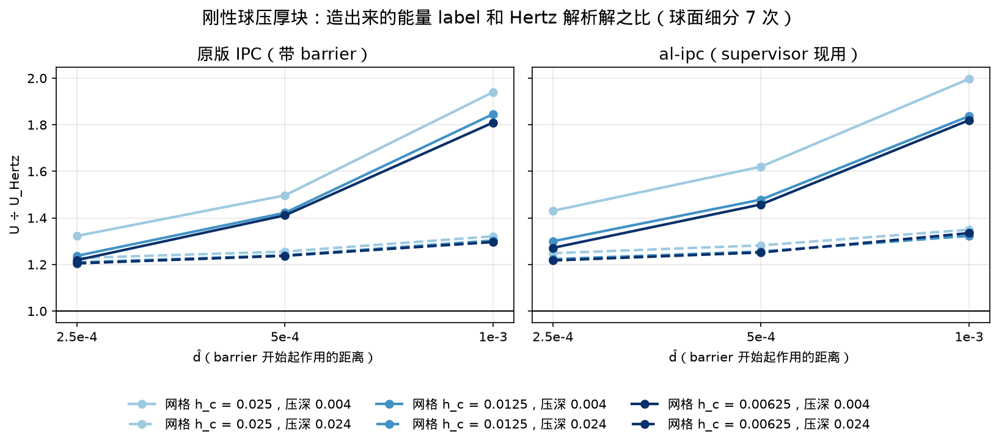

Week 2（TODO 2026-10-04）
文献（hydroelastic、神经网络接触模型）、NeuralIPC 代码、Genesis + hydroelastic demo、实验方案、问题与待决定。
文献（hydroelastic、神经网络接触模型）、NeuralIPC 代码、Genesis + hydroelastic demo、实验方案、问题与待决定。
精细仿真（IPC 接触 + FEM）准确但慢。粗模型（刚体 6 自由度、3D 仿射体 12 自由度）快，但不能表达接触区局部变形，接触时两物体会重叠。需要一条规则：给定重叠，产生多大接触力。
- hydroelastic（下文简称 hydro）：Drake 与 Genesis 的做法，用人工设定的压力场计算接触力
- Drake：开源的机器人仿真与设计工具箱，由 R. Tedrake 与 Drake 开发团队开发，用来在电脑里模拟机器人和它抓取、碰到的物体。hydro 的三篇原论文（1.1–1.3）作者都在丰田研究院（Toyota Research Institute），模型就是为 Drake 提出的，开源实现也放在 Drake 里
- Genesis（现名 Genesis World）：开源的通用物理仿真平台，2024 年 12 月起于学术项目、现由 Genesis AI 公司支持，一个场景里可以同时放刚体、FEM 软体等多种物体。它也实现了 hydro（和 1.3 的 SAP 求解器配在一起）；另有一套接触是调用开源库 libuipc 做 IPC。本项目的演示、参数扫描都在 Genesis 里跑，IPC 部分走它调用的 libuipc
- 本项目：神经网络学习碰撞能量 \(U_c\)，接触力由其求导得到
本页结论：hydro 的压强只取决于局部穿入深度；E1–E5 从不同角度说明该假设在弹性体上不成立，且比值判据下调参无法弥补。本项目的 IPC 标签在 E0–E3、E5 与 E4（\(\nu\le0.45\)）与裁判一致；网络能否复现是下一步。
文献：Hydroelastic 与 Hertz 解析解
本节梳理 hydro 从"重叠"到"接触力"的计算链条（1.1 压强怎么来，1.2 压强怎么变成求解器用的力，1.3 怎么求解），提取其建模假设；1.4 给出用于比较的解析解。
1.1 Elandt et al. 2019：压力场模型
条件。 每个物体里预先算好一个压强场：压强只看这一点在物体里有多深，\(\epsilon\) 是穿入程度（表面为 0、最深处为 1），\(E_h\) 是人工设定的压力场模量；两个物体用四面体网格表示，并且发生了重叠。
\[\color{#c0392b}{p_0=E_h\,\epsilon}\]
结论。 接触面取两侧压强相等的那些点，在每对相交的四面体里是一块平面多边形；物体受的接触力是接触面上压强沿法向 \(\hat{\mathbf n}\) 的积分：
\[\color{#c0392b}{\mathcal S=\{\mathbf x:\ p_{0_A}(\mathbf x)=p_{0_B}(\mathbf x)\},\qquad \mathbf f=\int_{\mathcal S}p_0\,\hat{\mathbf n}\;dS}\]
推导：压力场模型（预设压强场 → 等压接触面 → 接触力）
① 预设压强场
已知：物体的形状、材料模量 \(E_h\)；求：物体内每一点的预设压强 \(p_0\)。
\[\begin{cases}\color{#c0392b}{\nabla^2\epsilon=0\ \ \text{（物体内）}} & \color{#c0392b}{(1)}\\[4pt] \color{#c0392b}{\epsilon=0\ \text{（表面）},\quad \epsilon=1\ \text{（中轴）}} & \color{#c0392b}{(2)}\\[4pt] \color{#c0392b}{p_0=E_h\,\epsilon} & \color{#c0392b}{(3)}\end{cases}\ \color{#c0392b}{\Longrightarrow\ \text{固定在物体上的压强场 } p_0(\mathbf x)}\]
式 (1)：定义穿入程度的方程。\(\epsilon\) 是穿入程度，物体内每一点一个数，表示这一点「在物体里有多深」；\(\nabla^2\) 是拉普拉斯算子，三个方向的二阶导数之和。方程说的是：每一点的 \(\epsilon\) 等于它周围一圈的平均值，所以 \(\epsilon\) 在物体里平滑变化，没有突然的高峰和跳变；选它是因为对任意形状都能解出一个光滑的「深度」。
式 (2)：边界条件。中轴是物体内离表面最远的点组成的集合，球的中轴就是球心。这两个条件把 \(\epsilon\) 钉住：表面上为 0，最里面为 1。
式 (3)：预设压强的定义。\(E_h\) 是材料的杨氏模量，即单轴拉压时应力与应变之比，材料越硬越大；\(p_0\) 是这一点的预设压强。它说的是：一点的压强 = 材料硬度 × 这一点的穿入程度；这是人为规定的，不来自力学平衡，目的是让压得越深、材料越硬，推得越狠。
结果：这个场离线算好后固定在物体上，与对面压进来的是什么无关，这正是下面「假设一」的来源。离表面越深 → 压强越大，因为 \(\epsilon\) 从表面 0 一路升到中轴 1。

推导
解式 (1) \(\nabla^2\epsilon=0\)，边界条件取式 (2) 表面 \(\epsilon=0\)、中轴 \(\epsilon=1\)，得到物体内每点的 \(\epsilon(\mathbf x)\)；代入式 (3) \(p_0=E_h\epsilon\)：
\[p_0(\mathbf x)=E_h\,\epsilon(\mathbf x)\]
② 等压接触面
已知：两物体 A、B 各自的压强场，物体用四面体网格表示；求：两物体重叠时的接触面。
\[\begin{cases}\color{#c0392b}{p_0=E_h\,\epsilon} & \color{#c0392b}{(3)}\\[4pt] \color{#c0392b}{p_{0_A}(\mathbf x)=p_{0_B}(\mathbf x)} & \color{#c0392b}{(4)}\\[4pt] \color{#c0392b}{\epsilon(\mathbf x)=\boldsymbol\epsilon\cdot\zeta(\mathbf x)} & \color{#c0392b}{(5)}\end{cases}\ \color{#c0392b}{\Longrightarrow\ (\mathbf a-\mathbf b)\cdot\mathbf x+(a_0-b_0)=0\quad(6)}\]
式 (3)：① 定义的预设压强 \(p_0=E_h\epsilon\)，对 A、B 两个物体各用一次。
式 (4)：接触面的定义。\(\mathbf x\) 是重叠区里的一点，\(p_{0_A}\)、\(p_{0_B}\) 是 A、B 在这一点的预设压强。它说的是：接触面取两边压强正好相等的那些点；之所以取相等处，是因为接触面两侧受力必须平衡，作用力等于反作用力。
式 (5)：四面体网格上的插值定义。\(\boldsymbol\epsilon\) 是一个四面体四个顶点的穿入程度，\(\zeta(\mathbf x)\) 是点 \(\mathbf x\) 在这个四面体里的重心坐标，即四个顶点的权重，和为 1，随 \(\mathbf x\) 线性变化。它说的是：四面体内的穿入程度按顶点值线性插值，像一块斜坡，沿任何方向都均匀升降。
结果：式 (6) 是一个平面方程，\(\mathbf a\)、\(a_0\) 是 A 侧压强斜坡的斜率与截距，\(\mathbf b\)、\(b_0\) 是 B 侧的。所以接触面在每对相交四面体里是一块平面多边形，整面由这些多边形拼成。哪一侧越硬 → 接触面越靠近它原来的表面，它被压进去越少，因为它的压强升得快，在较浅处就和对面相等。


推导
式 (5) \(\epsilon=\boldsymbol\epsilon\cdot\zeta(\mathbf x)\) 中重心坐标 \(\zeta\) 是 \(\mathbf x\) 的线性函数，代入式 (3) \(p_0=E_h\epsilon\)，A、B 两侧的压强都是 \(\mathbf x\) 的线性函数：
\[p_{0_A}(\mathbf x)=\mathbf a\cdot\mathbf x+a_0,\qquad p_{0_B}(\mathbf x)=\mathbf b\cdot\mathbf x+b_0\]
代入式 (4) \(p_{0_A}=p_{0_B}\)，移项：
\[(\mathbf a-\mathbf b)\cdot\mathbf x+(a_0-b_0)=0\qquad(6)\]
式 (6) 是平面方程；它与两个四面体的公共部分相交，得到一块平面多边形。
③ 接触力
已知：接触面 \(\mathcal S\) 及其上每点的压强 \(p_0\) 与单位法向 \(\hat{\mathbf n}\)；求：物体受的总接触力 \(\mathbf f\)。
\[\begin{cases}\color{#c0392b}{\mathbf T=p_0\,\hat{\mathbf n}} & \color{#c0392b}{(7)}\\[4pt] \color{#c0392b}{\mathbf f=\displaystyle\int_{\mathcal S}\mathbf T\,dS} & \color{#c0392b}{(8)}\end{cases}\ \color{#c0392b}{\Longrightarrow\ \mathbf f=\int_{\mathcal S}p_0\,\hat{\mathbf n}\;dS\quad(9)}\]
式 (7)：法向牵引的定义。\(\mathbf T\) 是牵引，即接触面上每单位面积受到的推力；\(p_0\) 是这一点的压强；\(\hat{\mathbf n}\) 是这一点接触面的单位法向。它说的是：压强只往垂直于接触面的方向推，大小等于压强；没有摩擦时，接触面上只有这种垂直的推力。
式 (8)：合力的定义。\(dS\) 是接触面上一小块面积，\(\mathcal S\) 是整个接触面。它说的是：把每一小块面积上的推力加起来就是物体受的总力。
结果：重叠越深 → 力越大，因为接触面上每点压强更大、接触面也更大；接触面越平 → 各小块推力方向越一致、合力越接近「压强 × 面积」，因为法向相同的推力不会互相抵消。

推导
把式 (7) \(\mathbf T=p_0\hat{\mathbf n}\) 代入式 (8) \(\mathbf f=\int_{\mathcal S}\mathbf T\,dS\)：
\[\mathbf f=\int_{\mathcal S}p_0\,\hat{\mathbf n}\;dS\qquad(9)\]
实现
Drake 与 Genesis 取 \(\epsilon\) = 到表面距离 ÷ 物体内最大距离，因此
\[\color{#c0392b}{p=\frac{E_h}{D_h}\times\text{深度}}\]
- \(E_h\)：压力场模量（Pa），人工设定。Genesis 中刚体共用 \(H\)（默认 \(10^8\) Pa），FEM 软体按材料设置（默认 \(10^7\) Pa）
- \(D_h\)：物体内到表面的最大距离；\(E_h/D_h\) 为压强梯度（Pa/m）
两者对刚体的处理不同：
- Drake：刚体自己没有压力场，只用一层表面网格表示；接触面就取刚体表面（被软体占据的那一部分），压强全部来自软体一侧的压力场。相当于刚体一侧无限硬，即 1.2「实现」里的「刚体侧梯度取无穷大」
- Genesis：刚体–刚体接触时刚体也带压力场，压强 = 刚体内到表面的距离 ÷ 最大距离 × \(H\)（\(H\) 默认 \(10^8\) Pa，见上），两侧像 1.2 ② 那样串联。刚体压 FEM 软体时则和 Drake 一样：接触面取刚体表面落在软体里的部分，压强取软体压力场在那里的值；\(H\) 只当刚体一侧的梯度，进入弹簧刚度 \(k\)（见 1.2「实现」）
- 直观：同样把刚体压进软体同样深，Drake 和 Genesis 的接触面都在刚体表面上，整个重叠都由软体被压进去；两者只差弹簧刚度 \(k\)，静止时的力一样
论文的验证结果
与 FEM 对比：整面贴合接触时力一致；点状接触时偏小 23%，作者归因于忽略泊松效应。
- 泊松比 \(\nu\)：单轴压缩时侧向膨胀应变 \(\varepsilon_{\text{侧}}\) 与轴向压缩应变 \(\varepsilon_{\text{轴}}\) 之比，取值在 0 到 0.5 之间，等于 0.5 时体积不变
-
泊松效应：材料在一个方向受压时，会在与之垂直的方向上变形，比如被竖着压时往侧面鼓。hydro 每点压强只看自己的深度，表达不出这种横向的牵连；上面点状接触时力偏小，就归因于忽略了泊松效应
\[\color{#c0392b}{\nu=-\frac{\varepsilon_{\text{侧}}}{\varepsilon_{\text{轴}}}}\]
结论（假设一）：hydro 每点压强只取决于该点穿入深度。论文自身结果已显示该假设在点状接触时有偏差。
1.2 Masterjohn et al. 2022：速度层面近似
Elandt 的模型配合加速度层面的变步长积分器使用（每步由力求加速度再积分，接触刚度大时步长须很小，无法实时）。1.1 的接触面由许多平面多边形拼成，本文把每块多边形改写为一根弹簧，使其可用于速度层面求解器（每步隐式求下一时刻速度，可取大步长），hydro 因此可实时运行，已在 Drake 开源。
条件。 1.1 的接触面由平面多边形拼成，每块多边形上压强随位置线性变化；接触面两侧的压强都随深入深度线性增大，斜率（压强梯度）分别是 \(\Gamma_A\)、\(\Gamma_B\)，\(s_A\)、\(s_B\) 是接触面进入两侧的深度；一个时间步内多边形面积取步首值 \(A_0\)；接触只推不拉：
\[\color{#c0392b}{p_A=\Gamma_A\,s_A,\qquad p_B=\Gamma_B\,s_B,\qquad A=A_0,\qquad f_n\ge0}\]
结论。 每块多边形等价于一根独立的弹簧。\(\phi\) 是形心处的有符号距离（穿透为负），\(f_n\) 是这块多边形给的法向力，\((\cdot)_+\) 表示负数取 0：
\[\color{#c0392b}{f_n=(-k\phi)_+,\qquad k=\Gamma\,A_0,\qquad \Gamma=\frac{\Gamma_A\,\Gamma_B}{\Gamma_A+\Gamma_B}}\]
推导：一块多边形 → 一根弹簧
① 一块多边形的力 = 面积 × 形心压强
已知：一块平面接触多边形的面积 \(A\)、形心 \(\mathbf x_c\)、形心处压强 \(p_c\)、多边形上的压强梯度 \(\nabla p\)；求：这块多边形给的法向力 \(f_n\)。
\[\begin{cases}\color{#c0392b}{f_n=\displaystyle\int_A p\,dA} & \color{#c0392b}{(1)}\\[4pt] \color{#c0392b}{p(\mathbf x)=p_c+\nabla p\cdot(\mathbf x-\mathbf x_c)} & \color{#c0392b}{(2)}\\[4pt] \color{#c0392b}{\mathbf x_c=\dfrac1A\displaystyle\int_A\mathbf x\,dA} & \color{#c0392b}{(3)}\end{cases}\ \color{#c0392b}{\Longrightarrow\ f_n=A\,p_c\quad(4)}\]
式 (1)：法向力的定义。\(f_n\) 是这块多边形给的法向力，\(p\) 是多边形上的压强，\(dA\) 是一小块面积。它说的是：把每一小块面积上的推力加起来就是这块多边形的总推力；多边形是平的，各小块推的方向相同，所以只需把大小加起来。
式 (2)：线性压强场。\(\mathbf x\) 是多边形上的一点，\(\mathbf x_c\) 是形心，\(p_c\) 是形心处的压强，\(\nabla p\) 是压强梯度，即沿各方向每走单位长度压强变多少。它说的是：多边形落在一对四面体里，而四面体内压强按顶点值线性插值，所以压强在多边形上像一块斜坡，形心处是 \(p_c\)，离开形心按固定斜率均匀升降。
式 (3)：形心的定义，即多边形上所有点位置的平均。它说的是：形心就是多边形的几何中心。
结果：多边形越大、形心处压强越大 → 力越大，因为斜坡在形心两侧多出来的和少掉的正好抵消，只剩「平均压强 × 面积」，而线性函数的平均值就是形心处的值。

推导
把式 (2) \(p=p_c+\nabla p\cdot(\mathbf x-\mathbf x_c)\) 代入式 (1) \(f_n=\int_Ap\,dA\)：
\[f_n=\int_A p_c\,dA+\nabla p\cdot\int_A(\mathbf x-\mathbf x_c)\,dA\]
式 (3) \(\mathbf x_c=\frac1A\int_A\mathbf x\,dA\) 两边乘 \(A\) 移项：
\[\int_A(\mathbf x-\mathbf x_c)\,dA=0\]
代回：
\[f_n=p_c\,A+\nabla p\cdot0=A\,p_c\qquad(4)\]
② 压强与重叠量：梯度串联
已知：A、B 两侧的压强梯度 \(\Gamma_A\)、\(\Gamma_B\)，该处两物体重叠的总深度 \(\delta\)；求：接触面上的压强 \(p\) 与合成梯度 \(\Gamma\)。
\[\begin{cases}\color{#c0392b}{p_A=\Gamma_A\,s_A} & \color{#c0392b}{(5)}\\[4pt] \color{#c0392b}{p_B=\Gamma_B\,s_B} & \color{#c0392b}{(6)}\\[4pt] \color{#c0392b}{p_A=p_B=p} & \color{#c0392b}{(7)}\\[4pt] \color{#c0392b}{s_A+s_B=\delta=-\phi} & \color{#c0392b}{(8)}\end{cases}\ \color{#c0392b}{\Longrightarrow\ p=\Gamma\,\delta=-\Gamma\,\phi,\quad \Gamma=\dfrac{\Gamma_A\,\Gamma_B}{\Gamma_A+\Gamma_B}\quad(9)}\]
式 (5)：A 侧的压强场。\(p_A\) 是 A 侧在接触面处的压强，\(\Gamma_A\) 是 A 侧的压强梯度，即每深入单位长度压强增加多少，\(s_A\) 是接触面进入 A 的深度。它说的是：A 侧被压进去越深，A 侧压强越大，而且按固定斜率 \(\Gamma_A\) 线性增大：压进 1 mm，压强就增加 \(\Gamma_A\times\)1 mm。原因是 1.1 的压强场随深度线性增长，\(\Gamma_A\) 等于压力场模量除以物体内到表面的最大距离。
式 (6)：B 侧同理，\(p_B\) 是 B 侧压强，\(\Gamma_B\) 是 B 侧压强梯度，\(s_B\) 是接触面进入 B 的深度。
式 (7)：接触面的定义。\(p\) 是接触面上的压强。它说的是：接触面停在两边压强打平的地方，因为接触面两侧受力必须平衡，作用力等于反作用力。
式 (8)：几何关系。\(\delta\) 是两物体在该处重叠的总深度，\(\phi\) 是有符号距离，两表面分开为正、穿透为负。它说的是：接触面把总重叠分成进入 A 和进入 B 两段，两段加起来就是总重叠。
结果：\(\Gamma\) 是合成梯度。任一侧越软，即梯度越小 → \(\Gamma\) 越小，而且比两侧中较软的那个还小，因为这就是两根弹簧串联，总刚度由软的一根主导；软的一侧分到的重叠深度也更多。

推导
由式 (5) \(p_A=\Gamma_As_A\)、式 (6) \(p_B=\Gamma_Bs_B\) 与式 (7) \(p_A=p_B=p\) 解出两段深度：
\[s_A=\frac{p}{\Gamma_A},\qquad s_B=\frac{p}{\Gamma_B}\]
代入式 (8) \(s_A+s_B=\delta\)：
\[p\Big(\frac1{\Gamma_A}+\frac1{\Gamma_B}\Big)=\delta\]
解出 \(p\)，分子分母同乘 \(\Gamma_A\Gamma_B\)，再用式 (8) \(\delta=-\phi\)：
\[p=\frac{\Gamma_A\,\Gamma_B}{\Gamma_A+\Gamma_B}\,\delta=\Gamma\,\delta=-\Gamma\,\phi\qquad(9)\]
③ 一个时间步内重叠量的变化
已知：步首形心处压强 \(p_{c,0}\)、合成梯度 \(\Gamma\)、步长 \(\Delta t\)、法向相对速度 \(v_n\)；求：步末形心处压强 \(p_c\)。
\[\begin{cases}\color{#c0392b}{p=-\Gamma\,\phi} & \color{#c0392b}{(9)}\\[4pt] \color{#c0392b}{\phi=\phi_0+\Delta t\,v_n} & \color{#c0392b}{(10)}\end{cases}\ \color{#c0392b}{\Longrightarrow\ p_c=p_{c,0}-\Gamma\,\Delta t\,v_n\quad(11)}\]
式 (9)：② 推出的压强 = 合成梯度 × 重叠深度，\(\phi\) 是有符号距离，穿透为负；这里用在形心上，步首和步末各用一次。
式 (10)：一步内的运动学关系。\(\phi_0\) 是步首的有符号距离，\(\Delta t\) 是一个时间步的长度，\(v_n\) 是两物体在法向的相对速度，分开为正。它说的是：一步之内重叠量按当前的相对速度匀速变化，这就是「速度 = 距离变化 ÷ 时间」；例如以 1 m/s 分开、步长 1 ms，有符号距离增加 1 mm。
结果：\(p_{c,0}\) 是步首形心处压强。分开得越快或步长越大 → 压强降得越多；合成梯度 \(\Gamma\) 越大 → 同样的速度下压强变化越快，因为压强 = \(\Gamma\) × 重叠深度，重叠变了多少，压强就按 \(\Gamma\) 倍跟着变。

推导
式 (9) \(p=-\Gamma\phi\) 用在步首形心，已知步首压强 \(p_{c,0}\)，反解步首有符号距离：
\[\phi_0=-\frac{p_{c,0}}{\Gamma}\]
式 (9) 用在步末形心，代入式 (10) \(\phi=\phi_0+\Delta t\,v_n\)：
\[p_c=-\Gamma\,\phi_0-\Gamma\,\Delta t\,v_n\]
代入 \(-\Gamma\,\phi_0=p_{c,0}\)：
\[p_c=p_{c,0}-\Gamma\,\Delta t\,v_n\qquad(11)\]
④ 得到弹簧
已知：步首面积 \(A_0\)、合成梯度 \(\Gamma\)、有符号距离 \(\phi\)；求：这块多边形的法向力 \(f_n\)。
\[\begin{cases}\color{#c0392b}{f_n=A\,p_c} & \color{#c0392b}{(4)}\\[4pt] \color{#c0392b}{p=-\Gamma\,\phi} & \color{#c0392b}{(9)}\\[4pt] \color{#c0392b}{A=A_0} & \color{#c0392b}{(12)}\\[4pt] \color{#c0392b}{f_n\ge0} & \color{#c0392b}{(13)}\end{cases}\ \color{#c0392b}{\Longrightarrow\ f_n=(-k\phi)_+,\quad k=\Gamma\,A_0\quad(14)}\]
式 (4)：① 推出的力 = 面积 × 形心压强，\(f_n\) 是法向力，\(A\) 是多边形面积，\(p_c\) 是形心处压强。
式 (9)：② 推出的压强 = 合成梯度 × 重叠深度，用在形心上。
式 (12)：一步内的近似。\(A_0\) 是步首的面积。它说的是：一步之内面积变化很小，把多边形当成大小不变的一块，这样力对未知的下一步速度是线性的，求解器才能隐式地解。
式 (13)：接触只能推不能拉，两物体已经分开时力为 0。
结果：\(k\) 是这根弹簧的刚度，\((\cdot)_+=\max(\cdot,0)\) 表示负数取 0。多边形越大、合成梯度越大 → 弹簧越硬，因为同样的重叠下面积大、压强升得快，力都更大；每块多边形各自一根弹簧，刚度只看自己的面积和梯度。

推导
式 (9) \(p=-\Gamma\phi\) 用在形心，与式 (12) \(A=A_0\) 一起代入式 (4) \(f_n=A\,p_c\)：
\[f_n=-\Gamma\,A_0\,\phi\]
记 \(k=\Gamma\,A_0\)，按式 (13) 力不能为负，取正部：
\[f_n=(-k\phi)_+,\qquad k=\Gamma\,A_0\qquad(14)\]
实现
- Drake：刚体侧梯度取无穷大
- Genesis 刚体–刚体：两侧真实梯度串联，与论文一致
- Genesis 刚体–地面：地面不带压力场，合成梯度取刚体的真实梯度，即全局刚度 \(H\) 除以刚体尺寸 \(D_h\)，自洽
-
Genesis 刚体–FEM 软体：刚体一侧的梯度直接取全局刚度 \(H\)（单位 Pa，按 Pa/m 使用），不随刚体尺寸 \(D_h\) 变化，与 FEM 侧真实梯度串联得合成梯度 \(\Gamma\)；弹簧刚度 \(k\) 和步首有符号距离 \(\phi_0\) 用同一个 \(\Gamma\)。把式 (11) \(p_c=p_{c,0}-\Gamma\,\Delta t\,v_n\) 代入式 (4) \(f_n=A\,p_c\)，面积取步首值 \(A_0\)，得到下式。静止时法向速度 \(v_n=0\)，力只剩 \(A_0\) 乘 \(p_{c,0}\)，与 \(H\) 无关；\(H\) 只影响一步内力随速度的变化
\[\color{#c0392b}{f_n=A_0\,p_{c,0}-A_0\,\Gamma\,\Delta t\,v_n}\]
-
Genesis FEM–FEM：穿入量按两侧真实梯度 \(\Gamma_A\)、\(\Gamma_B\) 算，刚度却取全局刚度 \(H\) 乘面积 \(A_0\)，见下面第一式。这样算出的静止力见第二式，它随 \(H\) 变化，而且单位是 Pa·m²·m，不是力，量纲不一致。论文的静止力按式 (9)(14) 是 \(A_0\) 乘 \(p_{c,0}\)；Genesis 把刚度里的 \(\Gamma\) 换成了 \(H\)，静止力变为论文值的 \(H/\Gamma\) 倍。该接触对未做单独实验验证
\[\color{#c0392b}{\phi_0=-\frac{p_{c,0}}{\Gamma_A}-\frac{p_{c,0}}{\Gamma_B},\qquad k=A_0H}\]
\[\color{#c0392b}{k(-\phi_0)=A_0H\,p_{c,0}\Big(\frac1{\Gamma_A}+\frac1{\Gamma_B}\Big)=\frac{H}{\Gamma}\,A_0\,p_{c,0}}\]
结论（假设二）：每块接触多边形为一根独立弹簧，刚度只由该块面积和压强梯度决定（式 (14)），相邻接触区互不影响。
1.3 Castro et al. 2023：SAP 求解器
带接触的时间步进通常要解"不接触则无力、有力则必须贴紧"的二选一条件，难以稳健求解。本文把柔顺接触的一步时间积分写成只含速度的强凸无约束优化，求解器称为 SAP，解唯一，牛顿法可证收敛。Drake 与 Genesis 的 hydro 都用它。
条件。 每个接触是 1.2 的弹簧再加一个阻尼：\(k\) 是接触刚度，\(\tau_d\) 是耗散时间尺度，\(\Delta t\) 是步长；一步之内有符号距离按下一步法向速度 \(v_n\) 匀速变化；全体物体满足动量方程，\(\mathbf M\) 是质量矩阵，\(\mathbf v^*\) 是不计接触时的下一步速度，\(\mathbf J^T\boldsymbol\gamma\) 是各接触冲量合起来对物体的作用：
\[\color{#c0392b}{\gamma_n/\Delta t=(-k\phi-\tau_d\,k\,v_n)_+,\qquad \phi=\phi_0+\Delta t\,v_n,\qquad \mathbf M(\mathbf v-\mathbf v^*)=\mathbf J^T\boldsymbol\gamma(\mathbf v)}\]
结论。 下一步速度是一个碗形函数的唯一最低点，牛顿法一定能求到；接触刚度大到弹簧的振动周期短于 \(\beta\) 个步长时，\(R\) 被一个只含数值参数 \(\beta\)、质量 \(m\) 的下限顶住，力不再由压力场给的 \(k\) 决定：
\[\color{#c0392b}{\mathbf v=\arg\min_{\mathbf v}\ \tfrac12\|\mathbf v-\mathbf v^*\|_{\mathbf M}^2+\sum_{\text{接触}}\tfrac12R_n\,\gamma_n^2,\qquad R_n=\max\Big(\frac{\beta^2}{4\pi^2}\,\frac1m,\ \frac{1}{\Delta t\,k(\Delta t+\tau_d)}\Big)}\]
推导：SAP（带阻尼的弹簧冲量 → 动量方程 = 求最小值 → 近刚性封顶）
① 每个接触是一根带阻尼的弹簧
已知：接触刚度 \(k\)、耗散时间尺度 \(\tau_d\)、步长 \(\Delta t\)、步首有符号距离 \(\phi_0\)；求：一步内的法向冲量 \(\gamma_n\)，用下一步法向速度 \(v_n\) 表示。
\[\begin{cases}\color{#c0392b}{\gamma_n/\Delta t=(-k\phi-\tau_d\,k\,v_n)_+} & \color{#c0392b}{(1)}\\[4pt] \color{#c0392b}{\phi=\phi_0+\Delta t\,v_n} & \color{#c0392b}{(2)}\end{cases}\ \color{#c0392b}{\Longrightarrow\ \gamma_n=\Delta t\big(-k\phi_0-k(\Delta t+\tau_d)\,v_n\big)_+\quad(3)}\]
式 (1)：带阻尼弹簧的接触模型。\(\gamma_n\) 是一步内的法向冲量，即力乘步长；\(k\) 是接触刚度；\(\phi\) 是下一步的有符号距离，穿透为负；\(\tau_d\) 是耗散时间尺度，单位秒，阻尼系数为 \(\tau_dk\)；\(v_n\) 是法向相对速度，分开为正；\((\cdot)_+\) 表示负数取 0。它说的是：接触力 = 弹簧力 + 阻尼力，穿得越深推得越大，相互靠近得越快推得越大，只推不拉；\(\tau_d\) 越大，碰后反弹越小。
式 (2)：一步内的运动学关系。\(\phi_0\) 是步首的有符号距离。它说的是：一步之内重叠量按下一步的速度匀速变化，下一步的穿透量 = 步首穿透量 + 一步内走过的量。
结果：步首穿得越深 → 冲量越大；下一步相互靠近得越快 → 冲量越大，因为弹簧会被压得更深、阻尼也更大。冲量只含下一步速度这一个未知量，所以可以隐式求解，步长可以取大。

推导
把式 (2) \(\phi=\phi_0+\Delta t\,v_n\) 代入式 (1) \(\gamma_n=\Delta t(-k\phi-\tau_dk\,v_n)_+\)：
\[\gamma_n=\Delta t\big(-k\phi_0-k\,\Delta t\,v_n-\tau_d\,k\,v_n\big)_+\]
合并 \(v_n\) 项：
\[\gamma_n=\Delta t\big(-k\phi_0-k(\Delta t+\tau_d)\,v_n\big)_+\qquad(3)\]
② 动量方程 = 一个碗形函数的最低点
已知：质量矩阵 \(\mathbf M\)、不计接触时的下一步速度 \(\mathbf v^*\)、每个接触的冲量；求：下一步速度 \(\mathbf v\)。
\[\begin{cases}\color{#c0392b}{\gamma_n=\Delta t\big(-k\phi_0-k(\Delta t+\tau_d)\,v_n\big)_+} & \color{#c0392b}{(3)}\\[4pt] \color{#c0392b}{\mathbf M(\mathbf v-\mathbf v^*)=\mathbf J^T\boldsymbol\gamma(\mathbf v)} & \color{#c0392b}{(4)}\\[4pt] \color{#c0392b}{R=\dfrac{1}{\Delta t\,k(\Delta t+\tau_d)}} & \color{#c0392b}{(5)}\end{cases}\ \color{#c0392b}{\Longrightarrow\ \mathbf v=\arg\min_{\mathbf v}\ \tfrac12\|\mathbf v-\mathbf v^*\|_{\mathbf M}^2+\sum_{\text{接触}}\tfrac12R\,\gamma_n^2\quad(6)}\]
式 (3)：① 推出的每个接触的冲量，随下一步速度线性变化后取正部。
式 (4)：牛顿第二定律的一步形式，即隐式欧拉的动量方程。\(\mathbf M\) 是质量矩阵，\(\mathbf v\) 是下一步所有自由度的速度，\(\mathbf v^*\) 是不计接触时的下一步速度，\(\boldsymbol\gamma\) 是所有接触的冲量，\(\mathbf J\) 把接触冲量换成各自由度上的冲量。它说的是：质量 × 速度的改变量，全部来自接触冲量，就是冲量 = 动量变化。
式 (5)：记号定义。\(R\) 是 (3) 中冲量随下一步速度变化的斜率的倒数：下一步速度每增加一点，冲量按固定比例减少。
结果：解动量方程等价于找 (6) 中函数的最低点。\(k\)、\(\Delta t\)、\(\tau_d\) 越大 → \(R\) 越小，接触项越「硬」，因为同样的速度变化引起更大的冲量变化。函数是碗形，第一项因质量矩阵正定是碗形，第二项是线性函数取正部再平方，也向上弯，所以最低点唯一，牛顿法每步下降都能走到它。

推导
记目标函数：
\[\ell(\mathbf v)=\tfrac12(\mathbf v-\mathbf v^*)^T\mathbf M(\mathbf v-\mathbf v^*)+\sum_{\text{接触}}\tfrac12R\,\gamma_n^2\]
第一项对 \(\mathbf v\) 求导：
\[\frac{\partial}{\partial\mathbf v}\tfrac12(\mathbf v-\mathbf v^*)^T\mathbf M(\mathbf v-\mathbf v^*)=\mathbf M(\mathbf v-\mathbf v^*)\]
\(\gamma_n>0\) 时，由式 (3) \(\gamma_n=\Delta t\big(-k\phi_0-k(\Delta t+\tau_d)v_n\big)\) 与式 (5) \(R=1/(\Delta t\,k(\Delta t+\tau_d))\)：
\[\frac{d\gamma_n}{dv_n}=-\Delta t\,k(\Delta t+\tau_d)=-\frac1R\]
第二项对 \(v_n\) 求导：
\[\frac{d}{dv_n}\Big(\tfrac12R\gamma_n^2\Big)=R\,\gamma_n\cdot\Big(-\frac1R\Big)=-\gamma_n\]
经 \(\mathbf J\) 换到所有自由度上，令总导数为 0，正是式 (4)：
\[\mathbf M(\mathbf v-\mathbf v^*)-\mathbf J^T\boldsymbol\gamma=0\]
所以式 (4) 的解就是 \(\ell\) 的最低点：
\[\mathbf v=\arg\min_{\mathbf v}\ \ell(\mathbf v)\qquad(6)\]
③ 近刚性处理：刚度封顶
已知：接触刚度 \(k\)、质量 \(m\)、步长 \(\Delta t\)、数值参数 \(\beta\)；求：SAP 实际使用的 \(R_n\)。
\[\begin{cases}\color{#c0392b}{R=\dfrac{1}{\Delta t\,k(\Delta t+\tau_d)}} & \color{#c0392b}{(5)}\\[4pt] \color{#c0392b}{\omega_n^2=\dfrac km,\quad T_n=\dfrac{2\pi}{\omega_n}} & \color{#c0392b}{(7)}\\[4pt] \color{#c0392b}{T_n=\beta\,\Delta t,\quad \tau_d=\dfrac{\beta}{\pi}\Delta t} & \color{#c0392b}{(8)}\end{cases}\ \color{#c0392b}{\Longrightarrow\ R_n=\max\Big(\frac{\beta^2}{4\pi^2}\,\frac1m,\ \frac{1}{\Delta t\,k(\Delta t+\tau_d)}\Big)\quad(9)}\]
式 (5)：② 定义的 \(R\)，冲量对速度斜率的倒数；\(R\) 越小，接触越硬。
式 (7)：简谐振子定律。\(m\) 是质量，\(\omega_n\) 是接触振动的角频率，\(T_n\) 是振动周期。它说的是：接触像一个质量挂在弹簧上振动，弹簧越硬、质量越小，振得越快。
式 (8)：近刚性的界限。\(\beta\) 是数值参数，默认 1。它说的是：步长能分辨的最快振动，周期大约是一个步长；把周期取到这个界限，就得到步长允许的最硬弹簧；阻尼取成正好不反弹也不拖沓的临界阻尼，由此得到 \(\tau_d=(\beta/\pi)\Delta t\)。若真实周期比一步还短，一步之内振动就完成了，步长看不清它，这叫近刚性。
结果：真实刚度给的 \(R\) 太小，即弹簧太硬时，就用步长允许的下限顶住。\(k\) 越大、\(\Delta t\) 越大 → 越容易被下限顶住而触发封顶；一旦触发，接触力由 \(\beta\)、步长、质量决定，与压力场给的 \(k\) 无关。

推导
由式 (7) \(T_n=2\pi\sqrt{m/k}\) 与式 (8) \(T_n=\beta\,\Delta t\)：
\[2\pi\sqrt{\frac mk}=\beta\,\Delta t\quad\Longrightarrow\quad k=\frac{4\pi^2m}{\beta^2\Delta t^2}\]
代入式 (5) \(R=1/(\Delta t\,k(\Delta t+\tau_d))\)；这一步是 SAP 论文采用的近似 \(\Delta t+\tau_d\approx\Delta t\)（\(\beta=1\) 时精确值是近似值的 0.76 倍，量级相同）：
\[R\approx\frac{1}{\Delta t^2k}=\frac{\beta^2}{4\pi^2}\,\frac1m\]
真实刚度给的值小于这个下限时取下限：
\[R_n=\max\Big(\frac{\beta^2}{4\pi^2}\,\frac1m,\ \frac{1}{\Delta t\,k(\Delta t+\tau_d)}\Big)\qquad(9)\]
实现
- Drake：每次牛顿迭代用稀疏 Cholesky 分解；\(\tau_d\) 取接触两侧几何体各自的值之和，每侧默认 0.1 s
- Genesis：每步最多 5 次牛顿迭代，方向用预条件共轭梯度求；\(\tau_d\) 全局一个值，默认 0.1 s
结论：SAP 按 1.2 的刚度求解；接触刚度大到触发近刚性处理时，力改由数值参数决定，不再是压力场给出的值。
1.4 Hertz 1882：解析裁判
两个光滑弹性曲面接触的闭式解，不依赖任何仿真代码，作为比较 hydro 与本项目的裁判。

这张图说明：刚球压进弹性垫子时，真正贴住球的区域比两者几何重叠的区域窄。横轴是离接触中心的水平距离，竖直方向放大显示。红线是球面，蓝线是垫子变形后的表面，米色是垫子，灰色虚线是垫子原来的表面；球底比原表面低出压深 \(\delta\)。中间粉色带是真实接触区 \(|r|\le a=\sqrt{R\delta}\)：带内蓝线贴着红线，垫子跟着球面凹下去。到粉色带边缘，垫子已经下陷 \(\delta/2\)，并不是回到原表面才和球分开。再往外，球面要到右侧点线 \(r=\sqrt{2R\delta}\)（几何重叠的边缘）才升回原表面，但这一段蓝线在红线下方，两者之间是缝隙：垫子被接触区带着下陷，却没有碰到球。所以按几何重叠估的接触半径比真实的宽。
条件。 刚球（半径 \(R\)）压弹性半空间（杨氏模量 \(E\)、泊松比 \(\nu\)，即侧向膨胀应变 ÷ 轴向压缩应变），压深 \(\delta\)；两个物体都可变形时，两者的下沉相加，结论只需把有效模量 \(E^*\) 和半径 \(R\) 换成下面的合成值，下标 1、2 表示两个物体：
\[\color{#c0392b}{\frac{1}{E^*}=\frac{1-\nu_1^2}{E_1}+\frac{1-\nu_2^2}{E_2},\qquad \frac1R=\frac1{R_1}+\frac1{R_2}}\]
接触区比球小得多，球面比最低点高出的 \(h\) 远小于 \(R\)；接触区（半径 \(a\)）内垫子表面贴住球面，下沉 \(u\) 等于压深减去球面高出的量；线弹性、无摩擦：
\[\color{#c0392b}{r^2+(R-h)^2=R^2,\qquad h\ll R,\qquad u(r)=\delta-h(r)\ \ (r\le a)}\]
结论。 真实接触半径、合力、弹性能、刚度分别是
\[\color{#c0392b}{a^2=R\delta,\qquad F=\frac43E^*R^{1/2}\delta^{3/2},\qquad U=\frac{8}{15}E^*R^{1/2}\delta^{5/2},\qquad K=2E^*a}\]
推导：Hertz 接触（球面形状 → 接触半径 → 合力 → 弹性能 → 刚度）
① 球面形状
已知：球半径 \(R\)、离最低点的水平距离 \(r\)；求：该处球面比最低点高出的 \(h\)。
\[\begin{cases}\color{#c0392b}{r^2+(R-h)^2=R^2} & \color{#c0392b}{(1)}\\[4pt] \color{#c0392b}{h\ll R} & \color{#c0392b}{(2)}\end{cases}\ \color{#c0392b}{\Longrightarrow\ h\approx\frac{r^2}{2R}\quad(3)}\]
式 (1)：勾股定理。\(R\) 是球半径，\(r\) 是离最低点的水平距离，\(h\) 是这一点球面比最低点高出的量。它说的是：球心在最低点正上方 \(R\) 处，球面上这一点到球心的距离也是 \(R\)；水平边 \(r\)、竖直边 \(R-h\)、斜边 \(R\) 正好构成一个直角三角形。
式 (2)：只看最低点附近的条件。接触只发生在球底很小一片，那里高出的量比球半径小得多；例如 \(R=1\) m、\(h=1\) mm 时，\(h^2\) 比 \(2Rh\) 小两千倍，可以丢掉。
结果：离中心越远 → 高出越多，而且按平方涨，远一倍高出四倍，因为碗底越往外越陡；球越大 → 同样距离高出越少，因为大球的碗底更平。

推导
展开式 (1) \(r^2+(R-h)^2=R^2\)：
\[r^2+R^2-2Rh+h^2=R^2\]
两边消去 \(R^2\)：
\[r^2=2Rh-h^2\]
由式 (2) \(h\ll R\)，\(h^2\) 相对 \(2Rh\) 可略去：
\[h\approx\frac{r^2}{2R}\qquad(3)\]
② 压深与几何重叠
已知：球半径 \(R\)、压深 \(\delta\)；求：假设垫子不变形时的重叠半径 \(a_{\text{几何}}\)。
\[\begin{cases}\color{#c0392b}{h\approx\dfrac{r^2}{2R}} & \color{#c0392b}{(3)}\\[4pt] \color{#c0392b}{\delta-h(a_{\text{几何}})=0} & \color{#c0392b}{(4)}\end{cases}\ \color{#c0392b}{\Longrightarrow\ a_{\text{几何}}^2=2R\delta\quad(5)}\]
式 (3)：① 推出的球面形状，离中心 \(r\) 处的球面比最低点高出 \(r^2/(2R)\)。
式 (4)：几何重叠边缘的定义。\(\delta\) 是压深，即球最低点进入垫子原表面以下的深度；\(a_{\text{几何}}\) 是假设垫子一点不变形时，球与垫子重叠区的半径。它说的是：离中心 \(r\) 处的球面在原表面以下 \(\delta-h\)；重叠区的边缘就是球面正好回到原表面、这个差为 0 的地方。
结果：假如垫子一点不凹，球插进去的那一圈有多大；压得越深 → 这一圈越大，但只按平方根变大，因为越往外球面越陡、越难再多插进一圈。下面会看到真实接触比这一圈小。

推导
把式 (3) \(h=r^2/(2R)\) 在 \(r=a_{\text{几何}}\) 处的值代入式 (4)：
\[\delta-\frac{a_{\text{几何}}^2}{2R}=0\]
移项：
\[a_{\text{几何}}^2=2R\delta\qquad(5)\]
③ 接触半径与中心压强
已知：球半径 \(R\)、压深 \(\delta\)、模量 \(E^*\)；求：真实接触半径 \(a\) 与中心压强 \(p_0\)。
\[\begin{cases}\color{#c0392b}{h\approx\dfrac{r^2}{2R}} & \color{#c0392b}{(3)}\\[4pt] \color{#c0392b}{u(r)=\delta-h(r),\quad r\le a} & \color{#c0392b}{(6)}\\[4pt] \color{#c0392b}{u=\dfrac{P}{\pi E^*s}} & \color{#c0392b}{(7)}\\[4pt] \color{#c0392b}{p(t)=p_0\sqrt{1-t^2/a^2}} & \color{#c0392b}{(8)}\end{cases}\ \color{#c0392b}{\Longrightarrow\ a^2=R\delta,\ \ p_0=\frac{2aE^*}{\pi R}\quad(9);\qquad u(a)=\frac\delta2\quad(10)}\]
式 (3)：① 推出的球面形状。
式 (6)：接触条件。\(r\) 是离接触中心的距离，\(a\) 是真实接触半径，\(u\) 是该处垫子表面往下陷的深度，\(\delta\) 是压深。它说的是：接触区里垫子表面必须正好贴着球面；球底压下去 \(\delta\)，而离中心 \(r\) 处的球面比球底高 \(h\)，所以那里垫子只需陷 \(\delta-h\)。
式 (7)：弹性半空间的点力解。\(P\) 是作用在表面一点上的力，\(s\) 是离受力点的距离，\(E^*=E/(1-\nu^2)\) 是垫子的有效模量，\(E\) 是杨氏模量，\(\nu\) 是泊松比。它说的是：按住一点，周围表面也跟着陷，陷的量与力成正比、与距离成反比、与材料硬度成反比，远一倍陷一半；原因是线弹性里下沉与载荷成正比，而弹性体里点力的影响随距离按 1/距离 衰减。
式 (8)：试探的压强分布。\(t\) 是接触面上一点离接触中心的距离，\(p\) 是该处压强，\(p_0\) 是中心压强。它说的是：先猜压强在接触圆里呈半个椭圆形，中心最大，到接触边缘平滑降到 0；下面验证按 (7) 叠加出的下沉能对接触区内每一点都满足 (6)，猜对了就是解。
结果：压得越深 → 接触圈越大、中心压强也越大；球越大 → 接触圈越大，但中心压强反而越小，因为同一压深下，力只按 √R 增大，接触面积却按 R 增大，面积涨得更快；材料越硬 → 同一压深下中心压强越大。因为压一点周围都跟着陷，接触边缘的垫子已经被带着陷了一半压深，所以真实接触半径比几何重叠 (5) 的小，平方之比为 1 : 2。


推导
式 (7) \(u=P/(\pi E^*s)\) 对接触区内每一小块面积 \(dA\) 上的力 \(p\,dA\) 求和，\(B\) 是要求下沉的点，\(C\) 是施压点，\(s\) 是两点距离：
\[u(B)=\frac{1}{\pi E^*}\int\frac{p(C)}{s}\,dA\]
以 \(B\) 为原点用极坐标 \((s,\varphi)\) 表示 \(C\)，\(dA=|s|\,ds\,d\varphi\)，与 \(1/s\) 约去：
\[u(r)=\frac{1}{\pi E^*}\int_0^{\pi}\!\!\int p\,ds\,d\varphi\]
\(C\) 到接触中心的距离：
\[t^2=r^2+2rs\cos\varphi+s^2\]
代入式 (8) \(p=p_0\sqrt{1-t^2/a^2}\) 并配方，记 \(c^2=a^2-r^2\sin^2\varphi\)：
\[p=\frac{p_0}{a}\sqrt{c^2-(s+r\cos\varphi)^2}\]
对 \(s\) 积分是半径为 \(c\) 的半圆面积：
\[\int p\,ds=\frac{p_0}{a}\cdot\frac{\pi}{2}c^2\]
对 \(\varphi\) 积分，用 \(\int_0^\pi\sin^2\varphi\,d\varphi=\pi/2\)：
\[u(r)=\frac{\pi p_0a}{2E^*}-\frac{\pi p_0}{4aE^*}\,r^2\]
式 (6) 中代入式 (3)：\(u=\delta-\dfrac{r^2}{2R}\)。两者对所有 \(r\le a\) 相等，\(r^2\) 的系数与常数项分别相等：
\[\frac{\pi p_0}{4aE^*}=\frac{1}{2R},\qquad \frac{\pi p_0a}{2E^*}=\delta\]
由第一式，再代入第二式：
\[p_0=\frac{2aE^*}{\pi R},\qquad \frac{a^2}{R}=\delta\quad\Longrightarrow\quad a^2=R\delta\qquad(9)\]
接触边缘 \(r=a\) 处，代入 \(u=\delta-r^2/(2R)\)：
\[u(a)=\delta-\frac{a^2}{2R}=\delta-\frac{\delta}{2}=\frac{\delta}{2}\qquad(10)\]
④ 合力
已知：③ 的接触半径与中心压强；求：合力 \(F\)。
\[\begin{cases}\color{#c0392b}{p(t)=p_0\sqrt{1-t^2/a^2}} & \color{#c0392b}{(8)}\\[4pt] \color{#c0392b}{a^2=R\delta,\quad p_0=\dfrac{2aE^*}{\pi R}} & \color{#c0392b}{(9)}\\[4pt] \color{#c0392b}{F=\displaystyle\int_0^a p(t)\,2\pi t\,dt} & \color{#c0392b}{(11)}\end{cases}\ \color{#c0392b}{\Longrightarrow\ F=\frac43E^*R^{1/2}\delta^{3/2}\quad(12)}\]
式 (8)：③ 的压强分布，中心为 \(p_0\)，到边缘降到 0。
式 (9)：③ 推出的接触半径与中心压强；\(E^*\) 是有效模量，\(R\) 是球半径，\(\delta\) 是压深。
式 (11)：合力的定义。\(F\) 是合力，\(t\) 是离接触中心的距离，\(2\pi t\,dt\) 是半径 \(t\)、宽 \(dt\) 的一圈圆环的面积，即周长乘宽。它说的是：把每一圈圆环上的力加起来就是总力；算出来等于接触圆面积乘平均压强，平均压强是中心压强的 2/3。
结果：压深越大 → 力越大，而且比压深涨得快，按 1.5 次方，因为每处压得更深，接触圈又同时变宽，两件事叠在一起；球越大 → 力越大，但只按开方涨：同一压深下大球的接触面积和半径成正比，但平均压强按半径的开方变小，两者相乘只剩开方。

推导
把式 (8) \(p=p_0\sqrt{1-t^2/a^2}\) 代入式 (11)：
\[F=2\pi p_0\int_0^a\sqrt{1-\frac{t^2}{a^2}}\;t\,dt\]
换元 \(\tau=1-t^2/a^2\)，\(t\,dt=-\dfrac{a^2}{2}d\tau\)，\(t\) 从 0 到 \(a\) 对应 \(\tau\) 从 1 到 0：
\[F=2\pi p_0\cdot\frac{a^2}{2}\int_0^1\tau^{1/2}\,d\tau=\frac23\pi a^2p_0\]
代入式 (9) \(p_0=\dfrac{2aE^*}{\pi R}\)：
\[F=\frac{4E^*a^3}{3R}\]
代入式 (9) \(a^2=R\delta\)，\(a^3=R^{3/2}\delta^{3/2}\)：
\[F=\frac43E^*R^{1/2}\delta^{3/2}\qquad(12)\]
⑤ 弹性能
已知：④ 的力–压深关系；求：弹性能 \(U\)。
\[\begin{cases}\color{#c0392b}{F=\tfrac43E^*R^{1/2}\delta^{3/2}} & \color{#c0392b}{(12)}\\[4pt] \color{#c0392b}{U=\displaystyle\int_0^\delta F\,d\delta'} & \color{#c0392b}{(13)}\end{cases}\ \color{#c0392b}{\Longrightarrow\ U=\frac{8}{15}E^*R^{1/2}\delta^{5/2}\quad(14)}\]
式 (12)：④ 推出的力–压深关系，力随压深按 1.5 次方增长。
式 (13)：功能原理。\(U\) 是弹性能，\(\delta'\) 是从 0 涨到 \(\delta\) 的中间压深。它说的是：把球慢慢从 0 压到 \(\delta\)，每多压一小段 \(d\delta'\) 就要做功 \(F\,d\delta'\)；这些功全部存成垫子的弹性能，所以能量就是力–压深曲线下面的面积。
结果：压深越大 → 能量越大，而且比力再多涨一次方，按 2.5 次方，因为每多压一点，都是在已经很大的力上再做功；在对数坐标里是一条斜率 2.5 的直线，压头中心凸出得越陡，斜率越大（下面第二张图）。


推导
把式 (12) \(F=\tfrac43E^*R^{1/2}\delta'^{3/2}\) 代入式 (13)：
\[U=\frac43E^*R^{1/2}\int_0^\delta\delta'^{3/2}\,d\delta'\]
\(\delta'^{3/2}\) 的原函数是 \(\tfrac25\delta'^{5/2}\)：
\[U=\frac43E^*R^{1/2}\cdot\frac25\delta^{5/2}=\frac{8}{15}E^*R^{1/2}\delta^{5/2}\qquad(14)\]
⑥ 刚度
已知：④ 的力–压深关系、③ 的接触半径；求：刚度，即再压一点力多出多少。
\[\begin{cases}\color{#c0392b}{a^2=R\delta} & \color{#c0392b}{(9)}\\[4pt] \color{#c0392b}{F=\tfrac43E^*R^{1/2}\delta^{3/2}} & \color{#c0392b}{(12)}\\[4pt] \color{#c0392b}{K=\dfrac{dF}{d\delta}} & \color{#c0392b}{(15)}\end{cases}\ \color{#c0392b}{\Longrightarrow\ K=2E^*a\quad(16)}\]
式 (9)：③ 推出的接触半径，压得越深接触圈越大，按平方根变大。
式 (12)：④ 推出的力–压深关系。
式 (15)：刚度的定义。\(K\) 是刚度，即力–压深曲线的斜率：再压一点，力多出多少。
结果：刚度等于 \(2E^*\) 乘接触半径：再压一点时，接触圈里的表面整体往下多压一小段，相当于一个半径为 \(a\) 的平底压头再往下压一点，而平底压头的刚度就是 \(2E^*a\)。接触半径越大越硬，所以越压越硬。

推导
把式 (12) \(F=\tfrac43E^*R^{1/2}\delta^{3/2}\) 代入式 (15) \(K=dF/d\delta\)：
\[K=\frac43E^*R^{1/2}\cdot\frac32\delta^{1/2}=2E^*\sqrt{R\delta}\]
由式 (9) \(a^2=R\delta\)：
\[K=2E^*a\qquad(16)\]
适用范围
- 线弹性（应力与应变成正比，变形很小）
- 接触半径 \(a\) 远小于球半径 \(R\)
- 厚块：基体远大于接触区，可按半空间（表面为平面、向下无限延伸的弹性体）处理
- 光滑曲面、无摩擦、准静态（只求平衡状态，忽略惯性）
平底压头、多接触区、薄层超出此范围，需使用其他解析解。
结论：力随球半径的平方根、压深的 1.5 次方增长（式 (12)），刚度与接触半径成正比（式 (16)）。在光滑曲面压厚块的情况下作为裁判。
文献：神经网络接触模型
本节回答三个问题：同类方法学什么、数据从哪来、与本项目的关系。用于说明本项目选择学习能量的理由、可借鉴的做法，以及标签需要自行生成。
共同背景：子空间模型用少量控制量（把手，handle）通过插值驱动全网格，求解快，但做不出局部接触凹陷。三篇 Romero 都在子空间模型上补回接触凹陷，标签构造相同：固定把手 → 求全网格的平衡解 → 减去子空间形状 → 差值为标签。
2.1 Romero et al. 2021：Handle-Based Subspace Contact Corrections
学什么：全网格位移修正
\[\color{#c0392b}{\mathbf{x} = \mathbf{U}\mathbf{q} + \mathbf{F}\left[\mathbf{r}_{\text{int}}(\mathbf{q}) + \mathbf{r}_{\text{ext}}(\text{碰撞体相对把手的位姿})\right]}\]
\(\mathbf U\mathbf q\)：把手插值形状；\(\mathbf r_{\text{int}}\)：无接触时的插值误差；\(\mathbf r_{\text{ext}}\)：碰撞体压出的凹坑；\(\mathbf F\)：把修正从静止姿态转到当前姿态。
输入 → 输出：两个网络，各自独立
| 内修正网络 \(\mathbf r_{\text{int}}\) | 外修正网络 \(\mathbf r_{\text{ext}}\) | |
|---|---|---|
| 输入 | 把手状态 \(\mathbf q\)：所有点把手的位置、所有坐标架把手的位置和朝向，拼成一个向量（长度 = 把手自由度总数） | \(\mathbf A(\mathbf q)^{-1}\mathbf z\)：碰撞体在物体坐标架把手局部坐标系下的位置和朝向，定义见表下 |
| 网络 | 2 层全连接，tanh，200 神经元 | 2 层全连接，tanh，200–3000 神经元 |
| 输出 | 15 个 PCA 系数 | 50–120 个 PCA 系数 |
| 解码 | 15 个系数 × 内修正 PCA 基 = 全网格每个顶点的内修正位移 \(\mathbf r_{\text{int}}\) | 50–120 个系数 × 外修正 PCA 基 = 全网格每个顶点的外修正位移 \(\mathbf r_{\text{ext}}\) |
外修正网络的输入 \(\mathbf A(\mathbf q)^{-1}\mathbf z\)
条件。 把手是一个刚性坐标架，朝向 \(\mathbf R_A\)、位置 \(\mathbf t_A\)，局部坐标按刚体变换换成世界坐标；旋转矩阵满足 \(\mathbf R_A^T\mathbf R_A=\mathbf I\)；碰撞体的状态 \(\mathbf z\) 由它在世界里的位置 \(\mathbf p_z\) 和朝向 \(\mathbf R_z\) 组成：
\[\color{#c0392b}{\mathbf x_{\text{世界}}=\mathbf R_A\,\mathbf x_{\text{局部}}+\mathbf t_A,\qquad \mathbf R_A^{T}\mathbf R_A=\mathbf I,\qquad \mathbf z=(\mathbf p_z,\mathbf R_z)}\]
结论。 外修正网络的输入是碰撞体相对把手的位置和朝向：
\[\color{#c0392b}{\mathbf A(\mathbf q)^{-1}\mathbf z=\big(\mathbf R_A^{T}(\mathbf p_z-\mathbf t_A),\ \mathbf R_A^{T}\mathbf R_z\big)}\]
推导：外修正网络的输入（碰撞体世界位姿 → 相对把手的位姿）
① 刚体变换求逆：世界坐标 → 局部坐标
已知：把手的朝向 \(\mathbf R_A\) 与位置 \(\mathbf t_A\)、某点的世界坐标；求：该点在把手局部坐标系中的坐标。
\[\begin{cases}\color{#c0392b}{\mathbf x_{\text{世界}}=\mathbf R_A\,\mathbf x_{\text{局部}}+\mathbf t_A} & \color{#c0392b}{(1)}\\[4pt] \color{#c0392b}{\mathbf R_A^{T}\mathbf R_A=\mathbf I} & \color{#c0392b}{(2)}\end{cases}\ \color{#c0392b}{\Longrightarrow\ \mathbf x_{\text{局部}}=\mathbf R_A^{T}(\mathbf x_{\text{世界}}-\mathbf t_A)\quad(3)}\]
式 (1)：刚体变换的定义。\(\mathbf R_A\) 是把手的旋转矩阵，即把手的朝向；\(\mathbf t_A\) 是把手的位置；\(\mathbf x_{\text{局部}}\) 是一点在把手坐标系里的坐标；\(\mathbf x_{\text{世界}}\) 是它在世界里的坐标。它说的是：把局部坐标里的一点先按把手朝向转过去，再挪到把手所在位置，就得到世界坐标；刚体只能整体转和整体挪。
式 (2)：旋转矩阵的性质。\(\mathbf I\) 是单位矩阵，\(\mathbf R_A^{T}\) 是转置。它说的是：旋转不改变长度和夹角，所以转回去只要用转置，不用真的求逆矩阵。
结果：把手挪到哪 → 先减掉哪，把手转了多少 → 再反着转回多少，因为求逆就是把「先转后挪」倒过来做成「先退回再反转」。这就是外修正网络输入里的逆变换。

推导
式 (1) \(\mathbf x_{\text{世界}}=\mathbf R_A\mathbf x_{\text{局部}}+\mathbf t_A\) 两边减 \(\mathbf t_A\)：
\[\mathbf x_{\text{世界}}-\mathbf t_A=\mathbf R_A\,\mathbf x_{\text{局部}}\]
两边左乘 \(\mathbf R_A^{T}\)，由式 (2) \(\mathbf R_A^{T}\mathbf R_A=\mathbf I\)：
\[\mathbf x_{\text{局部}}=\mathbf R_A^{T}(\mathbf x_{\text{世界}}-\mathbf t_A)\qquad(3)\]
② 作用到碰撞体上：相对位姿
已知：碰撞体在世界里的位置 \(\mathbf p_z\) 与朝向 \(\mathbf R_z\)；求：碰撞体相对把手的位姿，即外修正网络的输入。
\[\begin{cases}\color{#c0392b}{\mathbf x_{\text{局部}}=\mathbf R_A^{T}(\mathbf x_{\text{世界}}-\mathbf t_A)} & \color{#c0392b}{(3)}\\[4pt] \color{#c0392b}{\mathbf z=(\mathbf p_z,\mathbf R_z)} & \color{#c0392b}{(4)}\end{cases}\ \color{#c0392b}{\Longrightarrow\ \mathbf A(\mathbf q)^{-1}\mathbf z=\big(\mathbf R_A^{T}(\mathbf p_z-\mathbf t_A),\ \mathbf R_A^{T}\mathbf R_z\big)\quad(5)}\]
式 (3)：① 推出的逆变换，把世界坐标换成把手局部坐标，\(\mathbf R_A\)、\(\mathbf t_A\) 是把手的朝向与位置。
式 (4)：碰撞体状态的定义。\(\mathbf z\) 是碰撞体的状态，\(\mathbf p_z\) 是它在世界里的位置，\(\mathbf R_z\) 是它的朝向。它说的是：一个刚性碰撞体在哪、朝哪，就由这两样确定。
结果：\(\mathbf A(\mathbf q)^{-1}\mathbf z\) 是碰撞体相对把手的位姿。物体和碰撞体在世界里一起平移或旋转 → 相对位姿不变 → 网络输入不变，因为两者的平移一起变、旋转一起乘，相减、相乘后抵消；所以同一个凹坑只需学一次。

推导
位置是一个点，直接用式 (3)：
\[\mathbf p_z^{\text{局部}}=\mathbf R_A^{T}(\mathbf p_z-\mathbf t_A)\]
朝向把碰撞体自身的方向 \(\mathbf e\) 转成世界方向 \(\mathbf R_z\mathbf e\)；方向不受平移影响，按式 (3) 只做反转：
\[\mathbf R_A^{T}\mathbf R_z\,\mathbf e\quad\Longrightarrow\quad\mathbf R_z^{\text{局部}}=\mathbf R_A^{T}\mathbf R_z\]
合起来：
\[\mathbf A(\mathbf q)^{-1}\mathbf z=\big(\mathbf R_A^{T}(\mathbf p_z-\mathbf t_A),\ \mathbf R_A^{T}\mathbf R_z\big)\qquad(5)\]
为什么用相对位姿：凹坑形状只由碰撞体相对物体在哪、怎么转决定。物体和碰撞体在世界中一起平移或旋转时，\(\mathbf A(\mathbf q)^{-1}\mathbf z\) 不变，凹坑也不变；直接输入 \(\mathbf z\) 则网络要在每个世界位置重新学同一个凹坑。输入相对位姿，网络只需学碰撞体相对物体的那部分变化。
- PCA：从训练数据中所有修正位移里提取最主要的若干个变形模式（PCA 基，每个模式是一个"全网格位移场"）。任意修正 ≈ 各模式按系数加权求和，所以网络只输出系数
-
两个输出解码后相加，代入「学什么」里的位移公式，得到全网格位置：
\[\color{#c0392b}{\mathbf x=\mathbf U\mathbf q+\mathbf F(\mathbf r_{\text{int}}+\mathbf r_{\text{ext}})}\]
-
速度：仿真时只对 \(\mathbf q\) 求解，比全空间 FEM 快 5–9 倍
数据：在子空间中录制碰撞体以不同深度扫过表面，再用精细 FEM（Neo-Hookean 大变形材料，1–1.7 万四面体）重放并取差。每个物体–碰撞体组合单独生成。仅公开果冻–星形数据，无生成代码。
和我们的关系：学位移，没有可求导的能量；每个组合单独训练。
结论：在子空间上叠加学习的位移修正，学的是形状。
2.2 Romero et al. 2022：Contact-Centric Deformation Learning
学什么：在碰撞体坐标系（固定在碰撞体上、随其运动的坐标系）中学习每个点的位移。该坐标系下凹坑随物体姿态变化平滑，少量数据即可泛化。接触力来自人工罚函数：网格点穿入碰撞体（用碰撞体的 SDF，即空间中每点到碰撞体表面的有符号距离来判断）时，能量按穿入深度的三次方增长，没穿入时为 0。
输入 → 输出：一个网络，逐点调用（网格上每个需要位移的点调用一次）
| 内容 | 个数 | |
|---|---|---|
| 输入 1 | 该点在碰撞体坐标系中的坐标 \(\bar z\) | 3 |
| 输入 2 | 把手状态变换到碰撞体坐标系，再乘该点的蒙皮权重（与该点无关的把手被置零） | 把手自由度总数 |
| 网络 | 全连接 MLP，300 或 500 神经元 | |
| 输出 | 该点在碰撞体坐标系中的位移 | 3 |
| 输出之后 | 乘碰撞体的旋转 \(\mathbf T\) 转到世界坐标，加到把手带动的位置 \(\tilde x\) 上 |
数据：对物体姿态 × 接触位置 × 碰撞体朝向 × 压深均匀采样，精细 FEM 求解后取差。3D 果冻 4.8 万样本、37 小时；鸭子仅用 8 个姿态。仅公开 2D 数据，无仿真与训练代码。
和我们的关系：标签构造与我们相同（固定粗自由度 → 精细解 → 取差）。它存位移、力来自人工罚函数，每个碰撞体单独训练；我们存能量、力由能量求导得到。
结论：在碰撞体坐标系中学习接触位移，少量姿态即可获得实时接触细节。
2.3 Romero et al. 2023：General Collider Descriptors
学什么：以碰撞体局部形状为条件的位移，泛化到训练时未见过的碰撞体。局部形状用 65 个探针描述：以接触点为原点、一根轴沿接触法向建立接触坐标系，在单位球内取 65 个点，读取每点的 SDF 值（到碰撞体表面的有符号距离）。压入越深，落在碰撞体内部的探针越多。
输入 → 输出：一个网络，逐点调用
| 内容 | 个数 | |
|---|---|---|
| 输入 1 | 该点附近 65 个探针的 SDF 值 | 65 |
| 输入 2 | 把手状态变换到接触坐标系，再乘该点的蒙皮权重（与该点无关的把手被置零） | 把手自由度总数 |
| 网络 | 6 层全连接，各层 150, 150, 150, 150, 50, 10 神经元，ELU 激活 | |
| 输出 | 该点在接触坐标系中的位移 | 3 |
| 输出之后 | 先乘接触坐标系的旋转 \(R\) 转到碰撞体坐标系，再乘碰撞体的旋转 \(T\) 转到世界坐标，加到把手带动的位置上 |
数据：被压物体固定为果冻；52 个刚性碰撞体（30 训练、22 测试）。每个碰撞体按以下步骤生成：
- 子空间状态（5 个）：让果冻与该碰撞体做一段交互式子空间仿真，从中挑出把手状态 \(\mathbf q\) 彼此差别最大的 5 个，即果冻的 5 种整体形状
- 接触构型（每个子空间状态 105 个）：随机取三个量组合，即接触点在果冻表面的位置、碰撞体相对果冻的位姿、压入深度
- 标签：把把手固定在该子空间状态，按该接触构型放置碰撞体，精细 FEM 求平衡，求得的位置减去把手带动的位置
每个碰撞体共 5 × 105 = 525 个构型。公开训练代码与数据，无生成代码。
和我们的关系：泛化方向不同。它固定被压物体、泛化到新碰撞体；我们的目标是覆盖多种被压物体。SDF 探针可借用于编码我们的穿透状态。
结论：以 SDF 探针描述碰撞体局部形状，接触位移可泛化到未见碰撞体。
2.4 Dou et al. 2026：RigidFormer
学什么：刚体运动本身，网络替代整个物理求解器。
输入 → 输出：一个网络，一次处理整个场景
| 内容 | 个数 | |
|---|---|---|
| 输入（每个顶点） | 到最近接触几何的位移向量 3 + 速度 \(\mathbf x_t-\mathbf x_{t-1}\) 3 + 相对参考位置 \(\mathbf x_t-\mathbf x_{\text{ref}}\) 3（\(\mathbf x_{\text{ref}}\)：该顶点在物体参考姿态下的坐标，见表下） + 物理参数（质量、摩擦、恢复系数）3 | 12 |
| 输入规模 | 每场景最多 16 个物体，每物体最多 1200 个顶点 | |
| 条件输入 | \([n_s,n_s^2]\)：\(n_s\) 为步长，即调用一次网络前进几帧（训练取 1、5、10 帧），经 FiLM 输入网络，见表下 | 2 |
| 网络 | PointNet 编码器（把每个物体的点云编码为特征）+ 4 层 Transformer（计算物体之间的作用）+ 锚点预测头，共 1.748 亿参数 | |
| 输出（每个物体） | 4 个锚点（见表下）的三维加速度 | 12 |
| 输出之后 | 由锚点加速度求出物体的旋转和平移，作用到所有顶点，见表下 |
参考位置：每个物体有一份固定的参考网格（物体在参考姿态下的顶点坐标 \(\mathbf x_{\text{ref}}\)）。刚体任一时刻的顶点位置 \(\mathbf x_t\) 都是参考网格整体旋转 \(\mathbf R\)、平移 \(\mathbf t\) 的结果，见下式。所以顶点当前位置与参考位置之差，就是该顶点相对参考姿态移动了多少，反映物体当前的姿态。
\[\color{#c0392b}{\mathbf x_t=\mathbf R\,\mathbf x_{\text{ref}}+\mathbf t}\]
锚点：每个物体从顶点中选 4 个点作为锚点，用最远点采样选取：先任取一个顶点，之后每次选离已选点最远的顶点，直到选够 4 个，使锚点在物体上尽量分散。刚体有 6 个自由度，3 个不共线的点即可确定其姿态；论文对比 3、4、8 个锚点，4 个的位置误差最小。
由锚点加速度得到物体运动
条件。 网络每帧给出每个锚点的加速度 \(\mathbf a_t\)，\(\mathbf q_t\) 是锚点在第 \(t\) 帧的位置，\(\Delta t\) 是帧间隔，速度和加速度都按相邻两帧之差定义；物体是刚体，所有顶点都是参考网格整体旋转 \(\mathbf R\)、平移 \(\mathbf t\) 的结果；取让 4 个参考锚点 \(\mathbf q_{\text{ref}}^{k}\) 离预测锚点 \(\hat{\mathbf q}_{t+1}^{k}\) 最近（距离平方和最小）的那个刚体变换：
\[\color{#c0392b}{\mathbf v_t=\frac{\mathbf q_t-\mathbf q_{t-1}}{\Delta t},\qquad \mathbf a_t=\frac{\mathbf v_{t+1}-\mathbf v_t}{\Delta t},\qquad \mathbf x=\mathbf R\,\mathbf x_{\text{ref}}+\mathbf t}\]
\[\color{#c0392b}{(\mathbf R,\mathbf t)=\arg\min_{\mathbf R^T\mathbf R=\mathbf I,\ \det\mathbf R=1}\ \sum_k\big\|\mathbf R\,\mathbf q_{\text{ref}}^{k}+\mathbf t-\hat{\mathbf q}_{t+1}^{k}\big\|^2}\]
结论。 先由加速度得到预测锚点，再求旋转和平移，最后作用到每个顶点 \(v\)。\(\bar{\mathbf q}_{\text{ref}}\)、\(\bar{\hat{\mathbf q}}\) 是两组锚点的形心，\(\mathbf U\)、\(\mathbf V\) 来自两组锚点去掉形心后的相关矩阵 \(\mathbf H=\sum_k\mathbf r_k\hat{\mathbf r}_k^T\) 的奇异值分解：
\[\color{#c0392b}{\hat{\mathbf q}_{t+1}=\mathbf a_t\,\Delta t^2+2\mathbf q_t-\mathbf q_{t-1},\qquad \mathbf t=\bar{\hat{\mathbf q}}-\mathbf R\,\bar{\mathbf q}_{\text{ref}}}\]
\[\color{#c0392b}{\mathbf R=\mathbf V\,\mathrm{diag}\big(1,1,\det(\mathbf V\mathbf U^{T})\big)\,\mathbf U^{T},\qquad \mathbf x_{t+1}^{(v)}=\mathbf R\,\mathbf x_{\text{ref}}^{(v)}+\mathbf t}\]
推导：由锚点加速度得到物体运动（Verlet → Kabsch → 全体顶点）
① Verlet 积分：锚点加速度 → 锚点新位置
已知：锚点在上一帧与当前帧的位置 \(\mathbf q_{t-1}\)、\(\mathbf q_t\)，网络输出的锚点加速度 \(\mathbf a_t\)，帧间隔 \(\Delta t\)；求：锚点新位置。
\[\begin{cases}\color{#c0392b}{\mathbf v_t=\dfrac{\mathbf q_t-\mathbf q_{t-1}}{\Delta t}} & \color{#c0392b}{(1)}\\[4pt] \color{#c0392b}{\mathbf a_t=\dfrac{\mathbf v_{t+1}-\mathbf v_t}{\Delta t}} & \color{#c0392b}{(2)}\end{cases}\ \color{#c0392b}{\Longrightarrow\ \hat{\mathbf q}_{t+1}=\mathbf a_t\,\Delta t^2+2\mathbf q_t-\mathbf q_{t-1}\quad(3)}\]
式 (1)：速度的定义。\(\mathbf q_t\) 是某个锚点在第 \(t\) 帧的位置，\(\mathbf q_{t-1}\) 是上一帧的位置，\(\Delta t\) 是两帧的时间间隔，\(\mathbf v_t\) 是这段时间里的速度。它说的是：速度 = 走过的距离 ÷ 用的时间，只看相邻两帧就知道锚点走得多快，所以网络输入只需两帧。
式 (2)：加速度的定义。\(\mathbf v_{t+1}\) 是下一段时间的速度，\(\mathbf a_t\) 是第 \(t\) 帧的加速度。它说的是：加速度 = 速度的变化 ÷ 时间；训练时也用同一个式子从真实轨迹算出加速度的标签。
结果：\(\hat{\mathbf q}_{t+1}\) 是由网络给的加速度算出的锚点新位置。网络给的加速度越大 → 新位置偏离「按原速度直走」越远，因为 \(2\mathbf q_t-\mathbf q_{t-1}\) 就是按原速度再走一步的位置，加速度项是在它上面加的修正；步长越大，同样的加速度修正得越多，按步长的平方涨。

推导
把式 (1) 用在下一段，\(\mathbf v_{t+1}=(\mathbf q_{t+1}-\mathbf q_t)/\Delta t\)，与 \(\mathbf v_t=(\mathbf q_t-\mathbf q_{t-1})/\Delta t\) 一起代入式 (2) \(\mathbf a_t=(\mathbf v_{t+1}-\mathbf v_t)/\Delta t\)：
\[\mathbf a_t=\frac{\mathbf q_{t+1}-2\mathbf q_t+\mathbf q_{t-1}}{\Delta t^2}\]
两边乘 \(\Delta t^2\)：
\[\mathbf a_t\,\Delta t^2=\mathbf q_{t+1}-2\mathbf q_t+\mathbf q_{t-1}\]
移项，把 \(\mathbf a_t\) 换成网络的输出：
\[\hat{\mathbf q}_{t+1}=\mathbf a_t\,\Delta t^2+2\mathbf q_t-\mathbf q_{t-1}\qquad(3)\]
② Kabsch 对齐：4 个预测锚点 → 一个刚体变换
已知：① 给出的 4 个预测锚点 \(\hat{\mathbf q}_{t+1}^{k}\)、参考姿态下的 4 个锚点 \(\mathbf q_{\text{ref}}^{k}\)；求：一个刚体变换 \((\mathbf R,\mathbf t)\)。
\[\begin{gathered}\begin{cases}\color{#c0392b}{\hat{\mathbf q}_{t+1}^{k}=\mathbf a_t\,\Delta t^2+2\mathbf q_t^{k}-\mathbf q_{t-1}^{k}} & \color{#c0392b}{(3)}\\[4pt] \color{#c0392b}{(\mathbf R,\mathbf t)=\arg\min\displaystyle\sum_k\big\|\mathbf R\,\mathbf q_{\text{ref}}^{k}+\mathbf t-\hat{\mathbf q}_{t+1}^{k}\big\|^2} & \color{#c0392b}{(4)}\\[4pt] \color{#c0392b}{\mathbf R^{T}\mathbf R=\mathbf I,\quad \det\mathbf R=1} & \color{#c0392b}{(5)}\end{cases}\\[8pt] \color{#c0392b}{\Longrightarrow\ \mathbf t=\bar{\hat{\mathbf q}}-\mathbf R\,\bar{\mathbf q}_{\text{ref}}\ \ (6)}\\[4pt] \color{#c0392b}{\mathbf R=\mathbf V\,\mathrm{diag}\big(1,1,\det(\mathbf V\mathbf U^{T})\big)\,\mathbf U^{T}\ \ (7)}\end{gathered}\]
式 (3)：① 推出的锚点新位置，\(k\) 是锚点编号，每个物体 4 个。网络对每个锚点各自预测，彼此间距不一定保持，即不一定是一个刚体。
式 (4)：最佳刚体摆放的定义。\(\mathbf q_{\text{ref}}^{k}\) 是参考姿态下第 \(k\) 个锚点，\(\mathbf R\) 是旋转，\(\mathbf t\) 是平移。它说的是：在所有「只转、只挪、不变形」的摆放里，找一个让参考锚点离预测锚点最近的，距离用平方和来量。
式 (5)：旋转的条件。\(\mathbf I\) 是单位矩阵，\(\det\) 是行列式。它说的是：\(\mathbf R\) 必须保持长度和夹角，并且行列式为 1，是真正的转动而不是镜像翻转。
结果：\(\bar{\mathbf q}_{\text{ref}}\)、\(\bar{\hat{\mathbf q}}\) 是两组锚点各自的形心；\(\mathbf U\)、\(\mathbf V\) 来自两组锚点相关矩阵的奇异值分解，见折叠。预测锚点越不像刚体，间距偏差越大 → 对齐后被「掰回」的量越大，因为结果只能是刚体运动，多出来的变形被丢掉。

推导
式 (4) 的目标函数对 \(\mathbf t\) 求导并令其为 0：
\[\sum_k\big(\mathbf R\,\mathbf q_{\text{ref}}^{k}+\mathbf t-\hat{\mathbf q}_{t+1}^{k}\big)=0\]
4 个锚点，\(\mathbf t\) 出现 4 次；两边除以 4，\(\bar{\mathbf q}_{\text{ref}}=\frac14\sum_k\mathbf q_{\text{ref}}^{k}\)、\(\bar{\hat{\mathbf q}}=\frac14\sum_k\hat{\mathbf q}_{t+1}^{k}\) 是两组锚点的形心：
\[\mathbf R\,\bar{\mathbf q}_{\text{ref}}+\mathbf t-\bar{\hat{\mathbf q}}=0\quad\Longrightarrow\quad\mathbf t=\bar{\hat{\mathbf q}}-\mathbf R\,\bar{\mathbf q}_{\text{ref}}\qquad(6)\]
代回，记去掉形心后的坐标 \(\mathbf r_k=\mathbf q_{\text{ref}}^{k}-\bar{\mathbf q}_{\text{ref}}\)、\(\hat{\mathbf r}_k=\hat{\mathbf q}_{t+1}^{k}-\bar{\hat{\mathbf q}}\)，由式 (5) \(\|\mathbf R\mathbf r_k\|=\|\mathbf r_k\|\)：
\[\sum_k\|\mathbf R\,\mathbf r_k-\hat{\mathbf r}_k\|^2=\sum_k\|\mathbf r_k\|^2+\sum_k\|\hat{\mathbf r}_k\|^2-2\,\mathrm{tr}(\mathbf R\,\mathbf H),\qquad \mathbf H=\sum_k\mathbf r_k\,\hat{\mathbf r}_k^{T}\]
前两项与 \(\mathbf R\) 无关，所以要让 \(\mathrm{tr}(\mathbf R\mathbf H)\) 最大。对 \(\mathbf H\) 做奇异值分解，\(\mathbf U\)、\(\mathbf V\) 是正交矩阵，奇异值从大到小排 \(\sigma_1\ge\sigma_2\ge\sigma_3\ge0\)：
\[\mathbf H=\mathbf U\boldsymbol\Sigma\mathbf V^{T},\qquad \boldsymbol\Sigma=\mathrm{diag}(\sigma_1,\sigma_2,\sigma_3)\]
代入，再用迹的轮换 \(\mathrm{tr}(\mathbf A\mathbf B)=\mathrm{tr}(\mathbf B\mathbf A)\) 把 \(\mathbf V^T\) 挪到最前面：
\[\mathrm{tr}(\mathbf R\mathbf H)=\mathrm{tr}(\mathbf R\,\mathbf U\boldsymbol\Sigma\mathbf V^{T})=\mathrm{tr}(\mathbf V^{T}\mathbf R\,\mathbf U\,\boldsymbol\Sigma)\]
记 \(\mathbf M=\mathbf V^{T}\mathbf R\,\mathbf U\)。三个正交矩阵相乘还是正交矩阵，每一列都是单位向量，所以每个对角元 \(|M_{ii}|\le1\)。\(\boldsymbol\Sigma\) 是对角阵，迹只取到 \(\mathbf M\) 的对角元：
\[\mathrm{tr}(\mathbf M\boldsymbol\Sigma)=M_{11}\sigma_1+M_{22}\sigma_2+M_{33}\sigma_3\le\sigma_1+\sigma_2+\sigma_3\]
等号在 \(\mathbf M=\mathbf I\) 时取到，反解 \(\mathbf R=\mathbf V\mathbf M\mathbf U^{T}\)：
\[\mathbf R=\mathbf V\mathbf U^{T}\]
但式 (5) 要求 \(\det\mathbf R=1\)。由 \(\det\mathbf M=\det\mathbf V^{T}\cdot\det\mathbf R\cdot\det\mathbf U=\det\mathbf R\cdot\det(\mathbf V\mathbf U^{T})\)（正交矩阵的行列式是 \(\pm1\)，\(\det\mathbf V^{T}=\det\mathbf V\)），分两种情况：
- \(\det(\mathbf V\mathbf U^{T})=1\)：\(\mathbf M=\mathbf I\) 满足 \(\det\mathbf M=1\)，就取 \(\mathbf R=\mathbf V\mathbf U^{T}\)。
- \(\det(\mathbf V\mathbf U^{T})=-1\)：\(\det\mathbf M\) 必须是 \(-1\)，\(\mathbf M=\mathbf I\) 不允许。行列式为 \(-1\) 的正交矩阵至少把一个方向翻转，翻转在哪个方向，那一项就从 \(+\sigma_i\) 变成 \(-\sigma_i\)；翻在最小的 \(\sigma_3\) 上损失最小，最大值 \(\sigma_1+\sigma_2-\sigma_3\) 在 \(\mathbf M=\mathrm{diag}(1,1,-1)\) 取到。
两种情况合成一个式子，把 \(\mathbf M=\mathrm{diag}\big(1,1,\det(\mathbf V\mathbf U^{T})\big)\) 代回 \(\mathbf R=\mathbf V\mathbf M\mathbf U^{T}\)：
\[\mathbf R=\mathbf V\,\mathrm{diag}\big(1,1,\det(\mathbf V\mathbf U^{T})\big)\,\mathbf U^{T}\qquad(7)\]
③ 推到所有顶点
已知：② 的旋转与平移、每个顶点的参考位置；求：所有顶点的新位置。
\[\begin{cases}\color{#c0392b}{\mathbf t=\bar{\hat{\mathbf q}}-\mathbf R\,\bar{\mathbf q}_{\text{ref}}} & \color{#c0392b}{(6)}\\[4pt] \color{#c0392b}{\mathbf R=\mathbf V\,\mathrm{diag}\big(1,1,\det(\mathbf V\mathbf U^{T})\big)\,\mathbf U^{T}} & \color{#c0392b}{(7)}\\[4pt] \color{#c0392b}{\mathbf x=\mathbf R\,\mathbf x_{\text{ref}}+\mathbf t} & \color{#c0392b}{(8)}\end{cases}\ \color{#c0392b}{\Longrightarrow\ \mathbf x_{t+1}^{(v)}=\mathbf R\,\mathbf x_{\text{ref}}^{(v)}+\mathbf t\ \ \text{对所有顶点}\ v\quad(9)}\]
式 (6)(7)：② 推出的平移与旋转。
式 (8)：刚体运动的定义。\(\mathbf x_{\text{ref}}\) 是一个顶点在参考姿态下的位置，参考姿态取序列第一帧；\(\mathbf x\) 是它的新位置。它说的是：刚体上所有点只能一起转、一起挪。
结果：\(v\) 是顶点编号。无论物体有多少顶点，都只由 4 个锚点决定，物体严格保持刚性，因为所有顶点用的是同一个旋转和平移。

推导
把式 (6)(7) 给出的 \(\mathbf R\)、\(\mathbf t\) 代入式 (8)，对每个顶点 \(v\)：
\[\mathbf x_{t+1}^{(v)}=\mathbf R\,\mathbf x_{\text{ref}}^{(v)}+\mathbf t\qquad(9)\]
步长输入方式 FiLM（Feature-wise Linear Modulation，逐特征线性调制）
条件。 每个物体有一个 768 维特征 \(h\)；一个小网络（MLP）把步长 \(n_s\) 和它的平方变成每一维各自的缩放 \(\gamma_i\) 与偏移 \(\beta_i\)；每一维特征先乘缩放再加偏移：
\[\color{#c0392b}{\big(\gamma,\beta\big)=\mathrm{MLP}\big([n_s,n_s^2]\big),\qquad h_i\leftarrow\gamma_i\,h_i+\beta_i}\]
结论。 每一维特征都按步长做一次线性变换，同一个网络因此能按不同步长给出不同的预测：
\[\color{#c0392b}{h_i\leftarrow\gamma_i(n_s)\,h_i+\beta_i(n_s),\qquad i=1,\dots,768}\]
推导：步长输入方式 FiLM（步长 → 缩放与偏移 → 调制每维特征）
① 用步长调制特征
已知：每个物体的 768 维特征 \(h\)、步长 \(n_s\)；求：被步长调制后的特征。
\[\begin{cases}\color{#c0392b}{h_i\leftarrow\gamma_i\,h_i+\beta_i} & \color{#c0392b}{(10)}\\[4pt] \color{#c0392b}{\big(\gamma,\beta\big)=\mathrm{MLP}\big([n_s,n_s^2]\big)} & \color{#c0392b}{(11)}\end{cases}\ \color{#c0392b}{\Longrightarrow\ h_i\leftarrow\gamma_i(n_s)\,h_i+\beta_i(n_s)\quad(12)}\]
式 (10)：FiLM 的定义。\(h\) 是网络某一层里一个物体的特征，是一个 768 维向量，\(h_i\) 是它的第 \(i\) 维；\(\gamma_i\) 是第 \(i\) 维的缩放，\(\beta_i\) 是偏移。它说的是：每一维特征先乘一个系数、再加一个偏移，由外部条件决定乘多少、加多少；这样同一套网络权重可以按条件改变行为。
式 (11)：步长条件的定义。\(n_s\) 是步长，即一次预测跨过的帧数，MLP 是一个两层的小网络。它说的是：步长只以 \(n_s\) 和 \(n_s^2\) 两个数进入网络，由它们生成每一层的 \(\gamma\)、\(\beta\)；用 \(n_s^2\) 是因为式 (3) 里位置的修正按步长的平方涨。
结果：同一个网络按不同 \(n_s\) 输出不同步长的预测。\(n_s\) 不同 → \(\gamma\)、\(\beta\) 不同 → 同一场景得到不同步长的一步；步长越大 → 走完同样时长要滚动预测的次数越少、误差累积越少。调制系数只由 \(n_s\) 决定、对所有物体相同，所以不破坏物体顺序的对称性。
![每一行是一次调制：步长 \(n_s\) 以 \([n_s,n_s^2]\) 两个数进入一个两层的小网络，小网络为特征的每一维各给出一个缩放 \(\gamma_i\)（橙）和一个偏移 \(\beta_i\)（绿）；中间蓝色是网络某一层里一个物体的特征 h，768 维这里只画 8 格，颜色深浅只是示意大小。式 (10) 把每一维先乘 \(\gamma_i\)、再加 \(\beta_i\)，得到右边调制后的特征。上下两行的 h 完全一样，只是步长分别取训练里用的 1 和 10，于是 \(\gamma\)、\(\beta\) 不同，调制结果也不同。同一套网络权重就这样按步长改变行为；而且调制系数只由 \(n_s\) 决定、对所有物体相同，不会打乱物体之间的对称性。](assets/images/core_2.4_p.png)
推导
把式 (11) 给出的 \(\gamma(n_s)\)、\(\beta(n_s)\) 代入式 (10)：
\[h_i\leftarrow\gamma_i(n_s)\,h_i+\beta_i(n_s),\qquad i=1,\dots,768\qquad(12)\]
结构细节：每个 FiLM 是一个独立的两层 MLP，编码器输出处一个、解码器每层各一个；最后一层零初始化，所以训练开始时调制是恒等，官方代码写成 \((1+\gamma)h+\beta\)，即同一调制把 \(\gamma\) 平移 1。作用位置是编码器输出处一次，之后每层 Transformer 内注意力（含与 register token 的交叉注意力）之后、逐物体全连接层之前各一次，所以每层的注意力结果都被步长调制。训练时步长在 1、5、10 中随机取，步长 10 的 100 帧误差最低。
数据：MOVi 数据集（PyBullet 刚体仿真），1200 个场景，每个 3–10 个物体抛落互撞，2 s、480 帧。分三个子集：MOVi-Sphere（只有球）、MOVi-A（基本几何体）、MOVi-B（复杂形状）。RigidFormer 官方代码已公开（github.com/Frank-ZY-Dou/Dynamics-Modeling 的 RigidFormer 目录，项目页 people.csail.mit.edu/frankzydou/projects/RigidFormer 有链接）；数据生成脚本在 HopNet（此前最强的学习型刚体仿真方法，基于网格）的仓库。
跨数据集测试：在一个子集上训练、另一个子集上测试，共 6 种组合；比较预测 100 帧后物体质心的位置误差（均方根，m），两者均为每次前进 1 帧：
| 训练 → 测试 | HopNet | RigidFormer | 误差更小 |
|---|---|---|---|
| Sphere → A | 0.197 | 0.183 | RigidFormer |
| Sphere → B | 0.188 | 0.161 | RigidFormer |
| A → Sphere | 0.172 | 0.153 | RigidFormer |
| A → B | 0.202 | 0.208 | HopNet |
| B → Sphere | 0.160 | 0.207 | HopNet |
| B → A | 0.202 | 0.234 | HopNet |
加粗行为 RigidFormer 误差更大的 3 组，其中 2 组是在 MOVi-B 上训练。
和我们的关系：没有局部形变，也没有可加入仿真的能量项；换到未训练过的数据集时，6 组中 3 组不如 HopNet。我们保留粗模型仿真，只学一项能量。
结论：从点云学习刚体运动，替代整个求解器。
2.5 对比
| 学习对象 | 输入 | 输出 | 接触力来源 | 泛化 | |
|---|---|---|---|---|---|
| Romero 2021 | 位移 | 内：把手状态；外：碰撞体相对位姿 | 内 15 / 外 50–120 个 PCA 系数 → 全网格位移 | 不由网络给出 | 无 |
| Romero 2022 | 位移 | 点坐标 3 + 加权把手状态（逐点） | 该点位移 3 | 人工罚函数 | 物体姿态 |
| Romero 2023 | 位移 | 65 个 SDF 值 + 加权把手状态（逐点） | 该点位移 3 | 人工罚函数 | 新碰撞体 |
| RigidFormer | 刚体运动 | 每顶点 12 维特征（全场景） | 每物体 4 锚点 × 3 = 12 | 网络直接给运动 | 新场景 |
| 本项目 | 能量 | 每区 20×20 = 400 个高度 + \(\log\delta\) 1 个 | 每区 1 个能量，求和得 \(U_c\) | 能量求导 | 目标：多种被压物体 |
结论：前三篇学位移，RigidFormer 学运动，本项目学能量；能量求导即接触力，可直接接入现有仿真器。三篇 Romero 均未公开数据生成代码，本项目标签需自行生成。
原代码：碰撞能量 U_c
3.1 思路
\[\color{#c0392b}{U_c(z)=\min_w \Pi(\Phi z+\Psi w)-\Pi(\Phi z)}\]
- \(z\)：粗自由度；\(\Phi z\)：粗模型形状，与对方重叠
- \(\Psi w\)：接触区附近的局部修正变形（\(\Psi\) 为局部变形基，\(w\) 为系数）
- 固定 \(z\)，在不穿透约束下求 \(w\) 使总势能 \(\Pi\)（弹性能 + 重力势能）最小
-
\(U_c\) 为该局部变形引起的能量增量，作为势垒加入粗模型：粗模型不强制不穿透，穿透越深 \(U_c\) 越大。势能对坐标的负梯度即力，所以接触力为
\[\color{#c0392b}{F=-\frac{\partial U_c}{\partial z}}\]
光滑球压厚块时 \(U_c\) 即 Hertz 弹性能（1.4 ⑤），网络学习一般形状下的 \(U_c\)：
\[\color{#c0392b}{U_{\text{Hertz}}=\frac{8}{15}E^*R^{1/2}\delta^{5/2}}\]
设计考虑
- 重力不进入 \(U_c\)
条件。 \(U_c\) 按上面的定义是加局部修正前后总势能之差；重力势能只看每个节点的高度 \(y_i\)，\(m_i\) 是节点质量，\(\mathrm g\) 是重力加速度；粗状态取全网格位置按节点质量加权的仿射拟合，平移部分 \(\mathbf t\) 就是质心；局部修正 \(\Psi w\) 是位置减去这个拟合（\(\mathbf B\) 是拟合的线性部分，\(\mathbf r_i\) 是节点相对质心的静止位置）：
\[\color{#c0392b}{E_{\text{重}}=\sum_i m_i\,\mathrm g\,y_i,\qquad \mathbf t=\sum_i \frac{m_i}{\sum_j m_j}\,\mathbf x_i,\qquad \Psi w=\mathbf x-\big(\mathbf B\,\mathbf r+\mathbf t\big),\quad \sum_i m_i\,\mathbf r_i=0}\]
结论。 局部修正不移动质心，所以它在重力方向做的功为 0，\(U_c\) 与 \(\mathrm g\) 无关，生成标签时可以关掉重力：
\[\color{#c0392b}{\sum_i m_i(\Psi w)_i=0\quad\Longrightarrow\quad \Delta E_{\text{重}}=\mathrm g\sum_i m_i(\Psi w)_{y,i}=0}\]
推导：重力不进入 \(U_c\)（重力项之差 → 质量加权拟合 → 重力项为 0）
① 重力项之差
已知：粗形状 \(\Phi z\)、局部修正 \(\Psi w\)、节点质量 \(m_i\)、重力加速度 \(g\)；求：加修正前后重力势能之差。
\[\begin{gathered}\begin{cases}\color{#c0392b}{U_c(z)=\min_w\Pi(\Phi z+\Psi w)-\Pi(\Phi z)} & \color{#c0392b}{(1)}\\[4pt] \color{#c0392b}{E_{\text{重}}=\sum_i m_i\,g\,y_i} & \color{#c0392b}{(2)}\end{cases}\\[8pt] \color{#c0392b}{\Longrightarrow\ \Delta E_{\text{重}}=E_{\text{重}}(\Phi z+\Psi w)-E_{\text{重}}(\Phi z)=g\sum_i m_i(\Psi w)_{y,i}\quad(3)}\end{gathered}\]
式 (1)：碰撞能量的定义。\(z\) 是粗自由度；\(\Phi z\) 是粗模型给出的形状；\(\Psi w\) 是接触处的局部修正，\(\Psi\) 是局部变形的模板，\(w\) 是每个模板用多少；\(\Pi\) 是总势能，含弹性能、重力势能；\(U_c\) 是碰撞能量。它说的是：\(U_c\) 是「加上局部修正、找到最省力的凹法之后」与「只用粗形状」两种状态的总势能之差。
式 (2)：重力势能。\(m_i\) 是第 \(i\) 个节点的质量，\(\mathrm g\) 是重力加速度，\(y_i\) 是该节点的高度。它说的是：每个节点的重力势能只看它有多高，高度加 1 mm，势能就加 \(m_i\mathrm g\times\)1 mm，所以重力势能是位置的线性函数。
结果：\((\Psi w)_{y,i}\) 是修正让第 \(i\) 个节点在竖直方向挪动的量。修正把质量往下挪得越多 → 重力项越负，因为线性函数之差只和挪动量有关、和粗形状无关。

推导
由式 (2) \(E_{\text{重}}=\sum_im_i\mathrm g\,y_i\)，加修正后每个节点的高度是粗形状的高度加修正的竖直分量：
\[E_{\text{重}}(\Phi z+\Psi w)=\sum_im_i\mathrm g\big((\Phi z)_{y,i}+(\Psi w)_{y,i}\big)\]
减去只有粗形状时的 \(E_{\text{重}}(\Phi z)=\sum_im_i\mathrm g\,(\Phi z)_{y,i}\)：
\[\Delta E_{\text{重}}=g\sum_im_i(\Psi w)_{y,i}\qquad(3)\]
这一项就是式 (1) 的总势能之差里重力贡献的部分。
② 质量加权拟合：局部修正不移动质心
已知：全网格节点位置 \(\mathbf x_i\) 与质量 \(m_i\)；求：局部修正的质量加权和。
\[\begin{cases}\color{#c0392b}{\mathbf t=\displaystyle\sum_i \frac{m_i}{\sum_j m_j}\,\mathbf x_i} & \color{#c0392b}{(4)}\\[4pt] \color{#c0392b}{\Psi w=\mathbf x-\big(\mathbf B\,\mathbf r+\mathbf t\big),\quad \sum_i m_i\,\mathbf r_i=0} & \color{#c0392b}{(5)}\end{cases}\ \color{#c0392b}{\Longrightarrow\ \sum_i m_i(\Psi w)_i=0\quad(6)}\]
式 (4)：粗模型平移的定义。\(\mathbf x_i\) 是第 \(i\) 个节点的位置，\(m_i\) 是它的质量，\(\mathbf t\) 是粗模型的平移部分。它说的是：粗状态取全网格位置按节点质量加权的仿射拟合，拟合出的平移就是质心的位置；重的节点权重大。
式 (5)：局部修正的定义。\(\mathbf B\) 是拟合出的线性部分，即整体拉伸、剪切、转动（这里只需要平移取质心；\(\mathbf B\) 取最小二乘拟合还是体积平均变形梯度，都不影响式 (6)）；\(\mathbf r_i\) 是节点相对加权质心的静止位置，它们的质量加权和为 0。它说的是：修正 = 位置减去它自己的质量加权仿射拟合，修正里任何整体平移、整体拉伸的成分都先被拿走，交给粗模型。
结果：局部修正只在质心附近来回挪，质心一点不动。粗模型能表示的整体运动越完整，比如含平移的刚体、仿射体 → 修正里剩下的越只是局部凹陷，因为所有能被拟合的部分都已归入粗形状。

推导
对式 (5) \(\Psi w=\mathbf x-(\mathbf B\mathbf r+\mathbf t)\) 两边乘 \(m_i\) 求和：
\[\sum_im_i(\Psi w)_i=\sum_im_i\mathbf x_i-\mathbf B\sum_im_i\mathbf r_i-\Big(\sum_jm_j\Big)\mathbf t\]
由式 (5) \(\sum_im_i\mathbf r_i=0\)，再代入式 (4) \(\mathbf t=\sum_i m_i\mathbf x_i/\sum_j m_j\)：
\[\sum_im_i(\Psi w)_i=\sum_im_i\mathbf x_i-0-\sum_im_i\mathbf x_i=0\qquad(6)\]
③ 重力项恒为 0
已知：① 与 ② 的结果；求：重力对 \(U_c\) 的影响。
\[\begin{cases}\color{#c0392b}{\Delta E_{\text{重}}=g\displaystyle\sum_i m_i(\Psi w)_{y,i}} & \color{#c0392b}{(3)}\\[4pt] \color{#c0392b}{\displaystyle\sum_i m_i(\Psi w)_i=0} & \color{#c0392b}{(6)}\end{cases}\ \color{#c0392b}{\Longrightarrow\ \Delta E_{\text{重}}=0,\quad U_c\ \text{与}\ g\ \text{无关}\quad(7)}\]
式 (3)：① 推出的加修正前后的重力势能之差，等于 \(\mathrm g\) 乘修正在竖直方向挪动质量的总量。
式 (6)：② 推出的修正的质量加权和为 0。
结果：重力项恒为 0，\(U_c\) 和最优修正都与 \(\mathrm g\) 无关；所以生成标签时可以关掉重力，重力由粗模型通过质心承担。重力再大 → \(U_c\) 也不变，因为重力在修正方向上做功为 0。

推导
式 (6) \(\sum_im_i(\Psi w)_i=0\) 取竖直分量：
\[\sum_im_i(\Psi w)_{y,i}=0\]
代入式 (3) \(\Delta E_{\text{重}}=g\sum_im_i(\Psi w)_{y,i}\)：
\[\Delta E_{\text{重}}=g\cdot0=0\]
所以式 (1) 的总势能之差里没有重力项，\(U_c\) 与 \(g\) 无关：(7)。
- 底部固定的物体也不例外：真实物体一端固定，它的粗模型代理并不需要固定那一端。代理允许穿透，完整代表精细解里的仿射变化（包括压缩后质心的整体下移），只是不含局部变形。所以粗状态的平移仍取精细解的质量加权质心，局部修正不移动质心，重力项同样为 0（这一点与线性部分怎么取无关，见 ② 的推导）
-
\(U_c\) 与粗模型绑定：粗模型自身能表示的变形越多，剩给 \(U_c\) 的越少。刚体粗模型不存弹性能，全部变形能都在 \(U_c\) 中；仿射体粗模型可整体均匀压缩，这部分由粗模型自身承担。由上一条，重力项为 0，\(U_c\) 只剩弹性能之差，见下式；其中 \(E_{\text{总}}\) 是精细解的总弹性能，\(\bar{\mathbf F}\) 是全物体平均变形梯度，即变形后对变形前位置的导数的体积平均，\(\psi\) 是单位体积弹性能，\(V_0\) 是体积。E5 的标签与裁判都按 \(\psi(\bar{\mathbf F})V_0\) 算仿射部分；它与质量加权最小二乘拟合出的线性部分一般不完全相同，标签代码两种都记。为刚体训练的 \(U_c\) 直接用于仿射体，会把整体压缩能量重复计算
\[\color{#c0392b}{U_c^{\text{仿射}}=E_{\text{总}}-\psi(\bar{\mathbf F})\,V_0}\]
3.2 训练数据
刚性压头压弹性半空间（表面为平面、向下无限延伸的弹性体），等效模量取 1，即无量纲化；\(E\) 是杨氏模量，\(\nu\) 是泊松比：
\[\color{#c0392b}{E^*=\frac{E}{1-\nu^2}=1}\]
压头形状（基体原表面为高度 0 的平面，压头在曲面上方）：
\[\color{#c0392b}{z_{\text{压头}}(x,y)=H+\min_k z_k(x,y)+t_y\,x-t_x\,y}\]
- \(z_k\)：第 \(k\) 个凸起（每个样本 1–3 个），中心 \(\mathbf x_k\) 在边长 0.2 的正方形内随机、两两间距不小于 0.08。多个凸起取最小值，即哪个更低用哪个
-
每个凸起的表面高度 \(z_k\) 由两部分相加：
- 抛物面（凸起主体）。由 1.4，球面在离最低点水平距离 \(r\) 处比最低点高出的量写成曲率 \(\kappa\)（半径的倒数）的形式，最低点放在 \(\mathbf x_0=(x_0,y_0)\)；x、y 两个方向用不同曲率 \(\kappa_x\)、\(\kappa_y\)，取值在 0.5 到 3 之间。沿 x 方向截面是曲率 \(\kappa_x\) 的抛物线，沿 y 方向截面曲率为 \(\kappa_y\)；两者不等时俯视等高线是椭圆而非圆
-
高斯项（凹坑，2–3 个，叠加在抛物面上）：\(\mathbf x_0\) 是凹坑中心，\(A_g\) 是高度，\(s\) 是宽度。在 \(\mathbf x_0\) 处高度为 \(A_g\)；离 \(\mathbf x_0\) 距离 \(s\) 处降为 \(A_g\) 的 0.61 倍，距离 \(3s\) 外接近 0，即高度在 \(\mathbf x_0\) 附近、宽约 \(s\) 的范围内局部增大。\(A_g\) 取 0.004–0.012，\(s\) 取 0.015–0.03，\(\mathbf x_0\) 离凸起中心 0.01–0.05。压头在曲面上方、朝下压，高度增大即该处压头表面抬高、离基体更远（相对压头本身是一个凹坑），此处接触变浅或脱开
\[\color{#c0392b}{\frac{r^2}{2R}=\tfrac12\kappa r^2,\qquad z_{\text{抛物}}=\tfrac12\big(\kappa_x(x-x_0)^2+\kappa_y(y-y_0)^2\big),\qquad z_{\text{高斯}}=A_g\exp\!\Big(-\frac{|\mathbf x-\mathbf x_0|^2}{2s^2}\Big)}\]
-
两部分相加后，凸起不再是一个球面：Hertz 只需一个半径，这里需要 \(\kappa_x\)、\(\kappa_y\) 和每个高斯项的位置、高度、宽度。所以网络以高度图而不是单个曲率描述形状
- \(t_x\)、\(t_y\)：压头绕 x 轴、y 轴的小倾角，范围 ±0.02 rad。倾角很小时，转动引起的表面升高近似与坐标成正比，见下式第一项（这里转角的正方向与右手定则相反，倾角在 ±0.02 对称取样，不影响结果）
-
\(H\)：压头整体高度。先求刚接触时的高度 \(m\)，再取下式，使全场最深穿透恰为 \(\delta\)
\[\color{#c0392b}{x\sin t_y\approx t_y\,x,\qquad m=\min\big(\min_k z_k+t_yx-t_xy\big),\qquad H=-m-\delta}\]
压深扫描：同一形状取 \(d=0.003、0.006、0.009、0.012\) 四个压深，各算一个标签。同一形状只有一个压深时，网络无法分辨能量变化来自形状还是压深，会记住样本；扫描压深使网络看到每个形状的能量–压深曲线。
划分：520 组形状 × 4 个压深 = 2080 个样本；按形状留出 1/4 测试，测试形状未在训练中出现。
3.3 标签：BEM
BEM（边界元法）：只在基体表面划网格，内部变形由半空间解析解给出。对 3.2 的每个样本求弹性能作为标签。
网格：原表面 \(z=0\) 上间距 \(\ell=0.008\) 的方格，取 \(r\le0.18\) 的圆盘（覆盖所有可能接触处），共 1597 格；每格压强取常数 \(p_j\)。网格建在变形前的表面上：线弹性小变形下，表面点的水平移动和表面倾斜忽略不计。
条件。 半空间表面一点上按一个力 \(P\)，离它 \(s\) 处的下沉是 \(u\)；线弹性下各格压强造成的下沉直接相加；\(w_i\) 是第 \(i\) 格处压头若表面不变形会压进去多少（\(z\) 是压头表面高度，\(z_0\) 是它的最低点）；压强不能为负，表面不能穿过压头，有压强的格子表面正好贴住压头；每格受力 \(p_i\ell^2\)，从零慢慢加载，做功是力乘下沉的一半：
\[\color{#c0392b}{u=\frac{P}{\pi E^*s},\qquad w=\delta-(z-z_0),\qquad U=\sum_i\tfrac12\,(p_i\ell^2)\,u_i}\]
\[\color{#c0392b}{p_i\ge0,\qquad u_i\ge w_i,\qquad p_i>0\Rightarrow u_i=w_i}\]
结论。 下沉是压强的线性函数（柔度矩阵 \(C\)），压强是一个带非负约束的二次最小化的解，标签是二次型：
\[\color{#c0392b}{u=C\,p,\qquad p=\arg\min_{p\ge0}\ \tfrac12 p^TCp - p^Tw,\qquad U=\tfrac12\ell^2\,p^TCp}\]
推导：BEM 标签（下沉与压强 → 求压强 → 弹性能）
① 下沉与压强：柔度矩阵
已知：表面方格网（间距 \(\ell\)）、各格压强 \(p_j\)、模量 \(E^*\)；求：各格下沉 \(u_i\)。
\[\begin{cases}\color{#c0392b}{u=\dfrac{P}{\pi E^*s}} & \color{#c0392b}{(1)}\\[4pt] \color{#c0392b}{u_i=\displaystyle\sum_j u_{i\leftarrow j}} & \color{#c0392b}{(2)}\\[4pt] \color{#c0392b}{C_{ij}=\displaystyle\int_{\text{第 }j\text{ 格}}\frac{dA}{\pi E^*s_i}} & \color{#c0392b}{(3)}\end{cases}\ \color{#c0392b}{\Longrightarrow\ u_i=\sum_jC_{ij}\,p_j\ \Longleftrightarrow\ u=C\,p\quad(4)}\]
式 (1)：弹性半空间的点力解。\(P\) 是压在表面一点上的力，\(s\) 是离受力点的距离，\(u\) 是该处表面的下沉，\(E^*\) 是有效模量。它说的是：按住一点，周围也跟着陷，陷的量与力成正比、与距离成反比、与材料硬度成反比，远一倍陷一半；原因是线弹性里下沉与载荷成正比，弹性体里点力的影响按 1/距离 衰减。
式 (2)：线弹性的叠加原理。\(u_{i\leftarrow j}\) 是第 \(j\) 格的压强在第 \(i\) 格造成的下沉，\(u_i\) 是第 \(i\) 格的总下沉。它说的是：线弹性下各处载荷造成的下沉可以直接相加。
式 (3)：柔度系数的定义。\(\ell\) 是方格边长，\(s_i\) 是第 \(j\) 格里一点到第 \(i\) 格中心的距离，\(C_{ij}\) 是第 \(j\) 格受单位均匀压强时第 \(i\) 格中心的下沉。它说的是：一格均匀压强可以看成格里许多小点力，按式 (1) 在这一格上积分；这个数只由网格和材料决定，算一次即可。
结果：\(C\) 是柔度矩阵。某格压强越大 → 所有格都陷得越多，离它越近的格陷得越多，因为 \(C_{ij}\) 大约与两格距离成反比；\(E^*\) 越大 → \(C\) 越小，同样压强陷得越少。

推导
第 \(j\) 格的压强 \(p_j\) 是单位压强的 \(p_j\) 倍；按式 (1) 下沉与载荷成正比，由式 (3) 的单位下沉 \(C_{ij}\)：
\[u_{i\leftarrow j}=C_{ij}\,p_j\]
代入式 (2) \(u_i=\sum_ju_{i\leftarrow j}\)：
\[u_i=\sum_jC_{ij}\,p_j\quad\Longleftrightarrow\quad u=C\,p\qquad(4)\]
② 求压强：带非负约束的二次最小化
已知：① 的柔度矩阵 \(C\)、各格压头压入量 \(w_i\)；求：各格压强 \(p\)。
\[\begin{cases}\color{#c0392b}{u=C\,p} & \color{#c0392b}{(4)}\\[4pt] \color{#c0392b}{w=\delta-(z-z_0)} & \color{#c0392b}{(5)}\\[4pt] \color{#c0392b}{p_i\ge0,\quad u_i\ge w_i,\quad p_i>0\Rightarrow u_i=w_i} & \color{#c0392b}{(6)}\end{cases}\ \color{#c0392b}{\Longrightarrow\ p=\arg\min_{p\ge0}\ \tfrac12 p^TCp - p^Tw\quad(7)}\]
式 (4)：① 推出的下沉与压强的关系，\(u\) 是各格下沉，\(p\) 是各格压强。
式 (5)：压入量的定义。\(w_i\) 是第 \(i\) 格的压头压入量，\(\delta\) 是压深，\(z\) 是压头表面在该格的高度，\(z_0\) 是压头最低点的高度。它说的是：压头最低点压下 \(\delta\)，某格上方的压头表面比最低点高 \(z-z_0\)，所以那里压头压入原表面 \(\delta-(z-z_0)\)；为负表示压头离表面还有缝；球压头时 \(z-z_0=r^2/(2R)\)。
式 (6)：三个接触条件。只推不拉：压强不能为负；不穿透：表面下沉后不能高于压头；有压强必贴合：受压的格表面正好贴着压头。它说的是：压强只出现在真正贴住压头的格上。
结果：求压强就是求 (7) 中碗形函数在 \(p\ge0\) 范围内的最低点。压得越深 → 接触格越多、压强越大，因为更多格的不穿透条件被顶住；接触区外的格压强为 0，却被相邻压强带着下陷。

推导
记目标函数：
\[f(p)=\tfrac12p^TCp-p^Tw\]
方格大小都一样，第 \(j\) 格对第 \(i\) 格的影响等于第 \(i\) 格对第 \(j\) 格的影响，所以 \(C\) 对称；对 \(p_i\) 求导，用式 (4) \(u=Cp\)：
\[\frac{\partial f}{\partial p_i}=(Cp)_i-w_i=u_i-w_i\]
在 \(p\ge0\) 上取最小值：\(p_i>0\) 处导数为 0，\(p_i=0\) 处导数不小于 0：
\[p_i>0\Rightarrow u_i=w_i,\qquad p_i=0\Rightarrow u_i\ge w_i\]
这与式 (6) 的三个接触条件完全一致，所以满足 (6) 的压强就是 \(f\) 的最低点：(7)。
求解用有效集法：先猜哪些格接触，初值取压入量为正的格；在这些格上要求贴合，解线性方程组得它们的压强；压强为负的格其实没接触，移出；用解出的压强算所有格的下沉，集合外有格穿进压头的，其实接触，加入；两项检查都通过时即为解。
③ 弹性能：标签
已知：② 解出的压强 \(p\)、① 的柔度矩阵 \(C\)、格距 \(\ell\)；求：弹性能标签 \(U\)。
\[\begin{cases}\color{#c0392b}{u=C\,p} & \color{#c0392b}{(4)}\\[4pt] \color{#c0392b}{U=\displaystyle\sum_i\tfrac12\,(p_i\ell^2)\,u_i} & \color{#c0392b}{(8)}\end{cases}\ \color{#c0392b}{\Longrightarrow\ U=\tfrac12\ell^2\,p^TCp\quad(9)}\]
式 (4)：① 推出的下沉与压强的关系。
式 (8)：线弹性做功。\(U\) 是弹性能，\(p_i\ell^2\) 是第 \(i\) 格的力，即压强乘格面积，\(u_i\) 是该格下沉。它说的是：线弹性下力从 0 线性涨到终值，平均只有一半在做功，所以每格存的能量是 ½ × 力 × 位移。
结果：\(U\) 就是标签。压得越深 → 压强和下沉都更大 → 标签能量增长得比压深快，因为能量是两者之积。

推导
式 (8) 写成向量形式：
\[U=\tfrac12\ell^2\sum_ip_iu_i=\tfrac12\ell^2\,p^Tu\]
代入式 (4) \(u=Cp\)：
\[U=\tfrac12\ell^2\,p^TCp\qquad(9)\]

这张图是下面第 1 组训练样本的场景：一个下表面带 1 个凸起的刚性压头（深灰）压在弹性半空间（浅蓝）上，竖直方向放大 4 倍。左幅沿样本图里的白色虚线（过凸起中心）剖开，只留后一半，斜着看剖面：凸起往下压进半空间，半空间表面被压出一个坑贴住它；压头往外越来越高，只画到原表面以上 0.03。右幅把压头拿开，从斜上方看整片半空间：深蓝是精细解里压强大于 0 的接触区，红点是凸起中心（最低点）。这一组的接触区是围着凸起中心的一圈，中心那一小块没有接触，因为凸起上的凹坑让那里的压头表面抬高了，和样本图里凸起中心的暗斑是同一回事。

这张图展示一个训练样本由什么组成：输入是粗状态下的穿透，标签是精细解的弹性能。这是第 1 组，压头下表面有 1 个凸起（红色「+」是凸起中心（最低点），对应上面场景图里的红点），压到最深穿透 0.012，半空间 \(E^*=1\)。左格是粗状态：压头和半空间都不变形，压头直接穿进去，颜色是每点的穿透深度（0 到 0.012）；凸起中心的暗斑是凸起上的凹坑让压头表面抬高了，那里没有穿透。右格是 BEM 精细解：半空间表面被压下、贴住压头，颜色是表面下沉量，白线围出压强大于 0 的接触区。两格对比可以看到，精细解里接触区外的表面也被带着下沉，整片圆盘都有颜色，而粗状态只有穿透处有颜色。每格下方是沿白色虚线（过最深凸起的中心）的截面，竖直方向放大：蓝色是半空间，灰色是刚性压头，红色是穿透部分。粗状态截面里红色就是两者重叠；精细解截面里没有红色，半空间表面弯下去贴着压头（最大残余穿透约 \(10^{-17}\)）。标题里的 \(U=6.72\times10^{-6}\) 是精细解的弹性能，也就是网络要学的标签。

第 2 组的场景，画法同上：压头下表面有 2 个凸起。左幅剖面过较深的那个凸起，可以看到压头底面起伏，有几处同时压在半空间上。右幅两块深蓝接触区各围着一个红点：靠近中间的凸起接触区是一圈，中心同样因凹坑没有接触；远处的凸起接触区是一块弯月形。

第 2 组样本，画法同第 1 组：左格两个凸起处各有一片穿透，右格白线围出两块接触区，形状与上面场景图的深蓝色块一致。标签 \(U=9.73\times10^{-6}\)。

第 3 组的场景，画法同上：压头下表面有 3 个凸起，左幅剖面里压头底面有几处凸起同时压进半空间。右幅三个红点各带一块深蓝接触区，三块互不相连，每块都偏在凸起中心的一侧，说明凸起上的凹坑和压头的倾斜决定了实际接触落在哪里。

第 3 组样本，画法同第 1 组：左格三个凸起处各有一片穿透，右格白线围出三块互不相连的接触区，与上面场景图的深蓝色块一致。标签 \(U=1.00\times10^{-5}\)。三组压深相同，这三组里接触区越多，标签能量越大。
3.4 输入
高度图
- x、y 沿基体表面（方向固定），z 沿法向
- 以每个凸起中心为原点，取 ±0.05 窗口，20×20 格点
- 只用该凸起自身的曲面 \(z_k\)（含其高斯项，不含相邻凸起、\(H\)、倾斜），减去窗口内最小值
高度图描述局部形状，压深单独输入。
倾斜：小角度线性化，只取法向高度变化，记为倾斜项，水平位移为二阶小量。压在平面上时，6 个刚体自由度中只有竖直平移与两轴倾斜影响间隙。\(\theta\) 是转角，\(t_x\)、\(t_y\) 是绕 x、y 轴的倾角：
\[\color{#c0392b}{\sin\theta\approx\theta,\qquad \text{倾斜项}=t_y\,x-t_x\,y}\]
压深：见下式。\(z_k\) 是第 \(k\) 个凸起自身的形状；\(H\) 与倾斜项是整个压头的竖直位置与倾斜，所有凸起共用：倾角全压头相同，倾斜引起的高度变化随位置变化，离转轴越远升降越多，\(x\)、\(y\) 为全局坐标。括号内即该凸起表面的实际高度，在第 \(k\) 个窗口的 20×20 点上取最小再取负，即该凸起最深点的穿透量；压深不为正表示未接触，该区不计入。
\[\color{#c0392b}{\delta_k=-\min_{\text{窗口}}\big(H+z_k+t_y x-t_x y\big)}\]
取 \(\log\delta\)：接触能随压深的变化通常接近幂律：能量正比于压深的 \(p\) 次方，系数 \(c\) 和幂次 \(p\) 由形状决定；Hertz 球的 \(c\)、\(p\) 见 1.4 ⑤。两边取对数，能量的对数是 \(\log\delta\) 的线性函数，所以输入 \(\log\delta\) 便于网络表示；\(\delta\) 量级跨 \(10^{-3}\)–\(10^{-2}\)，取对数后数值范围也更均匀。
\[\color{#c0392b}{U=c\,\delta^{p},\qquad \log U=\log c+p\log\delta,\qquad \text{Hertz：}\ c=\tfrac{8}{15}E^*R^{1/2},\ p=\tfrac52}\]
曲率：耦合项另需每区一个标量曲率 \(\kappa_k\)，取两个方向曲率的几何平均，取自生成器：
\[\color{#c0392b}{\kappa_k=\sqrt{\kappa_x\kappa_y}}\]
3.5 网络
\[\color{#c0392b}{U_c=\sum_k U_k+\sum_{i<j}U_{ij}}\]
每个接触区一个单区能量 \(U_k\)，每对接触区一个耦合项 \(U_{ij}\)。
单区能量
- 高度图 → 卷积（3×3 滤波器，1→8 通道）→ 卷积（8→16 通道）→ 平均池化到 4×4 → 展平 16×4×4=256 → 全连接 256→32→16 → 16 维特征
- [16 维特征, \(\log\delta_k\)] → 全连接 17→64→64→1，输出记为 \(g\)
-
单区能量由穿透深度 \(\delta_k\) 和 \(g\) 合成：
\[\color{#c0392b}{U_k=\delta_k^2\exp(g)}\]
条件。 单区能量写成上式；\(g\) 由网络从高度图特征和 \(\log\delta\) 算出，网络的激活函数是 \(\tanh\)（输出有界、斜率在 0 到 1 之间）；指数函数恒为正：
\[\color{#c0392b}{U=\delta^2\exp(g),\qquad g=\mathrm{NN}(\text{特征},\ \log\delta),\qquad |\tanh(x)|\le1,\quad 0<\tanh'(x)\le1,\qquad \exp(x)>0}\]
结论。 不论网络输出什么，能量都非负、没接触时为 0，接触瞬间力为 0；网络输出下面的 \(g\) 时正好给出 Hertz 弹性能：
\[\color{#c0392b}{U\ge0,\quad U(\delta=0)=0,\qquad \frac{dU}{d\delta}\to0\ \ (\delta\to0)}\]
\[\color{#c0392b}{g=\log\Big(\frac{8}{15}E^*R^{1/2}\Big)+0.5\log\delta\ \Longrightarrow\ U=U_{\text{Hertz}}}\]
推导：\(\delta^2\exp(g)\) 的性质
① 能量非负，没接触时为 0
已知：单区能量的写法；求：能量的符号和零点。
\[\begin{cases}\color{#c0392b}{U=\delta^2\exp(g)} & \color{#c0392b}{(1)}\\[4pt] \color{#c0392b}{\exp(x)>0\ \ \text{对任意实数}\ x} & \color{#c0392b}{(2)}\end{cases}\ \color{#c0392b}{\Longrightarrow\ U\ge0,\quad U(\delta=0)=0\quad(3)}\]
式 (1)：单区能量的定义。\(\delta\) 是这个接触区的穿透深度，\(g\) 是网络的输出，\(U\) 是能量。它说的是：能量 = 穿透深度的平方 × 一个由网络给出的正系数。
式 (2)：指数函数的性质：任何实数的指数都是正数。
结果：能量永远不为负，没有穿透时正好为 0，所以不会出现「不碰也有能量」或「能量为负、把物体吸过去」的情况。
推导
由式 (2)，\(\exp(g)>0\)；又 \(\delta^2\ge0\)，代入式 (1)：
\[U=\delta^2\exp(g)\ge0\]
\(\delta=0\) 时：
\[U=0\cdot\exp(g)=0\qquad(3)\]
② 接触瞬间力为 0
已知：单区能量的写法、网络的结构；求：\(\delta\to0\) 时的力。
\[\begin{gathered}\begin{cases}\color{#c0392b}{U=\delta^2\exp(g)} & \color{#c0392b}{(1)}\\[4pt] \color{#c0392b}{g=\mathrm{NN}(\text{特征},\ \log\delta)} & \color{#c0392b}{(4)}\\[4pt] \color{#c0392b}{|\tanh(x)|\le1,\quad 0<\tanh'(x)\le1} & \color{#c0392b}{(5)}\end{cases}\\[8pt] \color{#c0392b}{\Longrightarrow\ \frac{dU}{d\delta}=\delta\exp(g)\Big(2+\frac{\partial g}{\partial\log\delta}\Big)\to0\quad(\delta\to0)\quad(6)}\end{gathered}\]
式 (1)：同 ① 的单区能量 \(U=\delta^2\exp(g)\)。
式 (4)：网络的定义。\(g\) 由一个全连接网络算出，输入是形状特征和 \(\log\delta\)，网络为「线性层 → tanh → 线性层 → tanh → 线性层」。
式 (5)：tanh 函数的性质：输出在 \(-1\) 到 \(1\) 之间，导数在 0 到 1 之间。
结果：力是能量对穿透深度的导数。穿透趋于 0 时力趋于 0，所以接触开始的一瞬力从 0 平滑地长起来，不会突然跳出一个有限的力，这和真实弹性接触一致。
推导
式 (1) \(U=\delta^2\exp(g)\) 对 \(\delta\) 求导，用乘积法则：
\[\frac{dU}{d\delta}=2\delta\exp(g)+\delta^2\exp(g)\frac{dg}{d\delta}\]
由式 (4)，\(g\) 通过 \(\log\delta\) 依赖 \(\delta\)，链式法则：
\[\frac{dg}{d\delta}=\frac{\partial g}{\partial\log\delta}\cdot\frac1\delta\]
代入：
\[\frac{dU}{d\delta}=\delta\exp(g)\Big(2+\frac{\partial g}{\partial\log\delta}\Big)\]
由式 (5)，最后一层是有界的 tanh 输出的加权和，所以 \(g\) 有界、\(\exp(g)\) 有界；\(\partial g/\partial\log\delta\) 是各层权重与 \(\tanh'\) 的乘积，也有界。于是 \(\delta\to0\) 时：
\[\frac{dU}{d\delta}=\delta\cdot(\text{有界})\to0\qquad(6)\]
③ 能逼近 Hertz
已知：单区能量的写法、Hertz 弹性能；求：网络要输出什么才能给出 Hertz。
\[\begin{cases}\color{#c0392b}{U=\delta^2\exp(g)} & \color{#c0392b}{(1)}\\[4pt] \color{#c0392b}{U_{\text{Hertz}}=\dfrac{8}{15}E^*R^{1/2}\delta^{5/2}} & \color{#c0392b}{(7)}\end{cases}\ \color{#c0392b}{\Longrightarrow\ g=\log\Big(\frac{8}{15}E^*R^{1/2}\Big)+0.5\log\delta\quad(8)}\]
式 (1)：同 ① 的单区能量。
式 (7)：Hertz 解（见 1.4 节），\(E^*\) 是有效模量，\(R\) 是球半径：光滑球压厚块时的精确弹性能。
结果：在训练覆盖的压深范围内，网络只需输出 \(\log\delta\) 的一条直线，斜率 0.5，截距由形状决定。因为 ② 里 \(g\) 有界，这条直线只能在有限的压深范围内画出来，范围外是近似；形状偏离 Hertz 时，能量随压深的幂次可以通过 \(g\) 对 \(\log\delta\) 的斜率改变。
推导
令式 (1) 等于式 (7)：
\[\delta^2\exp(g)=\frac{8}{15}E^*R^{1/2}\delta^{5/2}\]
两边除以 \(\delta^2\)：
\[\exp(g)=\frac{8}{15}E^*R^{1/2}\delta^{1/2}\]
两边取对数：
\[g=\log\Big(\frac{8}{15}E^*R^{1/2}\Big)+0.5\log\delta\qquad(8)\]
不固定指数的理由：若把能量固定为 \(c\,\delta^p\)，网络只输出 \(c\)、\(p\)，在同样数据上会记住训练样本、测试误差高。
区间耦合
多个接触区压在同一块基体上时，一个区把基体压下去，另一个区周围的表面也跟着下沉，于是另一个区需要压得少一些、存的能量也少一些。所以总能量小于各区单独能量之和。\(U_{ij}\) 是对每一对接触区的负修正，\(\delta_i\)、\(\kappa_i\) 是第 \(i\) 区的穿透深度和曲率，\(L\) 是一个可训练的长度：
\[\color{#c0392b}{U_{ij}=-\mathrm{softplus}\big(\mathrm{NN}(\delta_i,\delta_j,\kappa_i,\kappa_j)\big)\cdot\sqrt{U_iU_j}\cdot\frac{L}{r_{ij}}}\]
NN：全连接 4→32→1，输出一个数。\(r_{ij}\)：两区中心距离。仅当两区均接触时加入。修正量的大小 = 正系数 × 能量量级 × 距离衰减，各项作用：
| 项 | 作用 |
|---|---|
| 负号 | 修正只减不加 |
| softplus | \(\mathrm{softplus}(x)=\log(1+e^x)\)：\(1+e^x>1\)，所以结果恒 \(>0\)；\(x\) 很负时 \(e^x\approx0\)，结果接近 0；\(x\) 很大时 \(\log(1+e^x)\approx\log e^x=x\)。即把网络输出的任意实数平滑地变成正数，保证负号不被网络翻转 |
| \(\sqrt{U_iU_j}\) | 给出能量单位与大小；两区能量越大修正越大，任一区为 0 时修正为 0 |
| \(L/r\) | 两区越远修正越小，按 \(1/r\) 衰减。\(r\) 是长度，\(1/r\) 的单位是 1/长度；乘一个长度 \(L\) 后 \(L/r\) 为纯数，\(U_{ij}\) 与 \(U_i\) 同为能量单位。\(L\) 作为参数随网络一起训练，初值 0.05 |
\(r\) 不作为网络输入，而以 \(1/r\) 的形式固定在网络外，使训练范围以外的间距仍按 1/距离 衰减。依据是 Boussinesq 点力解（1.4）：半空间表面一点受力 \(P\)，距离 \(r\) 处表面下沉与距离成反比，见下面第一式。衰减系数取决于接触区尺寸，而由 Hertz 解，接触区尺寸由穿透深度和曲率决定，见第二式，所以网络输入 \(\delta\)、\(\kappa\)。
\[\color{#c0392b}{u(r)=\frac{P}{\pi E^*r}\propto\frac1r,\qquad a^2=R\delta,\ R=\frac1\kappa\ \Rightarrow\ a=\sqrt{\delta/\kappa}}\]
训练：单区网络与耦合网络一起训练。损失为相对误差平方的均值 \(\big((U_{\text{pred}}-U)/U\big)^2\)，只拟合能量；力由自动求导（框架按计算图自动求梯度）得到。Adam 优化，学习率 \(2\times10^{-3}\)，3000 步。
3.6 缺陷
当前阶段在半空间合成数据上拟合能量，以下为这一阶段的问题。
- 接触区被计算域截断：BEM 网格只覆盖 \(r\le0.18\) 的圆盘（3.3），圆盘外压头虽穿入基体，却没有网格格子，既不施加不穿透条件也不计能量。生成时未剔除这类样本：2080 个训练样本中 56% 有接触格落在圆盘最外一圈（压深 0.003 时 28%，0.012 时 77%）。与把圆盘扩到 \(r\le0.32\) 重算比（前 240 个样本），被截断样本的标签能量偏低，中位数 0.6%，10% 的样本偏低超过 8.8%，最多 28.5%。而网络输入的窗口（凸起中心 ±0.05）可伸出圆盘，网络看到的形状与标签所用的不一致
- 曲率来自生成器：耦合项的 \(\kappa\) 是生成时的真值，且各向异性形状被压成一个标量，即两个方向曲率的几何平均；换成从高度图提取后效果未知
- 倾斜不进高度图：高度图只用 \(z_k\)（凸起未倾斜时的形状），实际表面还要加上整体高度和倾斜项（3.2 的压头形状公式），倾斜使凸起一侧压得更深、另一侧更浅。倾斜只通过 \(\delta_k\)（最深点）进入，所以 \(z_k\) 与 \(\delta_k\) 相同、倾斜不同的两个样本，网络输入完全一样，真实能量却不同。窗口内倾斜造成的高度差最大约 \(0.02\times0.1\times2=0.004\)，与 \(\delta\)（0.003–0.012）同量级
结论：方案已有 \(U_c\) 定义、单区 + 耦合的网络结构和半空间合成数据；当前主要限制是输入特征。
Demo：Genesis 中的 hydro
第 1 节所述 hydro 在 Genesis 中的实际运行；第 5 节的对比对象就是它。
4.1 官方用例
Genesis 用 SAP 求解器的官方用例共 10 个场景，接触默认全部走压力场，覆盖刚体–刚体、刚体–地面、刚体–软体、软体–地面、软体–软体五类接触对。以下四个原样运行，官方检查均通过。
两条关节链落到盒子上（test_sap_rigid_rigid_hydroelastic_contact，全为刚体）
这段视频展示纯刚体之间的接触也由压力场给出。蓝色是方盒，灰色的是两条关节链。开头一条链已经斜搭在盒顶，另一条从上方落下，约第 1 秒压到第一条链上并在关节处弯折，之后两条链都停在盒上不再动。
地上 0.5 × 0.5 × 0.2 m 方盒，两条由球和胶囊（半径 24 mm）以关节连成的链落下；刚体压力场刚度 \(H=10^8\) Pa，\(\tau_d=0.1\) s；80 步 = 1.33 s，视频慢放约 3.75 倍；仅改光照、箱体颜色和相机仰角。
刚体十字架压软球（test_sap_fem_vs_robot）
这段视频展示刚体压软体。白色是 FEM 软球，灰色是刚体十字架。开头十字架的四条腿水平伸开，落到球顶后腿绕关节向下垂，约第 2 秒起十字架停在球顶不再动。
FEM 软球半径 0.2 m（\(E=10^5\) Pa、\(\nu=0.4\)）放在地上，自由刚体十字架（四条带关节的腿）落在球顶；接触对：刚体–软球、软球–地面；\(\Delta t=1/60\) s、每步 2 个子步、50 步。检查：球心下沉超过 2 cm，十字架停在球顶。
软方块停在软球顶上（test_implicit_sap_coupler_collide_sphere_box）
这段视频展示软体压软体。白色大球是 FEM 软球，顶上深灰色小方块是 FEM 软方块。整段视频里方块一直停在球顶，两者几乎不动：两个物体各自的压力场在等压面上互相推，托住了方块。
FEM 软球半径 0.1 m 放在地上，球顶放边长 1.5 cm 的 FEM 软方块（\(E=10^4\) Pa、密度 50 kg/m³）；接触对：软方块–软球（两个压力场的等压面）、软球–地面；40 步。检查：两者静止、高度误差 < 5 mm。
机械臂夹起软球（test_franka_panda_grasp_fem_entity，软球一组）
这段视频展示靠接触力夹起软体。白色小球是 FEM 软球，上方是 Franka 机械臂的夹爪。第 0 秒到约第 1 秒夹爪两指合拢夹住小球，约第 1.5 秒起小球随夹爪一起上移，之后一直夹在两指之间。
Franka 机械臂夹起半径 2 cm 的 FEM 软球（\(E=10^5\) Pa、\(\nu=0.4\)）后上提；接触对：手指–软球、软球–地面；等待 15 步、夹 10 步、上提 65 步、保持 25 步。检查：软球随夹爪上移 5 cm、误差 < 5 mm。
4.2 Genesis 的 hydro 与受控场景
Genesis 与原论文的差别（第 1 节各"实现"汇总）
- 压力场：压强 = 全局刚度 \(H\) 除以物体内最大距离 \(D_h\) 再乘深度（1.1），斜率随物体尺寸 \(D_h\) 变小；细长或薄处压强偏低
- 刚度：全部刚体共用 \(H\)，FEM 软体单独设 \(E_h\)，二者都与杨氏模量无关（1.1）
- 离散：每块接触多边形只在形心取一点（1.2）
受控场景：刚球压 FEM 块（块的杨氏模量远大于压力场模量 \(E_h\)，块几乎不变形）：物体从刚好接触处静止释放、只受自重，测静止后的压深 \(\delta\)，与压力场公式令接触力等于重量解出的预测压深比较（下面推导 ③）。
条件。 块的压强随球面进入块的深度 \(s\) 线性增大，斜率是压力场模量 \(E_h\) 除以块内到表面的最大距离 \(D_h\)；合力是压强的面积分；球面满足球的方程，\(y\) 是从球最低点往上量的高度；静止时接触力等于球的重量 \(m\mathrm g\)，压深 \(\delta\) 远小于球半径 \(R\)：
\[\color{#c0392b}{p=\frac{E_h}{D_h}\,s,\qquad F=\int p\,dA,\qquad r^2+(R-y)^2=R^2,\qquad F=m\mathrm g,\qquad \delta\ll R}\]
结论。 合力等于压强斜率乘球压进块的体积（球冠体积），由此预测静止压深与球半径的平方根成反比：
\[\color{#c0392b}{F=\frac{E_h}{D_h}\,V,\qquad V=\pi R\delta^2\Big(1-\frac{\delta}{3R}\Big),\qquad \delta\approx\sqrt{\frac{m\mathrm gD_h}{\pi E_hR}}\ \propto R^{-1/2}}\]
推导：刚球压 FEM 块的压力场公式
① 合力 = 压强斜率 × 球压进块的体积
已知：块的压力场模量 \(E_h\)、块内到表面的最大距离 \(D_h\)、球面进入块的深度 \(s(\mathbf x)\)；求：合力 \(F\)。
\[\begin{cases}\color{#c0392b}{p(\mathbf x)=\dfrac{E_h}{D_h}\,s(\mathbf x)} & \color{#c0392b}{(1)}\\[4pt] \color{#c0392b}{F=\displaystyle\int p\,dA} & \color{#c0392b}{(2)}\\[4pt] \color{#c0392b}{V=\displaystyle\int s(\mathbf x)\,dA} & \color{#c0392b}{(3)}\end{cases}\ \color{#c0392b}{\Longrightarrow\ F=\frac{E_h}{D_h}\,V\quad(4)}\]
式 (1)：Genesis 的压力场。\(\mathbf x\) 是接触面上一点，\(s(\mathbf x)\) 是那里球面进入块的深度，\(E_h\) 是压力场模量，\(D_h\) 是块内到表面的最大距离，\(E_h/D_h\) 是压强随深度的斜率。它说的是：块内某点的压强 = 斜率 × 该点深度；刚球几乎不变形，接触面就是球面落在块内的部分。
式 (2)：合力的定义，把接触面上每小块面积的推力加起来。
式 (3)：体积的定义。\(V\) 是球进入块的那块体积，即一个球冠。它说的是：把每小块面积上的进入深度加起来，就是进入的体积。
结果：力只看球压进块的体积，与形状细节无关，这是 hydro「按体积算力」的直接后果。
推导
把式 (1) 代入式 (2)，斜率是常数，提到积分外：
\[F=\int\frac{E_h}{D_h}\,s(\mathbf x)\,dA=\frac{E_h}{D_h}\int s(\mathbf x)\,dA\]
由式 (3)：
\[F=\frac{E_h}{D_h}\,V\qquad(4)\]
② 球冠体积
已知：球半径 \(R\)、压深 \(\delta\)；求：球压进块的体积 \(V\)。
\[\begin{cases}\color{#c0392b}{r^2+(R-y)^2=R^2} & \color{#c0392b}{(5)}\\[4pt] \color{#c0392b}{V=\displaystyle\int_0^\delta\pi\,r(y)^2\,dy} & \color{#c0392b}{(6)}\end{cases}\ \color{#c0392b}{\Longrightarrow\ V=\pi R\delta^2\Big(1-\frac{\delta}{3R}\Big)\quad(7)}\]
式 (5)：勾股定理。\(y\) 是从球最低点向上量的高度，\(r\) 是高度 \(y\) 处水平截面圆的半径。它说的是：球心在最低点正上方 \(R\) 处，截面边缘上一点到球心的距离是 \(R\)，水平边 \(r\)、竖直边 \(R-y\)、斜边 \(R\) 构成直角三角形。
式 (6)：按薄片求体积。\(\pi r(y)^2\) 是高度 \(y\) 处截面圆的面积，\(dy\) 是薄片厚度。它说的是：把球冠切成一叠水平薄圆片，每片体积 = 面积 × 厚度，从底到压深 \(\delta\) 加起来。
结果：压深越大 → 体积越大，开始时按压深的平方涨，因为截面圆随高度变宽、高度本身也在增加。
推导
由式 (5) 展开：
\[r^2=2Ry-y^2\]
代入式 (6)：
\[V=\int_0^\delta\pi\big(2Ry-y^2\big)\,dy=\pi\Big[Ry^2-\frac{y^3}{3}\Big]_0^\delta=\pi\Big(R\delta^2-\frac{\delta^3}{3}\Big)\]
提出 \(\pi R\delta^2\)：
\[V=\pi R\delta^2\Big(1-\frac{\delta}{3R}\Big)\qquad(7)\]
③ 预测压深
已知：球的质量 \(m\)、重力加速度 \(\mathrm g\)；求：静止时的压深 \(\delta\)。
\[\begin{cases}\color{#c0392b}{F=\dfrac{E_h}{D_h}\,V} & \color{#c0392b}{(4)}\\[4pt] \color{#c0392b}{V=\pi R\delta^2\Big(1-\dfrac{\delta}{3R}\Big)} & \color{#c0392b}{(7)}\\[4pt] \color{#c0392b}{F=m\mathrm g} & \color{#c0392b}{(8)}\\[4pt] \color{#c0392b}{\delta\ll R} & \color{#c0392b}{(9)}\end{cases}\ \color{#c0392b}{\Longrightarrow\ \delta\approx\sqrt{\frac{m\mathrm gD_h}{\pi E_hR}}\ \propto R^{-1/2}\quad(10)}\]
式 (4)：① 推出的合力 = 压强斜率 × 侵入体积。
式 (7)：② 推出的球冠体积。
式 (8)：静力平衡。球静止时，接触力正好托住它的重量 \(m\mathrm g\)。
式 (9)：压深远小于球半径的条件，此时式 (7) 括号里的修正项可以略去。
结果：hydro 预测的压深随球半径按 \(-1/2\) 次方变；而 Hertz 解 \(F=\tfrac43E^*R^{1/2}\delta^{3/2}\) 给出的压深按 \(-1/3\) 次方变。两者随半径的变化方式不同，这就是受控场景要检验的差别。
推导
由式 (9)，式 (7) 括号约为 1：
\[V\approx\pi R\delta^2\]
代入式 (4)：
\[F\approx\frac{E_h}{D_h}\,\pi R\,\delta^2\]
令其等于式 (8) \(F=m\mathrm g\)，解出 \(\delta\)：
\[\delta\approx\sqrt{\frac{m\mathrm gD_h}{\pi E_hR}}\ \propto R^{-1/2}\qquad(10)\]
4.3 参数扫描：每次只改一个量
下面两张表的「公式」一列，按 4.2 节的力 \(F=E_hV/D_h\) 与球冠体积式 (7) \(V=\pi R\delta^2\big(1-\delta/(3R)\big)\)（不略去括号里的修正项），令 \(F=m\mathrm g\) 解出压深；\(D_h\) 取 Genesis 由块网格算出的块内最大距离 0.0970 m。4.2 节的式 (10) \(\delta\approx\sqrt{m\mathrm gD_h/(\pi E_hR)}\) 是略去修正项后的近似，\(R=0.05\) 时比按式 (7) 解出的小约 3%。
刚球压 FEM 块：改球半径（同为 1 kg）（预期：压深随球半径的 −1/2 次方变化；Hertz 为 −1/3 次方）
| \(R\)（m） | 重叠实测（mm） | 公式（mm） | 实测/公式 | 实测相对 \(R=0.1\) | Hertz 相对值 | 视频 |
|---|---|---|---|---|---|---|
| 0.05 | 7.93 | 8.00 | 0.991 | 1.42 | 1.26 | ▶ |
| 0.1 | 5.60 | 5.56 | 1.01 | 1 | 1 | ▶ |
| 0.2 | 4.04 | 3.90 | 1.03 | 0.722 | 0.794 | ▶ |
半径每加倍压深 ×0.706、×0.722（\(R^{-1/2}\)），弹性解为 ×0.794（\(R^{-1/3}\)），调参无法消除。
刚球压 FEM 块：改压力场模量 \(E_h\)（预期：压深随压力场模量的 −1/2 次方变化）
| \(E_h\)（Pa） | 重叠实测（mm） | 公式（mm） | 实测/公式 | 块自身下陷（mm） | 视频 |
|---|---|---|---|---|---|
| \(10^5\) | 5.59 | 5.56 | 1.01 | 0.0161 | ▶ |
| \(10^6\) | 1.82 | 1.75 | 1.04 | 0.0267 | ▶ |
| \(10^7\) | 0.615 | 0.551 | 1.12 | 0.0353 | ▶ |
\(E_h\) 每 ×10，压深 ÷3.07、÷2.96，符合 \(E_h^{-1/2}\)。
刚球压 FEM 块：改全局刚度 \(H\)（预期：\(H\) 只当刚体一侧的梯度，静止力 = 面积 × 块的压强，与 \(H\) 无关，见 1.2 实现）
| \(H\)（Pa） | 重叠实测（mm） | 公式（mm） | 实测/公式 | 视频 |
|---|---|---|---|---|
| \(10^6\) | 5.59 | 5.56 | 1.01 | ▶ |
| \(10^8\) | 5.59 | 5.56 | 1.01 | ▶ |
| \(10^{10}\) | 5.60 | 5.56 | 1.01 | ▶ |
\(H\) 不影响压深，静力只由块的压力场模量决定。
结论：Genesis 中刚体压软体的结果符合压力场公式（块足够硬时实测/预测 0.99–1.12），对半径的依赖为 \(R^{-1/2}\)，与弹性解 \(R^{-1/3}\) 不同，调参无法消除；全局刚度 \(H\) 不影响静止力，压深只由块的压力场模量决定。
实验方案：在原理层面与 hydro 对比
5.0 设定
检验对象：第 1 节提取的 hydro 两个假设。
- 假设一（每点压强只取决于该点穿入深度）：E1、E2、E4
- 假设二（相邻接触区互不影响）：E3
- E5：hydro 的接触能量与粗模型无关
场景：刚性压头准静态（只求平衡状态，忽略惯性）压入弹性体至压深 \(\delta\)（压头最低点进入基体原表面以下的深度），无摩擦。
裁判：弹性力学解析解；解析解不足时用与造标签不同的数值方法：
- 轴对称 FEM：问题绕中轴旋转对称时，只在一个二维截面上求解，精度高、成本低
- BEM：只离散接触面、利用半空间解析解的方法
- PolyFEM：另一套独立的有限元库
hydro 搭法
- (A) 刚性压头不带压力场（Drake 做法）；基体带压力场，压强 = 压力场模量 \(E_h\) 除以基体内到表面的最大距离 \(D_h\)，再乘深度
- (B) 两侧均为刚体、各带压力场、共用全局刚度 \(H\)（Genesis 刚体–刚体做法）
hydro (A) 的力
条件。 基体的压强随压头进入基体的深度 \(s\) 线性增大，斜率是 \(E_h/D_h\)；合力是压强的面积分；重叠体积 \(V\) 是进入深度的面积分：
\[\color{#c0392b}{p=\frac{E_h}{D_h}\,s,\qquad F=\int p\,dA,\qquad V=\int s\,dA}\]
结论。 hydro (A) 的力等于压力场斜率乘重叠体积，只看重叠了多少体积，不看重叠的形状：
\[\color{#c0392b}{F_{\text{hydro}}=\frac{E_h}{D_h}\,V}\]
推导：hydro (A) 的力 = 压力场斜率 × 重叠体积
① hydro (A) 的力
已知：基体的压力场模量 \(E_h\)、基体内到表面的最大距离 \(D_h\)、压头进入基体的深度 \(s(\mathbf x)\)；求：hydro (A) 给出的力。
\[\begin{cases}\color{#c0392b}{p(\mathbf x)=\dfrac{E_h}{D_h}\,s(\mathbf x)} & \color{#c0392b}{(1)}\\[4pt] \color{#c0392b}{F=\displaystyle\int p\,dA} & \color{#c0392b}{(2)}\\[4pt] \color{#c0392b}{V=\displaystyle\int s(\mathbf x)\,dA} & \color{#c0392b}{(3)}\end{cases}\ \color{#c0392b}{\Longrightarrow\ F_{\text{hydro}}=\frac{E_h}{D_h}\,V\quad(4)}\]
式 (1)：hydro (A) 的压力场。\(\mathbf x\) 是接触面上的水平位置，\(s(\mathbf x)\) 是那里压头进入基体的深度，\(E_h/D_h\) 是压强随深度的斜率。它说的是：压头不带压力场，压强全来自基体，每点压强 = 斜率 × 该点深度。
式 (2)：合力的定义，把接触面上每小块面积的推力加起来。
式 (3)：重叠体积的定义：每个位置的重叠深度乘以面积再相加，就是压头与基体重叠部分的体积。
结果：hydro (A) 的力只看重叠体积，所以下面各实验里 hydro 的倍数都可以直接从重叠体积的倍数读出来；\(E_h\)、\(D_h\) 在倍数里约掉，调参改变不了倍数。
推导
把式 (1) 代入式 (2)，斜率提到积分外：
\[F_{\text{hydro}}=\frac{E_h}{D_h}\int s(\mathbf x)\,dA\]
由式 (3)：
\[F_{\text{hydro}}=\frac{E_h}{D_h}\,V\qquad(4)\]
判据：同一物体、同一压深，只改一个量，比较力的倍数。\(E_h\) 在比值中约掉，调参无法改变倍数。hydro 刚度用训练数据拟合一次，另报取杨氏模量时的结果。
标签验证：每个实验另用 IPC + FEM 造标签（3.1 的 \(U_c\)，粗模型为刚体时即精细解弹性能），与裁判比，判据为偏差 ≤ 2%。标签数值依赖三个离散参数，均用下面的 Richardson 外推推到极限：
- \(\hat d\)：IPC 的接触距离，表面间距小于它即开始互相推开。\(\hat d\) 越大能量越高，取几档外推到间距为 0
- 网格尺寸 \(h\)：取三档，依次减半，外推到网格无限细
- 块大小：块有限大，取两档外推到无限大
条件。 离散尺寸 \(h\) 足够小时，读数 \(X\) 与真值 \(X_\infty\) 之差按 \(h\) 的 \(p\) 次方变小（\(C\) 是与 \(h\) 无关的常数，\(p\) 是收敛阶）；粗、中、细三档尺寸相邻之比都是 \(\rho\)，各算一次得到三个读数：
\[\color{#c0392b}{X(h)=X_\infty+C\,h^p,\qquad h_c=\rho\,h_m,\quad h_m=\rho\,h_f}\]
结论。 用中、细两档读数外推出真值；收敛阶由三档读数实测：
\[\color{#c0392b}{X_\infty=X^{(f)}+\frac{X^{(f)}-X^{(m)}}{\rho^p-1},\qquad p=\frac{\ln\big[(X^{(c)}-X^{(m)})/(X^{(m)}-X^{(f)})\big]}{\ln \rho}}\]
方法：Richardson 外推（本页之后凡说「外推」都是它）
① 外推值
已知：中等档与细档两次计算的读数 \(X^{(m)}\)、\(X^{(f)}\)，两档尺寸比 \(\rho\)，收敛阶 \(p\)；求：离散无限细时的真值 \(X_\infty\)。
\[\begin{cases}\color{#c0392b}{X(h)=X_\infty+C\,h^p} & \color{#c0392b}{(5)}\\[4pt] \color{#c0392b}{h_m=\rho\,h_f,\quad X^{(m)}=X(h_m),\quad X^{(f)}=X(h_f)} & \color{#c0392b}{(6)}\end{cases}\ \color{#c0392b}{\Longrightarrow\ X_\infty=X^{(f)}+\frac{X^{(f)}-X^{(m)}}{\rho^p-1}\quad(7)}\]
式 (5)：误差模型。\(h\) 是离散的尺寸，可以是网格单元尺寸、接触间隙 \(\hat d\) 或块尺寸的倒数 \(1/L\)；\(X(h)\) 是用这个尺寸算出的值；\(X_\infty\) 是离散无限细时的真值；\(C\) 是未知常数；\(p\) 是收敛阶。它说的是：算出的值 = 真值 + 一项误差，误差按尺寸的 \(p\) 次方缩小，例如 \(p=1\) 时尺寸减半误差减半，\(p=2\) 时缩成四分之一；这是离散误差在尺寸足够小时的一般形式。
式 (6)：两档读数的定义。\(h_f\) 是细档尺寸，\(h_m\) 是中档尺寸，\(\rho\) 是两档尺寸比且大于 1，本页网格取 2；\(X^{(m)}\)、\(X^{(f)}\) 是中档和细档的读数。
结果：从细档读数出发，再顺着「中 → 细」的方向多走一步就到真值。两档差得越多 → 细档离真值越远，要多走越多；\(p\) 越大 → 细档剩下的误差越小，多走的一步越短。

推导
把式 (6) 的两档代入式 (5) \(X(h)=X_\infty+Ch^p\)：
\[X^{(m)}=X_\infty+C\,(\rho h_f)^p,\qquad X^{(f)}=X_\infty+C\,h_f^p\]
两式相减：
\[X^{(m)}-X^{(f)}=C\,h_f^p\,(\rho^p-1)\]
解出细档的误差：
\[C\,h_f^p=\frac{X^{(m)}-X^{(f)}}{\rho^p-1}\]
代回 \(X^{(f)}=X_\infty+Ch_f^p\)：
\[X_\infty=X^{(f)}-\frac{X^{(m)}-X^{(f)}}{\rho^p-1}=X^{(f)}+\frac{X^{(f)}-X^{(m)}}{\rho^p-1}\qquad(7)\]
② 收敛阶 \(p\) 怎么来
已知：粗、中、细三档读数 \(X^{(c)}\)、\(X^{(m)}\)、\(X^{(f)}\)，相邻两档尺寸比 \(\rho\)；求：收敛阶 \(p\)。
\[\begin{gathered}\begin{cases}\color{#c0392b}{X(h)=X_\infty+C\,h^p} & \color{#c0392b}{(5)}\\[4pt] \color{#c0392b}{h_m=\rho\,h_f,\quad X^{(m)}=X(h_m),\quad X^{(f)}=X(h_f)} & \color{#c0392b}{(6)}\\[4pt] \color{#c0392b}{h_c=\rho\,h_m,\quad X^{(c)}=X(h_c)} & \color{#c0392b}{(8)}\end{cases}\\ \color{#c0392b}{\Longrightarrow\ p=\frac{\ln\big[(X^{(c)}-X^{(m)})/(X^{(m)}-X^{(f)})\big]}{\ln \rho}\quad(9)}\end{gathered}\]
式 (5)：① 的误差模型，算出的值 = 真值 + 按尺寸 \(p\) 次方缩小的误差。
式 (6)：① 的中、细两档读数。
式 (8)：粗档读数的定义。\(h_c\) 是粗档尺寸，\(X^{(c)}\) 是粗档读数，相邻两档尺寸比同样是 \(\rho\)。
结果：看网格每细一档，读数的变化缩小了多少倍，就知道误差按几次方收敛：\(\rho=2\) 时变化每次缩一半 → \(p=1\)，缩成四分之一 → \(p=2\)。三档差值噪声大时 \(p\) 会跳，所以同一组实验所有压深共用一个 \(p\)，取各压深实测阶的中位数。
推导
把式 (6)(8) 的三档代入式 (5)，相邻两档相减：
\[X^{(c)}-X^{(m)}=C\,h_m^p\,(\rho^p-1),\qquad X^{(m)}-X^{(f)}=C\,h_f^p\,(\rho^p-1)\]
两式相除，\(C\) 与 \((\rho^p-1)\) 约掉，再用式 (6) \(h_m=\rho\,h_f\)：
\[\frac{X^{(c)}-X^{(m)}}{X^{(m)}-X^{(f)}}=\frac{h_m^p}{h_f^p}=\rho^p\]
两边取对数：
\[p=\frac{\ln\big[(X^{(c)}-X^{(m)})/(X^{(m)}-X^{(f)})\big]}{\ln \rho}\qquad(9)\]
本页三项各取什么
- 网格：三档 \(h\)、\(h/2\)、\(h/4\)（\(\rho=2\)），\(p\) 按 \(p=\ln[(X^{(c)}-X^{(m)})/(X^{(m)}-X^{(f)})]/\ln \rho\) 实测，代入 \(X_\infty=X^{(f)}+(X^{(f)}-X^{(m)})/(\rho^p-1)\)
- \(\hat d\)：两档，取 \(p=1\)（偏差与 \(\hat d\) 成正比，\(h\) 换成 \(\hat d\)），即两点连直线延长到 \(\hat d=0\)
- 块大小：两档半宽 \(L_s<L_l\)，取 \(h=1/L\)、\(p=1\)，即两点连直线延长到 \(1/L=0\)（块无限大）

- 三项修正量相加：最终值 = 块外推值 + 网格外推值 − 中等网格大块的读数（各项都从同一个基准读数出发修正，修正量叠加）
E0 前提：标签与解析解一致
设置：半径 1 刚球压长方体（下称块），杨氏模量 \(E=10^5\)、泊松比 \(\nu=0.3\)，压深 0.004–0.024，比较标签弹性能与 Hertz 弹性能（1.4 ⑤）之比，1 为一致：
\[\color{#c0392b}{U_{\text{Hertz}}=\frac{8}{15}E^{*}R^{1/2}\delta^{5/2},\qquad E^{*}=\frac{E}{1-\nu^{2}}=\frac{10^5}{1-0.09}\approx1.099\times10^5}\]
这段视频是造标签的仿真本身：IPC + FEM 把刚球（\(R=1\)）一档一档压进块里，块顶面在接触区内贴住球面。共 6 个压深，每个停 1.5 秒，第 0、1.5、3、4.5、6、7.5 秒依次是 \(\delta=\) 0.004、0.006、0.009、0.013、0.018、0.024，标题给出当前压深和球与块的最小间隙。左图是过球心的竖直截面，竖直方向放大：红点是球面，带点的蓝线是变形后的块顶面，灰色虚线是块顶面原来的位置。接触区内蓝线紧贴红点；接触区外蓝线也低于虚线，但与红点分开，和 1.4 节 Hertz 示意图的形状一致。右图从上往下看块顶面，颜色是竖直位移（0 到 −0.025），中心最深，向外逐渐变浅。标题里的最小间隙在 \(0.90\text{–}0.98\times10^{-4}\) 之间，小于这次仿真的 \(\hat d=1.25\times10^{-4}\)：IPC 在两表面距离小于 \(\hat d\) 时才把它们推开，所以球和块之间始终留着一层比 \(\hat d\) 还薄的缝，这层缝让标签偏离 Hertz，下图就是看这个偏离有多大。

这张图是下面收敛曲线那批仿真的场景，画的是最深压深 0.024。左边是整体、真实比例：刚球压在弹性块上，压深只有球半径的几十分之一，所以这样看不出块上有坑。右边是过球心剖开的剖面，竖直方向放大了 5 倍：块顶面被压出一个坑，球正坐在坑里；红色那一段是块表面真正受到接触力的地方，它的宽度约等于 Hertz 公式里的接触圈直径 \(2a\)（这里 \(a=\sqrt{R\delta}\approx0.155\)）——这就是标签要和 Hertz 比的那个接触。

左右两幅分别是压深 0.004 和 0.024 时，IPC 标签能量与 Hertz 解析解之比随 \(\hat d\) 的变化，三种点形对应三档网格（\(h_c\) 0.025 / 0.0125 / 0.00625）。\(\hat d\) 从 1e-3 减到 2.5e-4，压深 0.004 的比值从 1.81–1.94 降到 1.22–1.32；只有 \(h_c\) 0.0125 跑到 6.25e-5，比值降到 1.16（压深 0.024 为 1.20）。比值随 \(\hat d\) 变小、网格变细一直在下降、还没到 1，所以标签要把 \(\hat d\) 和网格都外推到 0 才能和 Hertz 比。
结果：用 Richardson 外推（见 5.0「方法」）：网格取 0.025、0.0125、0.00625 三档，实测收敛阶 \(p=1.8\text{–}2.0\)；\(\hat d\)、块大小各两档、\(p=1\)。外推后压深 0.004–0.024 处比值为 1.003–1.012（第 2 周的网格外推结果；第 3–4 周改用同组共用收敛阶后，现行标签只做了压深 0.004–0.013 四档，值为 1.003–1.007；week3–4 页 4.1 节的 1.003–1.011 还包括半径 2 的球）。
结论：标签与 Hertz 一致，标签可信。
E1 球压厚块：球半径 ×2
设置：刚球压厚块（基体远大于接触区，可按半空间处理），同一压深 \(\delta\)，球半径 \(R\to2R\)。


两张图只差球的半径，用来检验压到同样深时力怎样随球半径变化。深灰色是刚球，蓝色是被压的弹性块（宽 4.8、深 2.4，远大于接触区，可当半空间）。上图球半径 \(R=1\)，下图 \(2R=2\)，两球都压进块顶面 0.024；压深相对块很小，图上看不出凹陷。两张图用同一个相机，大小差别就是真实的几何差别。
裁判（Hertz，1.4 ④）：有效模量 \(E^*\) 与压深 \(\delta\) 不变，力只随球半径的平方根变化，半径 ×2 → ×1.41
\[\color{#c0392b}{F=\frac43E^*R^{1/2}\delta^{3/2},\qquad \frac{F(2R)}{F(R)}=\frac{(2R)^{1/2}}{R^{1/2}}=\sqrt2\approx1.41}\]
hydro (A)
条件。 球面满足球的方程，\(y\) 是从球最低点往上量的高度，压深 \(\delta\) 远小于 \(R\)；块的压强随深度线性增大，斜率 \(E_h/D_h\)；合力是压强的面积分：
\[\color{#c0392b}{r^2+(R-y)^2=R^2,\qquad y\le\delta\ll R,\qquad p=\frac{E_h}{D_h}\times\text{深度},\qquad F=\int p\,dA}\]
结论。 力与球半径成正比，半径 ×2 → ×2；压强换成深度的任意函数，力仍与 \(R\) 成正比：
\[\color{#c0392b}{F_A=\frac{E_h}{D_h}\,\pi R\,\delta^{2},\qquad \frac{F_A(2R)}{F_A(R)}=2}\]
推导：hydro (A)
① 重叠体积
已知：球半径 \(R\)、压深 \(\delta\)；求：球与块重叠部分的体积 \(V\)。
\[\begin{cases}\color{#c0392b}{r^2+(R-y)^2=R^2} & \color{#c0392b}{(1)}\\[4pt] \color{#c0392b}{y\le\delta\ll R} & \color{#c0392b}{(2)}\\[4pt] \color{#c0392b}{V=\displaystyle\int_0^\delta\pi r(y)^2\,dy} & \color{#c0392b}{(3)}\end{cases}\ \color{#c0392b}{\Longrightarrow\ r^2\approx2Ry\ \ (4),\qquad V=\pi R\,\delta^2\ \ (5)}\]
式 (1)：勾股定理。\(y\) 是从球最低点向上量的高度，\(r\) 是高度 \(y\) 处水平截面圆的半径。它说的是：球心在最低点正上方 \(R\) 处，截面边缘到球心的距离是 \(R\)，水平边 \(r\)、竖直边 \(R-y\)、斜边 \(R\) 构成直角三角形。
式 (2)：只看最低点附近的条件，压深比球半径小得多，\(y^2\) 相对 \(2Ry\) 可以丢掉。
式 (3)：按薄片求体积，把重叠部分切成一叠水平薄圆片，每片体积 = 截面积 × 厚度。
结果：球越大 → 同样压深下重叠体积越大，而且与半径成正比，因为大球的碗底更平、同样深度截出的圆更宽。
推导
展开式 (1)，由式 (2) 略去 \(y^2\)：
\[r^2=2Ry-y^2\approx2Ry\qquad(4)\]
代入式 (3)：
\[V=\int_0^\delta2\pi R\,y\,dy=2\pi R\cdot\frac{\delta^2}{2}=\pi R\,\delta^2\qquad(5)\]
② hydro (A) 的力随半径 ×2
已知：块的压力场模量 \(E_h\)、块内到表面的最大距离 \(D_h\)；求：hydro (A) 的力及其随球半径的变化。
\[\begin{cases}\color{#c0392b}{V=\pi R\,\delta^2} & \color{#c0392b}{(5)}\\[4pt] \color{#c0392b}{p=\dfrac{E_h}{D_h}\times\text{深度}} & \color{#c0392b}{(6)}\\[4pt] \color{#c0392b}{F=\displaystyle\int p\,dA} & \color{#c0392b}{(7)}\end{cases}\ \color{#c0392b}{\Longrightarrow\ F_A=\frac{E_h}{D_h}\,\pi R\,\delta^{2}\ \ (8),\qquad \frac{F_A(2R)}{F_A(R)}=2\ \ (9)}\]
式 (5)：① 推出的重叠体积。
式 (6)：hydro (A) 的压力场：块内某点压强 = 斜率 \(E_h/D_h\) × 该点深度。
式 (7)：合力的定义，把接触面上每小块面积的推力加起来。
结果：hydro (A) 的力与球半径成正比，半径 ×2 力就 ×2，而 Hertz 只是 ×1.41。
推导
把式 (6) 代入式 (7)，斜率提到积分外；深度对面积积分就是重叠体积：
\[F_A=\frac{E_h}{D_h}\int\text{深度}\,dA=\frac{E_h}{D_h}\,V\]
代入式 (5)：
\[F_A=\frac{E_h}{D_h}\,\pi R\,\delta^{2}\qquad(8)\]
\(E_h\)、\(D_h\)、\(\delta\) 不变，半径换成 \(2R\)：
\[\frac{F_A(2R)}{F_A(R)}=\frac{2R}{R}=2\qquad(9)\]
③ 这个结果与压力场的形式无关
已知：压强是深度的任意函数；求：力随球半径的变化。
\[\begin{cases}\color{#c0392b}{r^2\approx2Ry} & \color{#c0392b}{(4)}\\[4pt] \color{#c0392b}{F=\displaystyle\int p\,dA} & \color{#c0392b}{(7)}\\[4pt] \color{#c0392b}{p=p(\text{深度})} & \color{#c0392b}{(10)}\end{cases}\ \color{#c0392b}{\Longrightarrow\ F=2\pi R\int_0^\delta p(\delta-u)\,du\ \propto R\quad(11)}\]
式 (4)：① 推出的截面关系，离中心 \(r\) 处的球面比最低点高 \(y\approx r^2/(2R)\)。
式 (7)：合力的定义。
式 (10)：任意的「只看深度」的压力场，\(p\) 可以是深度的任何函数。
结果：只要压强只看深度，力就与球半径成正比；所以「半径 ×2、力 ×2」是 hydro 这一类模型的共同毛病，换压力场的形状也改不掉。
推导
由式 (4)，离中心 \(r\) 处压头进入块的深度为：
\[\text{深度}=\delta-\frac{r^2}{2R}\]
式 (7) 用圆环求和，半径 \(r\)、宽 \(dr\) 的圆环面积为 \(2\pi r\,dr\)，代入式 (10)：
\[F=\int p\Big(\delta-\frac{r^2}{2R}\Big)\,2\pi r\,dr\]
换元 \(u=\dfrac{r^2}{2R}\)，\(r\,dr=R\,du\)；\(r=0\) 时 \(u=0\)，深度为 0 的边缘处 \(u=\delta\)：
\[F=2\pi R\int_0^\delta p(\delta-u)\,du\qquad(11)\]
积分里不含 \(R\)，所以对任意 \(p\) 都有 \(F\propto R\)。
hydro (B)
条件。 重叠体积同 hydro (A)；球和块各带压力场，梯度都是全局刚度 \(H\) 除以各自内部到表面的最大距离（球是 \(R\)，块是 \(D_h\)），两侧梯度像 1.2 那样串联；压强 = 合成梯度 × 重叠深度：
\[\color{#c0392b}{V=\pi R\,\delta^2,\qquad \Gamma_{\text{球}}=\frac HR,\quad \Gamma_{\text{块}}=\frac H{D_h},\qquad \Gamma=\frac{\Gamma_{\text{球}}\,\Gamma_{\text{块}}}{\Gamma_{\text{球}}+\Gamma_{\text{块}}},\qquad p=\Gamma\times\text{重叠深度}}\]
结论。 半径 ×2 时力的比值介于 1 与 2 之间：
\[\color{#c0392b}{\frac{F_B(2R)}{F_B(R)}=\frac{2(R+D_h)}{2R+D_h}}\]
推导：hydro (B)
④ hydro (B)：球也带压力场
已知：压力场常数 \(H\)、球半径 \(R\)、块内最大距离 \(D_h\)；求：hydro (B) 的力随球半径的变化。
\[\begin{gathered}\begin{cases}\color{#c0392b}{V=\pi R\,\delta^2} & \color{#c0392b}{(5)}\\[4pt] \color{#c0392b}{\Gamma_{\text{球}}=\dfrac HR,\quad \Gamma_{\text{块}}=\dfrac H{D_h}} & \color{#c0392b}{(12)}\\[4pt] \color{#c0392b}{\Gamma=\dfrac{\Gamma_{\text{球}}\,\Gamma_{\text{块}}}{\Gamma_{\text{球}}+\Gamma_{\text{块}}}} & \color{#c0392b}{(13)}\\[4pt] \color{#c0392b}{p=\Gamma\times\text{重叠深度}} & \color{#c0392b}{(14)}\end{cases}\\ \color{#c0392b}{\Longrightarrow\ F_B=\frac{H}{R+D_h}\,\pi R\delta^2\ \ (15),\qquad \frac{F_B(2R)}{F_B(R)}=\frac{2(R+D_h)}{2R+D_h}\ \ (16)}\end{gathered}\]
式 (5)：① 推出的重叠体积。
式 (12)：两侧压力场的斜率。\(H\) 是压力场模量，球内到表面的最大距离是球半径 \(R\)，块的是 \(D_h\)，斜率 = 模量 ÷ 最大距离。
式 (13)：hydro 的串联规则。\(\Gamma\) 是合成斜率。它说的是：两侧像两根串联的弹簧，接触面停在两侧压强相等处，总斜率由软的一侧主导。
式 (14)：hydro 的压强：每处压强 = 合成斜率 × 该处两物体的重叠深度。
结果：比值介于 1 与 2 之间：块很深、\(D_h\gg R\) 时趋于 2，退回 hydro (A)；块很浅、\(D_h\ll R\) 时趋于 1。两种情况都不是 Hertz 的 1.41 这个固定值，而且随块的尺寸变。
推导
把式 (12) 代入式 (13)，分子分母同乘 \(RD/H\)：
\[\Gamma=\frac{(H/R)(H/D_h)}{H/R+H/D_h}=\frac{H}{R+D_h}\]
由式 (14)，压强对面积积分时斜率提到外面，深度对面积积分是重叠体积；代入式 (5)：
\[F_B=\Gamma\,V=\frac{H}{R+D_h}\,\pi R\delta^2\qquad(15)\]
半径换成 \(2R\)：
\[\frac{F_B(2R)}{F_B(R)}=\frac{2R/(2R+D_h)}{R/(R+D_h)}=\frac{2(R+D_h)}{2R+D_h}\qquad(16)\]
标签验证
这段视频是 \(R=2\) 的标签仿真，画法同 E0 的视频：左图过球心的竖直截面（红点是球面，蓝线是变形后的块顶面，灰色虚线是原表面，竖直方向放大），右图俯视块顶面的竖直位移。4 个压深每个停 1.5 秒，第 0、1.5、3、4.5 秒依次是 \(\delta=\) 0.004、0.006、0.009、0.013。拿第 4.5 秒（\(\delta=0.013\)）和 E0 视频同一压深的第 4.5 秒对比：球大一倍，蓝线贴住红点的那一段明显更宽，右图中心的深色圆斑也更大，对应 Hertz 接触半径 \(\sqrt{R\delta}\) 随 \(R\) 变大。标题里的最小间隙在 \(0.98\text{–}1.03\times10^{-4}\) 之间，同样小于 \(\hat d=1.25\times10^{-4}\)。
按 E0 的设置造 \(R=2\) 的标签（球面细分加一级），用 Richardson 外推（见 5.0「方法」）：块半宽 2.4、4.8 两档，网格 0.025、0.0125、0.00625 三档，\(\hat d\to0\)，与 \(R=1\) 比：
| 压深 | 0.004 | 0.006 | 0.009 | 0.013 |
|---|---|---|---|---|
| 标签能量比 | 1.401 | 1.425 | 1.425 | 1.419 |
| 解析 | 1.414 | 1.414 | 1.414 | 1.414 |
偏差 −0.9% 至 +0.8%，通过。表中是第 2 周的网格外推结果；第 3–4 周改用同组共用收敛阶后，现行标签的能量比为 1.4173–1.4196，见 week3–4 页 4.3 节。
结论：球半径 ×2，解析 ×1.41，标签 ×1.40–1.43，hydro (A) 恒为 ×2。
E2 平底压头：半径 ×1、×2、×4
设置：刚性平底圆柱压头（半径 \(a\)）压厚块，同一压深 \(\delta\)，\(a\) 取 1、2、4 倍。hydro 用 (A)。


两张图只差平底压头的半径。深灰色圆柱是刚性平底压头（高 0.8），蓝色是和 E1 同样的块（宽 4.8、深 2.4）。上图压头半径 \(a=0.25\)，下图 \(4a=1.0\)，压深都是 0.024。平底压头的接触区就是整个底面，半径变几倍，接触面积就变几的平方倍。
裁判：Boussinesq 平底解
条件。 平底下表面处处下沉同样的压深；表面一点 \(B\) 的下沉是各处压强按点力解叠加（\(s\) 是施压点 \(C\) 到 \(B\) 的距离）；平底的压强分布取下面的形式（\(t\) 是离圆心的距离，\(p_m\) 待定）；合力是压强的面积分：
\[\color{#c0392b}{u(t)=\delta\ \ (t\le a),\qquad u(B)=\frac{1}{\pi E^*}\int\frac{p(C)}{s}\,dA,\qquad p(t)=\frac{p_m\,a}{\sqrt{a^2-t^2}},\qquad F=\int_0^a p(t)\,2\pi t\,dt}\]
结论。 力与平底半径成正比，半径 ×1、×2、×4 → 力 ×1、×2、×4：
\[\color{#c0392b}{p_m=\frac{E^*\delta}{\pi a},\qquad F_{\text{解析}}=2E^{*}a\,\delta}\]
推导：Boussinesq 平底解（与 1.4 ③ 相同的叠加方法）
① 平底压头的力
已知：平底半径 \(a\)、压深 \(\delta\)、有效模量 \(E^*\)；求：合力 \(F\)。
\[\begin{cases}\color{#c0392b}{u(t)=\delta,\quad t\le a} & \color{#c0392b}{(1)}\\[4pt] \color{#c0392b}{u(B)=\dfrac{1}{\pi E^*}\displaystyle\int\frac{p(C)}{s}\,dA} & \color{#c0392b}{(2)}\\[4pt] \color{#c0392b}{p(t)=\dfrac{p_m\,a}{\sqrt{a^2-t^2}}} & \color{#c0392b}{(3)}\\[4pt] \color{#c0392b}{F=\displaystyle\int_0^a p(t)\,2\pi t\,dt} & \color{#c0392b}{(4)}\end{cases}\ \color{#c0392b}{\Longrightarrow\ p_m=\frac{E^*\delta}{\pi a}\ \ (5),\qquad F_{\text{解析}}=2E^*a\,\delta\ \ (6)}\]
式 (1)：接触条件。\(t\) 是离接触中心的距离，\(u\) 是表面下沉。它说的是：平底压头底面是平的，接触区内各点都正好陷下压深 \(\delta\)。
式 (2)：点力叠加。\(B\) 是要求下沉的点，\(C\) 是施压点，\(s\) 是两点距离，\(dA\) 是一小块面积。它说的是：每一小块压强像一个点力，让周围表面按 1/距离 陷下去，线弹性里各处的下沉直接相加。
式 (3)：试探的压强分布。\(p_m\) 是待定常数。它说的是：先猜压强中间小、越靠边缘越大，到边缘趋于无穷，这对应平底的直角棱处压强集中；下面验证它产生的下沉在接触区内处处相同，猜对了就是解。
式 (4)：合力的定义。半径 \(t\)、宽 \(dt\) 的圆环面积是 \(2\pi t\,dt\)，把每一圈的力加起来。
结果：力与平底半径成正比，与压深成正比：半径 ×1、×2、×4 → 力 ×1、×2、×4。原因在式 (5) \(p_m=E^*\delta/(\pi a)\)：平底越大，压到同样深度需要的压强越小，压强的大小与 \(a\) 成反比，因为大平底上每一点的压力都会让整个底面一起往下陷。面积按 \(a^2\) 涨、压强按 \(1/a\) 降，力只按 \(a\) 涨。
推导
由式 (2)，以 \(B=(r,0)\) 为原点用极坐标 \((s,\varphi)\) 表示 \(C\)，\(dA=|s|\,ds\,d\varphi\)，与 \(1/s\) 约去；\(C\) 到中心的距离 \(t^2=r^2+2rs\cos\varphi+s^2\)，记 \(c^2=a^2-r^2\sin^2\varphi\)，代入式 (3)：
\[p=\frac{p_m\,a}{\sqrt{c^2-(s+r\cos\varphi)^2}}\]
对 \(s\) 积分，令 \(x=s+r\cos\varphi\)，\(x\) 从 \(-c\) 到 \(c\)：
\[\int p\,ds=p_m\,a\int_{-c}^{c}\frac{dx}{\sqrt{c^2-x^2}}=p_m\,a\Big[\arcsin\frac{x}{c}\Big]_{-c}^{c}=p_m\,a\,\pi\]
再对 \(\varphi\) 从 0 到 \(\pi\) 积分：
\[u=\frac{1}{\pi E^*}\int_0^\pi p_m a\pi\,d\varphi=\frac{\pi p_m a}{E^*}\]
它与 \(r\) 无关，接触区内处处相同；令其等于式 (1) 的 \(\delta\)：
\[p_m=\frac{E^*\delta}{\pi a}\qquad(5)\]
代入式 (4)：
\[F=2\pi p_m a\int_0^a\frac{t}{\sqrt{a^2-t^2}}\,dt=2\pi p_m a\Big[-\sqrt{a^2-t^2}\Big]_0^a=2\pi p_m a^2\]
代入式 (5)：
\[F_{\text{解析}}=2\pi a^2\cdot\frac{E^*\delta}{\pi a}=2E^*a\,\delta\qquad(6)\]
hydro
条件。 平底各点进入基体的深度都是压深；hydro (A) 每点压强只看该点的深度；合力是压强的面积分：
\[\color{#c0392b}{\text{深度}(\mathbf x)=\delta\ \ (|\mathbf x|\le a),\qquad p=p(\text{深度}),\qquad F=\int p\,dA}\]
结论。 压强处处相同，力 = 压强 × 接触面积 → 半径 ×1、×2、×4，力 ×1、×4、×16：
\[\color{#c0392b}{F_{\text{hydro}}=p(\delta)\,\pi a^2\ \propto a^2}\]
推导：hydro 的力
② hydro 的力随半径 ×4 变 ×16
已知：平底半径 \(a\)、压深 \(\delta\)、hydro (A) 的压力场；求：hydro 的力随半径的变化。
\[\begin{cases}\color{#c0392b}{\text{深度}(\mathbf x)=\delta,\quad |\mathbf x|\le a} & \color{#c0392b}{(7)}\\[4pt] \color{#c0392b}{p=p(\text{深度})} & \color{#c0392b}{(8)}\\[4pt] \color{#c0392b}{F=\displaystyle\int p\,dA} & \color{#c0392b}{(9)}\end{cases}\ \color{#c0392b}{\Longrightarrow\ F_{\text{hydro}}=p(\delta)\,\pi a^2\ \propto a^2\quad(10)}\]
式 (7)：几何条件。平底底面是平的，底面每一点进入基体的深度都是压深 \(\delta\)。
式 (8)：hydro 的压力场，每点压强只看该点的深度。
式 (9)：合力的定义，把接触面上每小块面积的推力加起来。
结果：hydro 的力与接触面积成正比，半径 ×4 力 ×16；而解析解只 ×4。原因是 hydro 每点各算各的，没有「压一处、周围一起陷」的效应。
推导
由式 (7)，接触面上深度处处为 \(\delta\)，代入式 (8)，压强处处为同一个值 \(p(\delta)\)；代入式 (9)：
\[F_{\text{hydro}}=p(\delta)\int dA=p(\delta)\,\pi a^2\qquad(10)\]
标签验证：半径 0.25、0.5、1.0，网格随半径缩放，用 Richardson 外推（见 5.0「方法」）到 \(\hat d\to0\)、块无限大、网格无限细。压深 0.003–0.024 处，半径 ×2 时标签能量比 2.000–2.002，×4 时 4.000–4.076（解析 2、4），全部在 2% 内；各半径标签与 Boussinesq 能量之比 1.000–1.022。
结论：半径 ×4，解析力与标签均 ×4，hydro ×16。
E3 两个平底凸台：只改间距
设置：一个刚体，下方两个半径 \(a\) 的平底凸台，顶上一根细杆连成一体，同深压入厚块（可按半空间处理），压深 \(\delta\)，中心距 \(L=4a\)、\(10a\)、∞。


两张图只差两个凸台之间的距离。深灰色是一个刚体：两个半径 \(a=0.25\)、高 0.5 的平底圆柱凸台，顶上用一根细杆连成一体；蓝色是同一块（图里只拍了块顶面中间一部分）。上图两凸台中心距 \(L=4a=1.0\)，下图拉开到 \(L=10a=2.5\)，凸台大小和压深 0.024 都不变。
裁判
条件。 一个凸台单独压时的力是 E2 的平底解；一个凸台的力 \(F\) 在中心距 \(L\) 处让表面下沉，远处可把它看成一个点力；每个凸台底面的下沉 = 自己压出的 + 邻居压过来的，合起来等于压深：
\[\color{#c0392b}{F_{\text{单独}}=2E^*a\,\delta,\qquad u(L)=\frac{F}{\pi E^*L},\qquad \delta=u_{\text{自己}}+u_{\text{邻居}}}\]
结论。 每个凸台的力比单独压时小，\(a\) 是凸台半径，\(L\) 是中心距：
\[\color{#c0392b}{F=\frac{2E^{*}a\,\delta}{1+2a/(\pi L)},\qquad \frac{F}{F_{\text{单独}}}=\frac{1}{1+2a/(\pi L)}}\]
推导：两凸台对称，受力均为 F
① 每个凸台的力
已知：凸台半径 \(a\)、中心距 \(L\)、压深 \(\delta\)、有效模量 \(E^*\)；求：每个凸台的力 \(F\)。
\[\begin{cases}\color{#c0392b}{F_{\text{单独}}=2E^*a\,\delta} & \color{#c0392b}{(1)}\\[4pt] \color{#c0392b}{u(L)=\dfrac{F}{\pi E^*L}} & \color{#c0392b}{(2)}\\[4pt] \color{#c0392b}{\delta=u_{\text{自己}}+u_{\text{邻居}}} & \color{#c0392b}{(3)}\end{cases}\ \color{#c0392b}{\Longrightarrow\ F=\frac{2E^*a\,\delta}{1+2a/(\pi L)}\ \ (4),\qquad \frac{F}{F_{\text{单独}}}=\frac{1}{1+2a/(\pi L)}\ \ (5)}\]
式 (1)：平底压头的解（E2 的 Boussinesq 平底解）。\(a\) 是凸台半径，\(\delta\) 是压深，\(E^*\) 是有效模量，\(F_{\text{单独}}\) 是只有一个凸台时的力。它说的是：平底的力与压深成正比，比例是 \(2E^*a\)。
式 (2)：弹性半空间的点力解。\(F\) 是邻居凸台的力，\(L\) 是两凸台中心距，\(u(L)\) 是它在这个凸台处造成的下沉。它说的是：间距比凸台大得多时，邻居可以当成一个点力，它让这里的表面按 1/距离 陷下去。
式 (3)：线弹性叠加。\(u_{\text{自己}}\) 是本凸台的力造成的下沉，\(u_{\text{邻居}}\) 是邻居造成的下沉。它说的是：两个力造成的下沉可以直接相加，加起来正好是压深。
结果：邻居把基体预先压下去一点，本凸台需要自己压的就少，力就小。间距越近 → 力降得越多：中心距 \(4a\) 时降到 0.863 倍，\(10a\) 时 0.940 倍，无穷远时不变。
推导
由式 (1) 反解，受力 \(F\) 的平底自己造成的下沉：
\[u_{\text{自己}}=\frac{F}{2E^*a}\]
两凸台对称，邻居的力也是 \(F\)，由式 (2)：
\[u_{\text{邻居}}=\frac{F}{\pi E^*L}\]
代入式 (3)：
\[\delta=F\Big(\frac{1}{2E^*a}+\frac{1}{\pi E^*L}\Big)\]
解出 \(F\)，分子分母同乘 \(2E^*a\)：
\[F=\frac{2E^{*}a\,\delta}{1+2a/(\pi L)}\qquad(4)\]
除以式 (1) 的 \(F_{\text{单独}}=2E^*a\delta\)：
\[\frac{F}{F_{\text{单独}}}=\frac{1}{1+2a/(\pi L)}\qquad(5)\]
| \(L\) | \(2a/(\pi L)\) | \(F/F_{\text{单独}}=1/(1+2a/(\pi L))\) | 减少 |
|---|---|---|---|
| \(4a\) | \(\dfrac{2}{4\pi}=0.159\) | \(1/1.159=0.863\) | 约 14% |
| \(10a\) | \(\dfrac{2}{10\pi}=0.064\) | \(1/1.064=0.940\) | 约 6% |
| ∞ | 0 | 1 | 0 |
裁判：小压深 BEM（只离散接触面的半空间方法），大压深 PolyFEM（二阶四面体：每条边加中点节点，单元内位移为二次函数）。
hydro：每个凸台的力只由自己的面积和压强决定（1.2 结论），间距不进入公式，力不变。
标签验证：\(a=0.1\)，与同位置只放一个凸台比，每个凸台的能量之比（线弹性下即力比）。网格 \(a/4\)、\(a/8\)，块半宽 2.4、4.8，\(\hat d\) 三档，外推到极限；裁判为 BEM 外推值。压深 0.003、0.006、0.012：
| 中心距 | BEM 裁判 | 标签 | hydro |
|---|---|---|---|
| \(4a\) | 0.861 | 0.861 | 1 |
| \(10a\) | 0.940 | 0.938 | 1 |
结论：相邻接触区经基体相互卸载，中心距 \(4a\) 时裁判与标签都给出每个凸台的力降到 0.86 倍；hydro 不变。原代码耦合项针对的正是该效应。
E4 粘结薄层、近似不可压：球半径 ×2
设置：厚 \(b\) 的弹性层底面粘结于刚性底座，泊松比 \(\nu\to0.5\)。刚球（半径 \(R\)）压入，同一压深 \(\delta\)，球半径 ×2。hydro 用 (A)。


两张图是过球心的剖面，从正侧面看，只差球的半径。浅灰色是刚性底座，蓝色是粘在底座上的薄弹性层（厚 \(b=0.1\)，泊松比 0.499，近似不可压），深灰色是刚球下部（球顶在画面之外）。上图球半径 \(R=2.25\)，下图 \(2R=4.5\)，为了看清楚，图里压深都画成 0.02（实验压深是 0.01）。球越大，球底越平，压进层里的那一段越宽：几何重叠的半宽是层厚的 3 倍（上）和约 4.2 倍（下），都远大于层厚，这正是薄层解成立的条件。
本节用到的量（各向同性线弹性，由 \(E\)、\(\nu\) 确定）
- 泊松比 \(\nu\)：单轴压缩时侧向膨胀应变与轴向压缩应变之比，等于 0.5 时体积不变（不可压），橡胶约 0.49–0.4999
- 应变 \(\varepsilon\)：长度变化 ÷ 原长；剪切应变 \(\gamma\)：平行于面的错动量 ÷ 厚度
- 剪切应力 \(\tau\)：平行于面的单位面积上的力；压强 \(p\)：垂直于面的单位面积上的力
- 剪切模量 \(G\)、拉梅常数 \(\lambda\)、侧限模量 \(M_c\)（侧向被约束时竖直方向的刚度）：定义与推导见下面「推导 1」①；\(\nu\to0.5\) 时 \(M_c\to\infty\)
材料给球让位有两种方式：原地压缩，或从球底下侧向挤出。下面分别推出两种方式下的力，再比较哪种需要的压强小。
原地压缩
条件。 线弹性的胡克定律，\(G\)、\(\lambda\) 由 \(E\)、\(\nu\) 确定；原地压缩时材料侧向被挡住不动；球面满足球的方程且 \(h\ll R\)，离中心 \(r\) 处压入层的深度 \(w\) 是压深减去球面高出的量；每点竖直应变 = 该点压入深度 ÷ 层厚；合力是压强的面积分：
\[\color{#c0392b}{\sigma_z=\lambda(\varepsilon_x+\varepsilon_y+\varepsilon_z)+2G\varepsilon_z,\qquad G=\frac{E}{2(1+\nu)},\quad \lambda=\frac{E\nu}{(1+\nu)(1-2\nu)},\qquad \varepsilon_x=\varepsilon_y=0}\]
\[\color{#c0392b}{r^2+(R-h)^2=R^2,\quad h\ll R,\qquad w=\delta-h,\qquad \varepsilon_z=\frac wb,\qquad F=\int p\,dA}\]
结论。 侧向被挡住时竖直刚度是侧限模量 \(M_c\)，\(\nu\to0.5\) 时它趋于无穷；中心压强与压深成正比，力与球半径成正比，半径 ×2 → 力 ×2：
\[\color{#c0392b}{M_c=\frac{E(1-\nu)}{(1+\nu)(1-2\nu)},\qquad p_c=\frac{M_c\delta}{b},\qquad F=\pi M_c\frac{R\,\delta^{2}}{b}}\]
推导 1：原地压缩，力 ∝ R
① 侧限模量
已知：杨氏模量 \(E\)、泊松比 \(\nu\)；求：侧向被挡住时材料竖直方向的刚度 \(M_c\)。
\[\begin{cases}\color{#c0392b}{\sigma_z=\lambda(\varepsilon_x+\varepsilon_y+\varepsilon_z)+2G\varepsilon_z} & \color{#c0392b}{(1)}\\[4pt] \color{#c0392b}{G=\dfrac{E}{2(1+\nu)},\quad \lambda=\dfrac{E\nu}{(1+\nu)(1-2\nu)}} & \color{#c0392b}{(2)}\\[4pt] \color{#c0392b}{\varepsilon_x=\varepsilon_y=0} & \color{#c0392b}{(3)}\end{cases}\ \color{#c0392b}{\Longrightarrow\ \sigma_z=M_c\,\varepsilon_z,\quad M_c=\frac{E(1-\nu)}{(1+\nu)(1-2\nu)}\quad(4)}\]
式 (1)：各向同性线弹性的胡克定律。\(\sigma_z\) 是竖直方向的应力，\(\varepsilon_x\)、\(\varepsilon_y\)、\(\varepsilon_z\) 是三个方向的应变，\(\lambda\) 是拉梅常数，\(G\) 是剪切模量。它说的是：竖直应力一部分来自整体的体积变化，一部分来自竖直方向本身的拉压。
式 (2)：两个弹性常数的定义，由杨氏模量 \(E\) 和泊松比 \(\nu\) 确定；剪切模量满足 \(\tau=G\gamma\)，即剪切应力 = 剪切模量 × 剪切应变。
式 (3)：侧限条件。层薄、接触区宽时，每根竖直材料柱的侧面被相邻柱挡住，只能沿竖直方向压缩，侧向应变为 0。
结果：\(M_c\) 是侧限模量。\(\nu\to0.5\) 时分母 \(1-2\nu\to0\)，\(M_c\to\infty\)：近不可压的材料侧面被挡住时，几乎压不动，因为体积不能变而又无处可去。
推导
把式 (3) 代入式 (1)：
\[\sigma_z=(\lambda+2G)\,\varepsilon_z\]
代入式 (2)，通分：
\[M_c=\lambda+2G=\frac{E\nu}{(1+\nu)(1-2\nu)}+\frac{E}{1+\nu}=\frac{E\nu+E(1-2\nu)}{(1+\nu)(1-2\nu)}=\frac{E(1-\nu)}{(1+\nu)(1-2\nu)}\qquad(4)\]
② 原地压缩时的力
已知：层厚 \(b\)、球半径 \(R\)、压深 \(\delta\)；求：材料原地压缩时的力。
\[\begin{gathered}\begin{cases}\color{#c0392b}{\sigma_z=M_c\,\varepsilon_z} & \color{#c0392b}{(4)}\\[4pt] \color{#c0392b}{r^2+(R-h)^2=R^2} & \color{#c0392b}{(5)}\\[4pt] \color{#c0392b}{h\ll R} & \color{#c0392b}{(6)}\\[4pt] \color{#c0392b}{w=\delta-h} & \color{#c0392b}{(7)}\\[4pt] \color{#c0392b}{\varepsilon_z=\dfrac wb} & \color{#c0392b}{(8)}\\[4pt] \color{#c0392b}{F=\displaystyle\int p\,dA} & \color{#c0392b}{(9)}\end{cases}\\[8pt] \color{#c0392b}{\Longrightarrow\ p_c=\frac{M_c\delta}{b}\ \ (10)}\\[4pt] \color{#c0392b}{V=\int w\,dA=\pi R\delta^2\ \ (11)}\\[4pt] \color{#c0392b}{F=\pi M_c\frac{R\,\delta^{2}}{b}\ \ (12)}\end{gathered}\]
式 (4)：① 推出的侧限关系，竖直应力 = 侧限模量 × 竖直应变。
式 (5)：勾股定理。\(r\) 是离接触中心的距离，\(h\) 是该处球面比球底高出的量。
式 (6)：只看球底附近的条件，平方项可以丢掉。
式 (7)：压入深度的定义。\(w\) 是离中心 \(r\) 处球压进层的深度：球底压下 \(\delta\)，那里球面高出 \(h\)，所以只压进 \(\delta-h\)。
式 (8)：应变的定义。这根材料柱原长 \(b\)，被压缩 \(w\)，应变 = 压缩量 ÷ 原长。
式 (9)：合力的定义，把接触面上每小块面积的推力加起来。
结果：\(p_c\) 是中心压强，\(V\) 是重叠体积。力与球半径成正比，半径 ×2 → 力 ×2。这里每点的压强只取决于该点自己的压缩量，与 hydro「压强只看局部深度」的形式相同，所以 hydro 给出的倍数（半径 ×2、力 ×2）在这种情况下是对的。
推导
由式 (5)(6)：
\[h\approx\frac{r^2}{2R}\]
代入式 (7)，再由式 (8)(4)，每根柱子的压强：
\[p=M_c\,\frac{w}{b}=\frac{M_c}{b}\Big(\delta-\frac{r^2}{2R}\Big)\]
中心 \(r=0\) 处：
\[p_c=\frac{M_c\delta}{b}\qquad(10)\]
代入式 (9)，模量与层厚提到积分外；\(w\) 在 \(r\) 满足 \(\delta=r^2/(2R)\) 处降到 0，此处 \(r^2=2R\delta\)：
\[V=\int w\,dA=\int_0^{\sqrt{2R\delta}}\Big(\delta-\frac{r^2}{2R}\Big)2\pi r\,dr=2\pi\Big(R\delta^2-\frac{R\delta^2}{2}\Big)=\pi R\delta^2\qquad(11)\]
\[F=\frac{M_c}{b}\,V=\pi M_c\frac{R\,\delta^{2}}{b}\qquad(12)\]
侧向挤出
条件。 被球占据的体积（同原地压缩，\(V=\pi R\delta^2\)）只能从接触边缘那圈高 \(b\) 的圆柱侧面流出，接触边缘取压入深度为 0 处；底面粘结、顶面贴球，材料在层厚方向被剪切，剪切应力与剪切应变成正比；一小段材料两侧的压强差被上下两面的剪切应力拦住；边缘压强为 0，合力约为中心压强的一半乘接触面积：
\[\color{#c0392b}{w(a)=0,\qquad \bar u=\frac{V}{2\pi ab},\qquad \gamma\approx\frac{\bar u}{b},\quad \tau=G\gamma}\]
\[\color{#c0392b}{(p_1-p_2)\,b\,w_e=2\tau\,\Delta r\,w_e,\qquad p(a)=0,\quad F\approx\tfrac12\,p_s\cdot\pi a^2}\]
结论。 这是量级推导，只保留比例关系、略去数值系数。接触半径由几何重叠定，中心压强与接触半径平方成正比，力与球半径的平方成正比，半径 ×2 → 力 ×4：
\[\color{#c0392b}{a^2=2R\delta,\qquad p_s\propto\frac{G\,a^2\delta}{b^3},\qquad F\propto\frac{G\,R^2\delta^3}{b^3}}\]
推导 2：侧向挤出，力 ∝ R²（量级推导：只保留与 \(a\)、\(b\)、\(\delta\) 的比例关系，略去数值系数）
层很薄时，材料沿层面方向流动，沿厚度方向的剪切起主导作用，这一近似称为润滑近似。③ 侧向挤出时的力
已知：层厚 \(b\)、剪切模量 \(G\)、球半径 \(R\)、压深 \(\delta\)；求：材料从球底侧向挤出时的力。
\[\begin{gathered}\begin{cases}\color{#c0392b}{V=\pi R\delta^2} & \color{#c0392b}{(11)}\\[4pt] \color{#c0392b}{w=\delta-h} & \color{#c0392b}{(7)}\\[4pt] \color{#c0392b}{w(a)=0} & \color{#c0392b}{(13)}\\[4pt] \color{#c0392b}{\bar u=\dfrac{V}{2\pi ab}} & \color{#c0392b}{(14)}\\[4pt] \color{#c0392b}{\gamma\approx\dfrac{\bar u}{b},\quad \tau=G\gamma} & \color{#c0392b}{(15)}\\[4pt] \color{#c0392b}{(p_1-p_2)\,b\,w_e=2\tau\,\Delta r\,w_e} & \color{#c0392b}{(16)}\\[4pt] \color{#c0392b}{p(a)=0,\quad F\approx\tfrac12\,p_s\cdot\pi a^2} & \color{#c0392b}{(17)}\end{cases}\\[8pt] \color{#c0392b}{\Longrightarrow\ a^2=2R\delta\ \ (18)}\\[4pt] \color{#c0392b}{p_s\propto\frac{G\,a^2\delta}{b^3}\ \ (19)}\\[4pt] \color{#c0392b}{F\propto\frac{G\,R^2\delta^3}{b^3}\ \ (20)}\end{gathered}\]
式 (11)：② 推出的重叠体积，即被球占据、需要让出的体积。
式 (7)：② 的压入深度定义 \(w=\delta-h\)，\(h\) 是离中心 \(r\) 处球面比球底高出的量。
式 (13)：接触边缘的定义。\(a\) 是接触半径，取几何重叠的边缘，球面在那里正好回到层的原表面，压入深度为 0。
式 (14)：体积守恒。\(\bar u\) 是材料穿过接触区边缘的平均侧向位移。它说的是：不可压、底面粘结、顶面被球压着，被占据的体积只能从接触区边缘那圈圆柱侧面流出；那圈侧面周长 \(2\pi a\)、高 \(b\)，平均移动距离 = 体积 ÷ 出口面积。
式 (15)：剪切应变的定义与剪切的胡克定律。\(\gamma\) 是剪切应变，\(\tau\) 是剪切应力。它说的是：底面粘结不动，顶面贴着球，材料在中间被挤动，上下两面位移为 0、中间最大，错动量 ÷ 厚度就是剪切应变。
式 (16)：一小段材料的力平衡。取径向长 \(\Delta r\)、厚 \(b\)、宽 \(w_e\) 的一小段，\(p_1\)、\(p_2\) 是内侧和外侧的压强。它说的是：两侧压强差推它向外，上下两面的剪切应力拦着它，准静态时两者相等；取圆环微元时面积里的 \(2\pi r\) 也会约去，结果相同。
式 (17)：边缘条件与合力的近似。\(p_s\) 是中心压强。它说的是：边缘是自由表面，压强为 0，往中心压强增大；压强按抛物线从中心降到边缘，平均值约为中心值的一半，合力 = 平均压强 × 接触面积。
结果：力与球半径的平方成正比，半径 ×2 → 力 ×4。这里压强由整个接触区的流动决定，不是由局部深度决定，所以 hydro 在这种情况下是错的。
推导
由 ② 中式 (5)(6) 得到的 \(h\approx r^2/(2R)\) 代入式 (7)，再由式 (13) \(w(a)=0\)：
\[\delta-\frac{a^2}{2R}=0\quad\Longrightarrow\quad a^2=2R\delta\qquad(18)\]
把式 (18) 写成 \(R=a^2/(2\delta)\)，代入式 (11)：
\[V=\pi\cdot\frac{a^2}{2\delta}\cdot\delta^2=\frac{\pi a^2\delta}{2}\]
代入式 (14)：
\[\bar u=\frac{\pi a^2\delta/2}{2\pi ab}=\frac{a\delta}{4b}\ \propto\ \frac{a\delta}{b}\]
代入式 (15)：
\[\tau=G\,\frac{\bar u}{b}\ \propto\ \frac{G\,a\delta}{b^2}\]
式 (16) 两边同除以 \(b\,w_e\,\Delta r\)：
\[\frac{p_1-p_2}{\Delta r}=\frac{2\tau}{b}\ \propto\ \frac{G\,a\delta}{b^3}\]
由式 (17) 边缘压强为 0，从边缘到中心路径长 \(a\)，中心压强 = 梯度 × 路径长：
\[p_s\ \propto\ \frac{G\,a\delta}{b^3}\cdot a=\frac{G\,a^2\delta}{b^3}\qquad(19)\]
代入式 (17) 的合力：
\[F\ \propto\ \frac{G\,a^2\delta}{b^3}\cdot a^2=\frac{G\,a^4\delta}{b^3}\]
由式 (18)，\(a^4=4R^2\delta^2\)：
\[F\ \propto\ \frac{G\,R^2\delta^3}{b^3}\qquad(20)\]
半径 ×2：\((2R)^2/R^2=4\)，力 ×4。
材料走哪种方式
条件。 上面两种方式各自需要的中心压强，\(G\)、\(M_c\) 用 \(E\)、\(\nu\) 表示：
\[\color{#c0392b}{p_c=\frac{M_c\delta}{b},\qquad p_s\propto\frac{G\,a^2\delta}{b^3},\qquad G=\frac{E}{2(1+\nu)},\qquad M_c=\frac{E(1-\nu)}{(1+\nu)(1-2\nu)}}\]
结论。 材料按所需压强小的方式让位。比值远大于 1 时原地压缩、力 \(\propto R\)；远小于 1 时侧向挤出、力 \(\propto R^2\)；\(\nu\to0.5\) 时比值趋于 0：
\[\color{#c0392b}{\frac{p_s}{p_c}\ \propto\ \frac{1-2\nu}{2(1-\nu)}\Big(\frac ab\Big)^2}\]
推导 3：材料走哪种方式
④ 两种方式所需的中心压强之比
已知：两种方式各自的中心压强；求：材料按哪种方式让位。
\[\begin{cases}\color{#c0392b}{G=\dfrac{E}{2(1+\nu)}} & \color{#c0392b}{(2)}\\[4pt] \color{#c0392b}{M_c=\dfrac{E(1-\nu)}{(1+\nu)(1-2\nu)}} & \color{#c0392b}{(4)}\\[4pt] \color{#c0392b}{p_c=\dfrac{M_c\delta}{b}} & \color{#c0392b}{(10)}\\[4pt] \color{#c0392b}{p_s\propto\dfrac{G\,a^2\delta}{b^3}} & \color{#c0392b}{(19)}\end{cases}\ \color{#c0392b}{\Longrightarrow\ \frac{p_s}{p_c}\ \propto\ \frac{1-2\nu}{2(1-\nu)}\Big(\frac ab\Big)^2\quad(21)}\]
式 (2)：① 的剪切模量定义。
式 (4)：① 推出的侧限模量。
式 (10)：② 推出的原地压缩所需的中心压强。
式 (19)：③ 推出的侧向挤出所需的中心压强。
结果：材料按所需压强小的方式让位。比值 \(\gg1\)：挤出更难，材料原地压缩，力 \(\propto R\)；比值 \(\ll1\)：压缩更难，材料侧向挤出，力 \(\propto R^2\)。数值：\(a/b=5\) 时，\(\nu=0.3\) 得 \(\frac{0.4}{1.4}\times25=7.1\)，原地压缩；\(\nu=0.49\) 得 \(\frac{0.02}{1.02}\times25=0.49\)，处于两者之间；要进入侧向挤出需 \(1-2\nu\ll0.04\)，即 \(\nu\approx0.499\)。
推导
式 (19) 除以式 (10)：
\[\frac{p_s}{p_c}\ \propto\ \frac{G\,a^2\delta/b^3}{M_c\delta/b}=\frac{G}{M_c}\Big(\frac ab\Big)^2\]
代入式 (2)(4)：
\[\frac{G}{M_c}=\frac{E/(2(1+\nu))}{E(1-\nu)/((1+\nu)(1-2\nu))}=\frac{1-2\nu}{2(1-\nu)}\]
所以：
\[\frac{p_s}{p_c}\ \propto\ \frac{1-2\nu}{2(1-\nu)}\Big(\frac ab\Big)^2\qquad(21)\]
4. 对比
| 原地压缩 | 侧向挤出 | |
|---|---|---|
| 压强取决于 | 局部压缩量 | 整个接触区 |
| 力 | \(\propto R\) | \(\propto R^2\) |
| 球半径 ×2 | ×2 | ×4 |
| hydro（恒为 ×2，E1） | 正确 | 错误 |
裁判实测：近不可压时，线性四面体单元会体积锁死（体积约束过多，算出的刚度虚高），裁判用不锁死的轴对称 FEM，单元取 F-bar（用单元平均的体积变化代替逐点体积变化，减少体积约束数）。层厚 0.1，球半径 2.25 与 4.5，压深 0.01，球半径 ×2 的能量比：\(\nu=0.3、0.45、0.49、0.499\) 时为 1.98、2.24、2.57、2.73。可压时与 hydro 同为 2，越接近不可压越大；此几何下几何重叠半宽仅为层厚的 2–3 倍，未到薄层极限，故未达 4。同一网格用普通单元时，\(\nu=0.499\) 能量偏高 22–29%，\(\nu=0.49\) 偏高 2–3%，即锁死程度。
标签验证：同一几何，层厚方向 8 层、网格 0.0125，\(\hat d\to0\)。\(\nu=0.3、0.45\) 时标签比裁判高 0.1–1.9%（判据 3%）；加一档粗网格（0.025，层厚方向 4 层）后，网格加密时标签单调降向裁判，按约二阶收敛外推后与裁判差 −0.4% 至 +0.1%。\(\nu=0.49\) 时高 1.6–9.3%，\(\nu=0.499\) 时高 49–69%，为线性四面体的体积锁死。球半径 ×2 的能量比（压深 0.01）：
| \(\nu\) | 0.3 | 0.45 | 0.49 | 0.499 |
|---|---|---|---|---|
| 裁判 | 1.98 | 2.24 | 2.57 | 2.73 |
| 标签 | 1.97 | 2.21 | 2.48 | 2.40 |
| hydro | 2 | 2 | 2 | 2 |
结论：近不可压薄层中压强由整个接触区决定，球半径 ×2 时力随 \(\nu\to0.5\) 由 ×2 增向 ×4，hydro 恒为 ×2。标签在 \(\nu\le0.45\) 时与裁判差 ≤ 1.9%（\(\nu=0.45\) 时比值 2.21，裁判 2.24），已表现出 hydro 没有的效应；更接近不可压时线性四面体锁死，标签偏硬。
E5 粗模型：刚体 → 仿射体
设置：同一软物体被压，粗模型取刚体或仿射体，物体由矮胖到细长。裁判为线弹性轴对称 FEM。


两张图只差软物体的高。浅灰色是刚性底座，蓝色是立在底座上的软圆柱（半径 1），深灰色是刚球（半径 1），压深 0.005（图上看不出）。上图圆柱高 0.15，矮胖；下图高 2.4，细长。物体越细长，整体能被压缩得越多，粗模型取刚体还是仿射体的差别就越大，下面的结果就是比这个差别。
\[\color{#c0392b}{U_c=U_{\text{精细}}-U_{\text{粗}}}\]
\(U_{\text{精细}}\)：精细无穿透解的弹性能；\(U_{\text{粗}}\)：粗模型自身能表达的弹性能，仿射体取全物体平均变形梯度 \(\bar{\mathbf F}\) 对应的 \(\psi(\bar{\mathbf F})V_0\)。仿射体可整体压缩，\(U_{\text{粗}}\) 更大，\(U_c\) 更小；物体越细长差异越大。
结果（原代码）：仿射体 \(U_c\) 比刚体小 1.0%→9.6%（线弹性）、7.1%→16.8%（大变形）。
hydro：接触能量不随粗模型改变。刚度按刚体标定时，用于仿射体会重复计入仿射体自身柔度，力偏小。
标签验证：软圆柱半径 1、高 0.15–2.4（五档）、底面固定，刚球压深 0.005 与 0.012。
- 仿射体分走的能量占比 \(\psi(\bar{\mathbf F})V_0/U\)（3.1）：压深 0.012 时标签 1.8%、2.3%、3.6%、7.2%、13.8%，裁判 1.8%、2.3%、3.7%、7.3%、14.1%，差 ≤ 0.003
- 总能量：用 Richardson 外推（见 5.0「方法」）：网格 0.025、0.0125、0.00625 三档（实测收敛阶 \(p\approx1.9\)），\(\hat d\) 取 \(1.25\times10^{-4}\)、\(6.25\times10^{-5}\) 两档；五个高度、两个压深下标签与裁判差 −0.1% 至 +0.5%
结论：正确的碰撞能量随粗模型柔度减小，标签与裁判一致；hydro 不随粗模型改变，物体越细长偏差越大。
5.6 小结
| 实验 | 改变量 | 裁判 | 解析 / 裁判 | 标签 | hydro | hydro 缺失的效应 |
|---|---|---|---|---|---|---|
| E0 | — | Hertz | 1 | 1.003–1.012（第 2 周值；现行 0.997–1.008） | — | — |
| E1 | 球半径 ×2（厚块） | Hertz | ×1.41 | ×1.40–1.43（第 2 周值；现行 ×1.415–1.418） | ×2 | 变形扩散 |
| E2 | 平底半径 ×4（厚块） | Boussinesq | ×4 | ×4.00–4.08 | ×16 | 影响深度随压头尺寸变化 |
| E3 | 凸台中心距 \(4a\) | BEM | 0.861 | 0.861 | 1 | 接触区间耦合 |
| E4 | 球半径 ×2（薄层，\(\nu=0.45\)） | 轴对称 FEM | ×2.24 | ×2.21 | ×2 | 泊松比 / 不可压性 |
| E5 | 刚体 → 仿射体（高 2.4） | 轴对称 FEM | 分走 14.1% | 13.8% | 不变 | 对粗模型的依赖 |
结论：hydro "压强只取决于局部穿入深度、各接触区互不影响"的假设在弹性体上不成立，比值判据下调参无法弥补。本项目标签在 E0–E3、E5 与 E4（\(\nu\le0.45\)）与裁判一致。
5.7 尚未完成的验证
论证链：
- hydro 在 E1–E5 中与裁判不符 — 已完成
- 本项目标签在 E1–E5 中与裁判相符 — 已完成（E4 限泊松比不超过 0.45）
- 学到的网络能复现上述倍数关系 — 未验证
现有网络在 BEM 半空间数据上训练，输入只有高度图和压深，没有层厚与泊松比，原理上表达不了 E4 的效应；E3 的相邻区耦合可直接用现有耦合项测试。
问题与待决定
- 近不可压材料：E4 中 \(\nu\ge0.49\) 时 IPC 的线性四面体锁死；libuipc 只提供线性四面体，近不可压材料的标签须换单元或取 \(\nu\le0.45\)
- 网络能否复现：现有网络输入无层厚与泊松比，表达不了 E4；E3 可直接测
- 标签生成代价：E0 验证设置（最细网格 0.00625、块半宽 4.8）单进程显存峰值约 19–20 GB，每档 \(\hat d\) 约 5–10 分钟，三档外推后单样本约 15–30 分钟。需确定低成本批量设置，并用验证设置量出其系统偏差
- 生成工具：原代码用 pyuipc 0.0.25（libuipc 的 Python 接口旧版本）；Genesis 通过外部 pyuipc（新版 libuipc）调用 IPC，新版的软体材料参数换算与求解所用能量不一致，输入 \(E=10^5\)、\(\nu=0.3\) 实际等效为 \(E\approx1.245\times10^5\)、\(\nu\approx0.214\)。传入前预先换算材料参数后实测 \(E=99931\)、\(\nu=0.2998\)；pyuipc 0.0.25 不受影响
- 网络输入：耦合项使用真值曲率；高度图不含倾斜
待决定：标签用 pyuipc 0.0.25 直接生成，还是改用 Genesis（预先换算材料参数）；低成本批量生成设置；近不可压材料的单元选择。